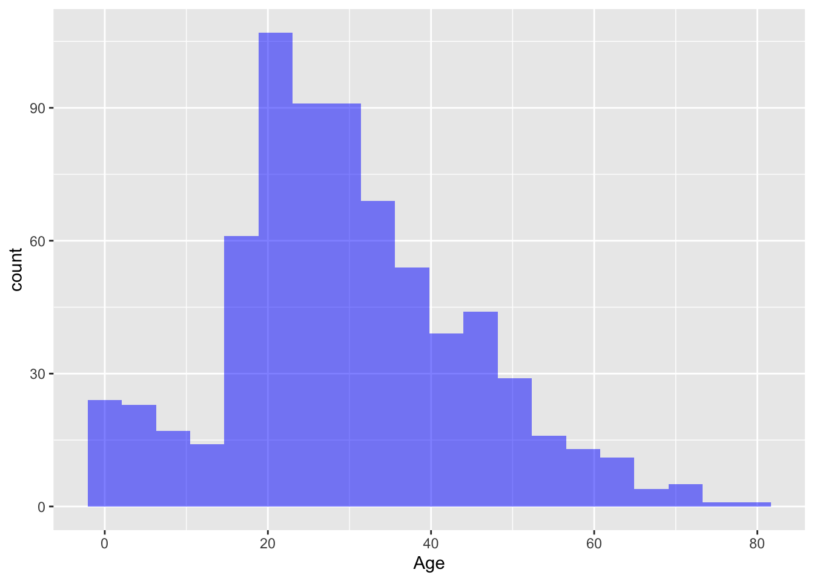
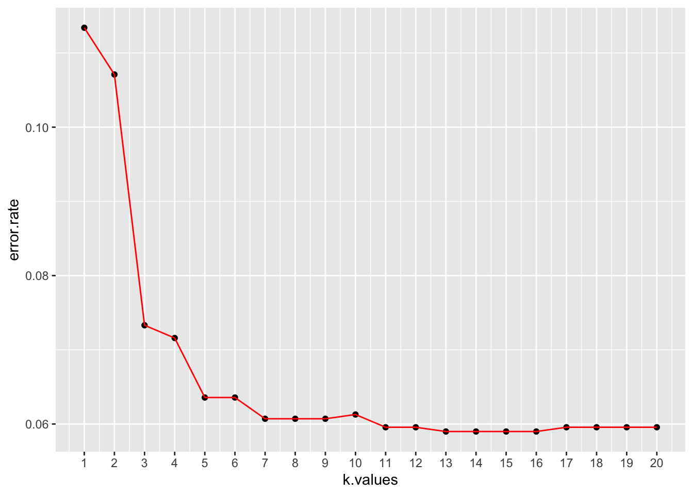

Chapter 11 Modeling Part 1
11.1 Regression Model (회귀모형)
11.1.1 Univariate Linear Regression (단변량 선형회기모형)
변수가 하나일때의 선형회귀를 단변량 선형 회귀 라고 합니다.
데이터을 가져오고 , 훈련데이터 및 테스트 데이터로 분할
# Univariate Linear Regression (단변량 선형회기모형)
library(tidyverse)
# 데이터셋 읽기
dataset = read_csv('Salary_Data.csv')
# 데이터셋을 Training set 과 Test set 으로 분할 합니다.
# install.packages('caTools')
library(caTools)
set.seed(123)
split = sample.split(dataset$Salary, SplitRatio = 2/3)
training_set = subset(dataset, split == TRUE)
test_set = subset(dataset, split == FALSE)- feature 스케일링 및 모델 핏팅
# Feature 스케일링
# training_set = scale(training_set)
# test_set = scale(test_set)
# Training 데이터를 단변량 선형회기 함수에 핏팅 합니다.
regressor = lm(formula = Salary ~ YearsExperience,
data = training_set)- 모델에 대한 정보를 보기 위해 summary 함수를 호출하면 모델에 대한 다양한 통계 정보를 확인 할수 있습니다.
| 항목 | 설명 |
|---|---|
| Residuals(잔차) | 예측과 실측 사이의 잔차에 대한 분포를 보여 줍니다 |
| Coefficients(계수) | 각각의 변수에 대한 P value 정보를 보여 줍니다. * 가 많으면 통계적으로 유의 |
| Signif | P Value 에 따른 Significant Levle 구간을 표시 합니다. |
| R-Squard | 만들어진 모델이 얼마나 데이터를 잘 설명하는지를 보여주는 지표 |
summary(regressor)##
## Call:
## lm(formula = Salary ~ YearsExperience, data = training_set)
##
## Residuals:
## Min 1Q Median 3Q Max
## -7325.1 -3814.4 427.7 3559.7 8884.6
##
## Coefficients:
## Estimate Std. Error t value Pr(>|t|)
## (Intercept) 25592 2646 9.672 1.49e-08 ***
## YearsExperience 9365 421 22.245 1.52e-14 ***
## ---
## Signif. codes: 0 '***' 0.001 '**' 0.01 '*' 0.05 '.' 0.1 ' ' 1
##
## Residual standard error: 5391 on 18 degrees of freedom
## Multiple R-squared: 0.9649, Adjusted R-squared: 0.963
## F-statistic: 494.8 on 1 and 18 DF, p-value: 1.524e-14- 테스트 데이터를 모델에 넣어서 scoring 수행
y_pred = predict(regressor, newdata = test_set)
y_pred## 1 2 3 4 5 6 7
## 37766.77 44322.33 46195.35 55560.43 62115.99 71481.07 81782.66
## 8 9 10
## 89274.72 102385.84 109877.90- 훈련 데이터 데이터에 대해 모델 그려보기
library(ggplot2)
ggplot() +
geom_point(aes(x = training_set$YearsExperience, y = training_set$Salary),
colour = 'red') +
geom_line(aes(x = training_set$YearsExperience, y = predict(regressor, newdata = training_set)),
colour = 'blue') +
ggtitle('Salary vs Experience (Training set)') +
xlab('Years of experience') +
ylab('Salary')
- 테스트 데이터에 대해 모델 그려보기
- 산점도(데이터)는 test_set 으로 선그래프(model)는 training_set 으로 그립니다.
# 테스트 데이터에 대해 모델 그려보기
library(ggplot2)
ggplot() +
geom_point(aes(x = test_set$YearsExperience, y = test_set$Salary),
colour = 'red') +
geom_line(aes(x = training_set$YearsExperience, y = predict(regressor, newdata = training_set)),
colour = 'blue') +
ggtitle('Salary vs Experience (Test set)') +
xlab('Years of experience') +
ylab('Salary')
11.1.2 Multivariate Linear Regression (다변량 선형회기모형)
- 여러개의 X 변수에 대한 회귀를 다변량 선형 회귀 라고 합니다.
# Multivariate Linear Regression (다변량 선형회기모형)
# 데이터셋 읽기
library(tidyverse)
dataset = read_csv('50_Startups.csv')
# 범주형 데이터에 대해 원핫인코딩 합니다.
dataset$State = factor(dataset$State,
levels = c('New York', 'California', 'Florida'),
labels = c(1, 2, 3))
# 데이터셋을 Training set 과 Test set 으로 분할 합니다.
# install.packages('caTools')
library(caTools)
set.seed(123)
split = sample.split(dataset$Profit, SplitRatio = 0.8)
training_set = subset(dataset, split == TRUE)
test_set = subset(dataset, split == FALSE)
# Feature 스케일링
# training_set = scale(training_set)
# test_set = scale(test_set)
# 훈련 데이터를 다변량 회귀에 핏팅 합니다.
regressor = lm(formula = Profit ~ .,
data = training_set)
summary(regressor)##
## Call:
## lm(formula = Profit ~ ., data = training_set)
##
## Residuals:
## Min 1Q Median 3Q Max
## -33128 -4865 5 6098 18065
##
## Coefficients:
## Estimate Std. Error t value Pr(>|t|)
## (Intercept) 4.965e+04 7.637e+03 6.501 1.94e-07 ***
## `R&D Spend` 7.986e-01 5.604e-02 14.251 6.70e-16 ***
## Administration -2.942e-02 5.828e-02 -0.505 0.617
## `Marketing Spend` 3.268e-02 2.127e-02 1.537 0.134
## State2 1.213e+02 3.751e+03 0.032 0.974
## State3 2.376e+02 4.127e+03 0.058 0.954
## ---
## Signif. codes: 0 '***' 0.001 '**' 0.01 '*' 0.05 '.' 0.1 ' ' 1
##
## Residual standard error: 9908 on 34 degrees of freedom
## Multiple R-squared: 0.9499, Adjusted R-squared: 0.9425
## F-statistic: 129 on 5 and 34 DF, p-value: < 2.2e-16# 만들어진 모델을 이용해 테스트 데이터에 대해 스코어링 수행
y_pred = predict(regressor, newdata = test_set)
y_pred## 1 2 3 4 5 6 7
## 173981.09 172655.64 160250.02 135513.90 146059.36 114151.03 117081.62
## 8 9 10
## 110671.31 98975.29 96867.0311.1.3 Polynomial Regression (다항 선형회기모형)
# Polynomial Regression (다항 선형회기모형)
# 데이터 읽기
dataset = read.csv('Position_Salaries.csv')
dataset## Position Level Salary
## 1 Business Analyst 1 45000
## 2 Junior Consultant 2 50000
## 3 Senior Consultant 3 60000
## 4 Manager 4 80000
## 5 Country Manager 5 110000
## 6 Region Manager 6 150000
## 7 Partner 7 200000
## 8 Senior Partner 8 300000
## 9 C-level 9 500000
## 10 CEO 10 1000000dataset = dataset[2:3]
# Splitting the dataset into the Training set and Test set
# # install.packages('caTools')
# library(caTools)
# set.seed(123)
# split = sample.split(dataset$Salary, SplitRatio = 2/3)
# training_set = subset(dataset, split == TRUE)
# test_set = subset(dataset, split == FALSE)
# Feature Scaling
# training_set = scale(training_set)
# test_set = scale(test_set)
# Fitting Linear Regression to the dataset
lin_reg = lm(formula = Salary ~ .,
data = dataset)
# Fitting Polynomial Regression to the dataset
dataset$Level2 = dataset$Level^2
dataset$Level3 = dataset$Level^3
dataset$Level4 = dataset$Level^4
poly_reg = lm(formula = Salary ~ .,
data = dataset)
# Visualising the Linear Regression results
# install.packages('ggplot2')
library(ggplot2)
ggplot() +
geom_point(aes(x = dataset$Level, y = dataset$Salary),
colour = 'red') +
geom_line(aes(x = dataset$Level, y = predict(lin_reg, newdata = dataset)),
colour = 'blue') +
ggtitle('Truth or Bluff (Linear Regression)') +
xlab('Level') +
ylab('Salary')
# Visualising the Polynomial Regression results
# install.packages('ggplot2')
library(ggplot2)
ggplot() +
geom_point(aes(x = dataset$Level, y = dataset$Salary),
colour = 'red') +
geom_line(aes(x = dataset$Level, y = predict(poly_reg, newdata = dataset)),
colour = 'blue') +
ggtitle('Truth or Bluff (Polynomial Regression)') +
xlab('Level') +
ylab('Salary')
# Visualising the Regression Model results (for higher resolution and smoother curve)
# install.packages('ggplot2')
library(ggplot2)
x_grid = seq(min(dataset$Level), max(dataset$Level), 0.1)
ggplot() +
geom_point(aes(x = dataset$Level, y = dataset$Salary),
colour = 'red') +
geom_line(aes(x = x_grid, y = predict(poly_reg,
newdata = data.frame(Level = x_grid,
Level2 = x_grid^2,
Level3 = x_grid^3,
Level4 = x_grid^4))),
colour = 'blue') +
ggtitle('Truth or Bluff (Polynomial Regression)') +
xlab('Level') +
ylab('Salary')
# Predicting a new result with Linear Regression
predict(lin_reg, data.frame(Level = 6.5))## 1
## 330378.8# Predicting a new result with Polynomial Regression
predict(poly_reg, data.frame(Level = 6.5,
Level2 = 6.5^2,
Level3 = 6.5^3,
Level4 = 6.5^4))## 1
## 158862.511.1.4 Support Vector Regression
11.1.5 Decision Tree Regression (결정나무트리 모형)
11.1.6 Random Forest Regression
11.1.7 Regression 모형의 성능 측정
11.2 Classification Model (분류모형)
11.2.1 Logistic Regression
Logistic Regression 실습에서는 Kagge 타이타닉 데이터 로 모델 실습을 하겠습니다. 승객 들의 여러가지 정보를 바탕으로 Logistic Regression 을 바탕으로 생존 예측을 해보도록 하겠습니다.
데이터 불러오기
library(tidyverse)
df.train <- read_csv('titanic_train.csv')11.2.1.1 Amelia 패키지를 이용한 결측치 시각화
현재 타이타닉 데이터 셋의 age(나이) 컬럼은 NA 값이 존재 합니다. 얼마나 존재 하는 지 확인하기 위해 Amelias 패키지를 통해 NA 값을 시각화 합니다.
# is.na(df.train) # is.na 합수는 전체 데이터에 대해 TRUE FALSE 로 보여 주기 때문에 한번에 알아보기가 힘듭니다.
# install.packages("Amelia")
library(Amelia)
missmap(df.train, main="Titanic Training Data - NA",
col=c("yellow", "black"), legend=FALSE)
- Cabin(선실), Age(나이) 값들에 NA 가 존재 합니다. Age 데이터의 경우 약 20% 정도가 결측(NA) 가 있습니다. 일단 NA 값이 어떠한 분포로 얼마나 많이 있는지 시각화를 했습니다. 이후 과정에서 결측(NA)치 를 처리 할 것입니다.
11.2.1.2 ggplot2 를 이용한 데이터 시각화
- 생존/사망의 비율을 시각화 해봅니다.
ggplot(df.train,aes(Survived)) + geom_bar()
- 승객 Pclass(등급) 별로 몇명이 있는지 확인 해봅니다.
df.train %>% ggplot(aes(Pclass)) + geom_bar(aes(fill=factor(Pclass)),alpha=0.5)
- 승객의 성(Sex) 비율이 어덯게 되는지 봅니다.
df.train %>% ggplot(aes(Sex)) + geom_bar(aes(fill=factor(Sex)),alpha=0.5)
df.train %>% ggplot(aes(Age)) + geom_histogram(fill='blue',bins=20,alpha=0.5)
- SibSp(동승자)가 몇명이나 되는지 확인 합시다.
df.train %>% ggplot(aes(Fare)) + geom_histogram(fill='green',color='black',alpha=0.5)
11.2.1.3 데이터 클린징
- 앞서 age 데이터에 결측(NA) 값이 20% 정도 발견이 되었습니다.
- 직관적으로 승객의 나이가 생존 여부와 상관이 있을것 같기 때문에 age 변수를 없애거나 입의이 값으로 대체 해야 합니다.
- 결측된 age 컬럼을 가진 관측치를 없애기에는 데이터가 조금(20%) 많습니다.
- Age 값을 전체 데이터의 평균 값으로 넣어도 되지만, 좀더 모델을 성능을 높이기 위해 Age 와 상관 있는 변수가 무엇인지 고민해 보면 Pclass(승객등급) 별로 나이가 다를 것 같습니다. 일단 그려 봅니다.
df.train %>% ggplot(aes(Pclass,Age)) +
geom_boxplot(aes(group=Pclass,fill=factor(Pclass),alpha=0.4)) +
scale_y_continuous(breaks = seq(min(0), max(80), by = 2))
- 그래프를 확인해보면 객실 등급별로 전체 적인 평균 나이가 차이가 납니다.
Age(나이)에 대한 결측치를 Pclass(승객등급) 의 평균 나이로 설정하면 좀더 정확한 모델을 만들수 있습니다.
- 아래 함수는 결측치가 있을 경우 해당하는 사람의 승객등급을 확인하고 앞서 확인한 승객 등급별 평균 나이를 반환하는 함수 입니다.
returunPclassAge <- function(age,class){
out <- age
for (i in 1:length(age)){
if (is.na(age[i])){
if (class[i] == 1){
out[i] <- 37
}else if (class[i] == 2){
out[i] <- 29
}else{
out[i] <- 24
}
}else{
out[i]<-age[i]
}
}
return(out)
}df.train <- df.train %>% mutate(Age = returunPclassAge(Age, Pclass))- 다시 Amelia 패키지의 missmap 한수를 돌려 결측치를 확인합니다.
missmap(df.train, main="Titanic Training Data - NA",
col=c("yellow", "black"), legend=FALSE)
- Age 변수의 결측(NA) 들을 Pclass(승객등급) 별 평균 나이로 설정 하여 결측치를 제거 하였습니다.
11.2.1.4 모델 학습을 위한 데이터 전처리
- 불필요한 변수를 제거 합니다. 물론, 제거 하지 않고 p value 를 확인해서 나중에 fitting 과정에서 제거 해도 됩니다.
str(df.train)## Classes 'spec_tbl_df', 'tbl_df', 'tbl' and 'data.frame': 891 obs. of 12 variables:
## $ PassengerId: num 1 2 3 4 5 6 7 8 9 10 ...
## $ Survived : num 0 1 1 1 0 0 0 0 1 1 ...
## $ Pclass : num 3 1 3 1 3 3 1 3 3 2 ...
## $ Name : chr "Braund, Mr. Owen Harris" "Cumings, Mrs. John Bradley (Florence Briggs Thayer)" "Heikkinen, Miss. Laina" "Futrelle, Mrs. Jacques Heath (Lily May Peel)" ...
## $ Sex : chr "male" "female" "female" "female" ...
## $ Age : num 22 38 26 35 35 24 54 2 27 14 ...
## $ SibSp : num 1 1 0 1 0 0 0 3 0 1 ...
## $ Parch : num 0 0 0 0 0 0 0 1 2 0 ...
## $ Ticket : chr "A/5 21171" "PC 17599" "STON/O2. 3101282" "113803" ...
## $ Fare : num 7.25 71.28 7.92 53.1 8.05 ...
## $ Cabin : chr NA "C85" NA "C123" ...
## $ Embarked : chr "S" "C" "S" "S" ...head(df.train,3)## # A tibble: 3 x 12
## PassengerId Survived Pclass Name Sex Age SibSp Parch Ticket Fare
## <dbl> <dbl> <dbl> <chr> <chr> <dbl> <dbl> <dbl> <chr> <dbl>
## 1 1 0 3 Brau… male 22 1 0 A/5 2… 7.25
## 2 2 1 1 Cumi… fema… 38 1 0 PC 17… 71.3
## 3 3 1 3 Heik… fema… 26 0 0 STON/… 7.92
## # … with 2 more variables: Cabin <chr>, Embarked <chr># 데이터 셋에서 PassengerId, Name, Ticket, Cabin 컬럼을 제거 합니다.
df.train <- df.train %>% select(-PassengerId,-Name,-Ticket,-Cabin)
head(df.train,3)## # A tibble: 3 x 8
## Survived Pclass Sex Age SibSp Parch Fare Embarked
## <dbl> <dbl> <chr> <dbl> <dbl> <dbl> <dbl> <chr>
## 1 0 3 male 22 1 0 7.25 S
## 2 1 1 female 38 1 0 71.3 C
## 3 1 3 female 26 0 0 7.92 S- 문자현 변수들에 대해 범주형으로 바꿔 줍니다. 범주형 변수(Factor) 로 바꿔주면 Level이 생기고 나중에 Pvalue 값를 확인할때 Level 에 대한 Pvalue 를 자동으로 만들어 줍니다.
- Survived, Pclass, Parch, SibSp 문자형 변수에 대해 Factor 로 변환 합니다.
str(df.train)## Classes 'spec_tbl_df', 'tbl_df', 'tbl' and 'data.frame': 891 obs. of 8 variables:
## $ Survived: num 0 1 1 1 0 0 0 0 1 1 ...
## $ Pclass : num 3 1 3 1 3 3 1 3 3 2 ...
## $ Sex : chr "male" "female" "female" "female" ...
## $ Age : num 22 38 26 35 35 24 54 2 27 14 ...
## $ SibSp : num 1 1 0 1 0 0 0 3 0 1 ...
## $ Parch : num 0 0 0 0 0 0 0 1 2 0 ...
## $ Fare : num 7.25 71.28 7.92 53.1 8.05 ...
## $ Embarked: chr "S" "C" "S" "S" ...df.train$Survived <- factor(df.train$Survived)
df.train$Pclass <- factor(df.train$Pclass)
df.train$Parch <- factor(df.train$Parch)
df.train$SibSp <- factor(df.train$SibSp)11.2.1.5 훈련데이터와 테스트 데이터 나누기
library(caTools)
set.seed(101)
split = sample.split(df.train$Survived, SplitRatio = 0.70)
final.train = subset(df.train, split == TRUE)
final.test = subset(df.train, split == FALSE)final.log.model1 <- glm(formula=Survived ~ . , family = binomial(link='logit'),data = final.train)
summary(final.log.model1)##
## Call:
## glm(formula = Survived ~ ., family = binomial(link = "logit"),
## data = final.train)
##
## Deviance Residuals:
## Min 1Q Median 3Q Max
## -2.8315 -0.5604 -0.4093 0.6175 2.4904
##
## Coefficients:
## Estimate Std. Error z value Pr(>|z|)
## (Intercept) 3.804e+00 6.208e-01 6.128 8.89e-10 ***
## Pclass2 -1.236e+00 3.812e-01 -3.243 0.001183 **
## Pclass3 -2.166e+00 3.839e-01 -5.642 1.68e-08 ***
## Sexmale -2.666e+00 2.465e-01 -10.814 < 2e-16 ***
## Age -3.836e-02 1.035e-02 -3.708 0.000209 ***
## SibSp1 -2.380e-02 2.756e-01 -0.086 0.931185
## SibSp2 -4.016e-01 6.466e-01 -0.621 0.534536
## SibSp3 -2.329e+00 9.000e-01 -2.588 0.009649 **
## SibSp4 -1.196e+00 8.305e-01 -1.440 0.149805
## SibSp5 -1.603e+01 9.589e+02 -0.017 0.986662
## SibSp8 -1.633e+01 1.003e+03 -0.016 0.987012
## Parch1 7.287e-01 3.548e-01 2.054 0.040007 *
## Parch2 1.368e-01 4.506e-01 0.304 0.761476
## Parch3 7.904e-01 1.229e+00 0.643 0.520061
## Parch4 -1.498e+01 1.551e+03 -0.010 0.992294
## Parch5 -1.221e-02 1.379e+00 -0.009 0.992935
## Parch6 -1.635e+01 2.400e+03 -0.007 0.994563
## Fare 3.145e-03 3.097e-03 1.015 0.309957
## EmbarkedQ 1.019e-01 4.509e-01 0.226 0.821153
## EmbarkedS -3.269e-01 2.905e-01 -1.125 0.260600
## ---
## Signif. codes: 0 '***' 0.001 '**' 0.01 '*' 0.05 '.' 0.1 ' ' 1
##
## (Dispersion parameter for binomial family taken to be 1)
##
## Null deviance: 829.60 on 622 degrees of freedom
## Residual deviance: 530.82 on 603 degrees of freedom
## AIC: 570.82
##
## Number of Fisher Scoring iterations: 15- 테스트 데이터로 스코어링 수행
fitted.probabilities1 <- predict(final.log.model1,newdata=final.test,type='response')- 스코어링 결과에서 0.5 가 넘는 것(생존)은 1, 0.5 이하(사망)은 0 으로
fitted.results1 <- ifelse(fitted.probabilities1 > 0.5,1,0)- 스코어링 결과 와 테스트 데이터의 라벨을 비교해서 오분류율을 구하고 1에서 오분류 율을 빼서 정답율 을 구합니다.
misClasificError <- mean(fitted.results1 != final.test$Survived)
print(paste('Accuracy',1-misClasificError))## [1] "Accuracy 0.798507462686567"table(final.test$Survived, fitted.probabilities1 > 0.5)##
## FALSE TRUE
## 0 140 25
## 1 29 7411.2.1.6 모델 평가
- 모델평가를 테스트로 하기 휘해서 Logistic Regression 에서 특정 변수만 넣어서서 모델을 하나 더 만들고 기존 모델과 성능을 평가해 보도록 하겠습니다.
#install.packages("ROCR")
library(ROCR) # ROC 커브를 그리기 위한 패키지
# 두번째 모델을 훈련 시킵니다.
final.log.model2 <- glm(formula=Survived ~ Pclass + Fare , family = binomial(link='logit'),data = final.train)
# 테스트 데이터로 동일하게 스코어링 수행
fitted.probabilities2 <- predict(final.log.model2,newdata=final.test,type='response')- 이제부터는 prediction 함수를 이용해서 라벨(정답) 값에 대한 예측정확도를 구합니다.
- 첫번째 모델과 두번째 모델을 모두 구합니다.
predict1 <- prediction(fitted.probabilities1 , final.test$Survived )
predict2 <- prediction(fitted.probabilities2 , final.test$Survived )- 정확도를 이용해서 Performance 함수를 이용해서 모델의 성능을 구합니다. 여기서 말하는 성능은 Confusion Matrix 에서 TPR(민감도) FPR(특이도) 을 반환 합니다.
# 첫번째 모델에 대한 ROC 커브를 그립니다.
perf1 <- performance(predict1, "tpr", "fpr")
perf2 <- performance(predict2, "tpr", "fpr")
# 2개의 ROC 곡선을 하나의 차트에 그립니다.
plot(perf1, col=1)
par(new=T) # 첫번째 차트에 추가 해도됨.(같이 겹쳐그리기 위해)
plot(perf2, col=2)
legend(0.6,0.6, c("model1", "model2"), 1:2)
- 실제 model 2 오분류 율을 확인해 봅니다.
11.2.2 K-Nearest Neighbors(K-NN)
- KNN 을 적용하여 수집된 정보를 바탕으로 고객이 Caraban 을 살것인지 말것인지를 예측하는 실습 을 해보겠습니다.
11.2.2.1 데이터 다운로드
- 데이터는 ISLR 패키지에 있습니다. 설치 하고 library 함수를 이용해 불러옵니다.
install.packages('ISLR',repos = 'http://cran.us.r-project.org')##
## The downloaded binary packages are in
## /var/folders/qx/j_2_gqz94yg0nsdycn8_rtlm0000gn/T//Rtmp9Rb6JQ/downloaded_packageslibrary(ISLR)11.2.2.2 데이터 정규화(Scaling)
- KNN 은 가까운 이웃간의 공간 거리로 분류를 하는 모델이기 때문에 데이터 표준화가 매우 중요합니다.
- 첫번째, 두번째 데이터의 분포(Variance) 를 확인해보면 차이가 큽니다.
# 첫번때 Feature 와 두번째 Feature 의 데이터 분포를 확인 합니다.
var(Caravan[,1]) # 데이터 분포(Variance) 를 확인합니다.## [1] 165.0378var(Caravan[,2]) # 데이터 분포(Variance) 를 확인합니다.## [1] 0.1647078- 레이블(정답) 데이터를 제외함 모든 데이터에 대해 정규화를 수행합니다.
# 레이블 컬럼을 따로 저장 해둡니다.
stdCaraban <- Caravan %>% mutate_at(vars(-Purchase), scale)
var(stdCaraban[,1])## [,1]
## [1,] 1var(stdCaraban[,2])## [,1]
## [1,] 111.2.2.3 훈련데이터와 테스트 데이터 나누기
- knn 모델 함수는 인자로 훈련데이터, 테스트 데이터, 훈련데이터 레이블 을 받습니다.
- 일반적인 머신러닝 함수들은 훈련데이터에 레이블을 포함해서 받지만, knn 함수는 따로 분리해서 인자를 받기 때문에 데이터셋을 나룰때 레이블도 같이 나누어 주어야 합니다.
library(caTools)
set.seed(101)
split = sample.split(stdCaraban$Purchase, SplitRatio = 0.70)
knn.train.data <- subset(stdCaraban, split == TRUE) # 훈련데이터 수집
knn.train.purchase <- knn.train.data$Purchase # 훈련데이터 레이블 따로 저장
knn.train.data <- knn.train.data %>% select_at(vars(-Purchase)) # 훈련데이터 에서 레이블 제거
knn.test.data <- subset(stdCaraban, split == FALSE) # 테스트데이터 수집
knn.test.purchase <- knn.test.data$Purchase # 테스트데이터 레이블 따로 저장
knn.test.data <- knn.test.data %>% select_at(vars(-Purchase)) # 테스트데이터 에서 레이블 제거11.2.2.4 KNN 모델 만들기
library(class)
knn.predicted.purchase1 <- knn(knn.train.data, knn.test.data, knn.train.purchase,k=1)
head(knn.predicted.purchase1)## [1] No No No Yes No No
## Levels: No Yes- 오분류 퍼센트를 알아봅니다.
mean(knn.test.purchase != knn.predicted.purchase1)## [1] 0.113402111.2.2.5 적당한 K 값찾기
- k 값을 3으로 주었을때
knn.predicted.purchase3 <- knn(knn.train.data, knn.test.data, knn.train.purchase,k=3)
mean(knn.test.purchase != knn.predicted.purchase3)## [1] 0.07216495- k 값을 5로 주었을때
knn.predicted.purchase5 <- knn(knn.train.data, knn.test.data, knn.train.purchase,k=5)
mean(knn.test.purchase != knn.predicted.purchase5)## [1] 0.0641466211.2.2.6 k 값 자동으로 찾기
우리가 1주차에 배운 for 루프를 써서 k 값을 자동으로 찾아 봅시다
knn.predicted.purchase = NULL
error.rate = NULL
for(i in 1:20){
knn.predicted.purchase = knn(knn.train.data, knn.test.data, knn.train.purchase,k=i)
error.rate[i] = mean(knn.test.purchase != knn.predicted.purchase)
}
print(error.rate)## [1] 0.11340206 0.10710195 0.07331042 0.07159221 0.06357388 0.06357388
## [7] 0.06071019 0.06071019 0.06071019 0.06128293 0.05956472 0.05956472
## [13] 0.05899198 0.05899198 0.05899198 0.05899198 0.05956472 0.05956472
## [19] 0.05956472 0.0595647211.2.2.7 Elbow 방법을 통한 k 값찾기
library(ggplot2)
k.values <- 1:20
error.df <- as_tibble(error.rate,k.values)
error.df## # A tibble: 20 x 1
## value
## <dbl>
## 1 0.113
## 2 0.107
## 3 0.0733
## 4 0.0716
## 5 0.0636
## 6 0.0636
## 7 0.0607
## 8 0.0607
## 9 0.0607
## 10 0.0613
## 11 0.0596
## 12 0.0596
## 13 0.0590
## 14 0.0590
## 15 0.0590
## 16 0.0590
## 17 0.0596
## 18 0.0596
## 19 0.0596
## 20 0.0596error.df %>% ggplot(aes(x=k.values,y=error.rate)) +
geom_point()+ geom_line(color='red') +
scale_x_continuous(breaks=seq(0, 20, 1))
11.2.3 Support Vector Machine(SVM)
- support vector Machine 을 이용해서 소셜광고 후에 나이와 연봉을 수집해서 제품을 구매 할 고객인지 아닌지 예측 하는 모델을 만들어 보겠습니다.
11.2.3.1 데이터셋 가져와서 테스트데이터와 훈련데이터 나누기
# Support Vector Machine (SVM)
# Importing the dataset
dataset = read.csv('Social_Network_Ads.csv')
#dataset
dataset = dataset[3:5]
# 레이블을 factor형으로 변형 합니다.
dataset$Purchased = factor(dataset$Purchased, levels = c(0, 1))
# 훈련데이터 와 테스트 데이터로 나누기
# install.packages('caTools')
library(caTools)
set.seed(123)
split = sample.split(dataset$Purchased, SplitRatio = 0.75) # 이번에는 0.75 로 나눠 봅니다.
svm.train.data = subset(dataset, split == TRUE)
svm.test.data = subset(dataset, split == FALSE)11.2.3.2 데이터 전처리
- svm 동일 하나의 공간에서 Support Vector 를 이용해서 구분하기 때문에 Feature 에 대한 Scale이 필요합니다.
# Feature 스케일링 : 이번에는 mutate 함수를 사용하지 않고 더간단한게 scale 함수를 적용합니다.
svm.train.data[-3] = scale(svm.train.data[-3])
svm.test.data[-3] = scale(svm.test.data[-3])
# Fitting SVM to the Training set
# install.packages('e1071')11.2.3.3 SVM(linear) 함수를 이용해서 모델 만들고 fitting 하기
- r 에서 제공하는 svm type 은 크게 4가지 종류가 있으며 svm-type 을 참조면 됩니다.
- kernel 함수를 linear 를 사용해서 고차원 커널 트릭을 사용하지 않는 것으로 모델을 만들어 봅니다.
#install.packages("e1071")
library(e1071)
svm.fitted.model1 = svm(formula = Purchased ~ .,
data = svm.train.data,
type = 'C-classification',
kernel = 'linear',
probability=TRUE)
# 테스트 데이터로 스코어링
svm.predicted.purchase1 = predict(svm.fitted.model1, newdata = svm.test.data[-3],decision.values=TRUE)11.2.3.4 예측 결과 테이블 확인
# Making the Confusion Matrix
cm1 = table(svm.test.data$Purchased, svm.predicted.purchase1)
cm1## svm.predicted.purchase1
## 0 1
## 0 57 7
## 1 13 2311.2.3.5 SVM(RBF) 함수를 이용해서 모델 만들고 fitting 하기
library(e1071)
svm.fitted.model2= svm(formula = Purchased ~ .,
data = svm.train.data,
type = 'C-classification',
kernel = 'radial', # RBF 커널 적용
probability=TRUE)
# 두번째 모델 테스트 데이터로 스코어링
svm.predicted.purchase2 = predict(svm.fitted.model2, newdata = svm.test.data[-3], decision.values=TRUE)
cm2= table(svm.test.data$Purchased, svm.predicted.purchase2)
cm2## svm.predicted.purchase2
## 0 1
## 0 58 6
## 1 4 3211.2.3.6 ROC 커브그리기
#install.packages("ROCR")
library(ROCR) # ROC 커브를 그리기 위한 패키지
#
svm.prob1<-attr(svm.predicted.purchase1,"decision.values")
svm.prob2<-attr(svm.predicted.purchase2,"decision.values")
predict1 <- prediction(svm.prob1 , svm.test.data$Purchased )
predict2 <- prediction(svm.prob2 , svm.test.data$Purchased )
# 각각의 모델의 대한 TRP/ FPR 은 구합니다.
perf1 <- performance(predict1, "fpr", "tpr")
perf2 <- performance(predict2, "fpr", "tpr")
# 2개의 ROC 곡선을 하나의 차트에 그립니다.
plot(perf1, col=1)
par(new=T) # 첫번째 차트에 추가 해도됨.(같이 겹쳐그리기 위해)
plot(perf2, col=2)
legend(0.6,0.6, c("svm.linear", "svm.rbf"), 1:2)
11.2.4 Decision Tree Classification
- Decision Tree 모델을 학습기위해 미국 대학교 정보를 바탕으로 사립 학교 인지 공립 하교 인지 맟추는 모델을 만들어 보겠습니다.
- college 데이터를 불러오기 위해 ISRL 라이브러리를 인스톨 하고 불러옵니다.
11.2.4.1 데이터셋 설명
데이터셋 설명
Private A factor with levels No and Yes indicating private or public university Apps Number of applications received Accept Number of applications accepted Enroll Number of new students enrolled Top10perc Pct. new students from top 10% of H.S. class Top25perc Pct. new students from top 25% of H.S. class F.Undergrad Number of fulltime undergraduates P.Undergrad Number of parttime undergraduates Outstate Out-of-state tuition Room.Board Room and board costs Books Estimated book costs Personal Estimated personal spending PhD Pct. of faculty with Ph.D.’s Terminal Pct. of faculty with terminal degree S.F.Ratio Student/faculty ratio perc.alumni Pct. alumni who donate Expend Instructional expenditure per student Grad.Rate Graduation rate
11.2.4.2 데이터 불러오고 EDA 수행하기
#install.packages("ISRL")
library(ISLR)
head(College)## Private Apps Accept Enroll Top10perc
## Abilene Christian University Yes 1660 1232 721 23
## Adelphi University Yes 2186 1924 512 16
## Adrian College Yes 1428 1097 336 22
## Agnes Scott College Yes 417 349 137 60
## Alaska Pacific University Yes 193 146 55 16
## Albertson College Yes 587 479 158 38
## Top25perc F.Undergrad P.Undergrad Outstate
## Abilene Christian University 52 2885 537 7440
## Adelphi University 29 2683 1227 12280
## Adrian College 50 1036 99 11250
## Agnes Scott College 89 510 63 12960
## Alaska Pacific University 44 249 869 7560
## Albertson College 62 678 41 13500
## Room.Board Books Personal PhD Terminal
## Abilene Christian University 3300 450 2200 70 78
## Adelphi University 6450 750 1500 29 30
## Adrian College 3750 400 1165 53 66
## Agnes Scott College 5450 450 875 92 97
## Alaska Pacific University 4120 800 1500 76 72
## Albertson College 3335 500 675 67 73
## S.F.Ratio perc.alumni Expend Grad.Rate
## Abilene Christian University 18.1 12 7041 60
## Adelphi University 12.2 16 10527 56
## Adrian College 12.9 30 8735 54
## Agnes Scott College 7.7 37 19016 59
## Alaska Pacific University 11.9 2 10922 15
## Albertson College 9.4 11 9727 55df <- College- 숙식비용 과 졸업 비율을 이용해 사립학교와 공립학교를 구분 해봅니다.
df %>% ggplot(aes(x=Room.Board,y=Grad.Rate)) + geom_point(aes(color=Private))
- 정규과정 재학생의 비율을 사립과 공립을 나누어 histogram 으로 빈도를 보겠습니다.
df %>% ggplot(aes(F.Undergrad)) +
geom_histogram(aes(fill=Private),color='black',bins=50)
- 졸업율이 100% 가 넘는 학교가 있습니다. 확인해보고 100으로 맞추겠습니다.
df## Private Apps Accept Enroll
## Abilene Christian University Yes 1660 1232 721
## Adelphi University Yes 2186 1924 512
## Adrian College Yes 1428 1097 336
## Agnes Scott College Yes 417 349 137
## Alaska Pacific University Yes 193 146 55
## Albertson College Yes 587 479 158
## Albertus Magnus College Yes 353 340 103
## Albion College Yes 1899 1720 489
## Albright College Yes 1038 839 227
## Alderson-Broaddus College Yes 582 498 172
## Alfred University Yes 1732 1425 472
## Allegheny College Yes 2652 1900 484
## Allentown Coll. of St. Francis de Sales Yes 1179 780 290
## Alma College Yes 1267 1080 385
## Alverno College Yes 494 313 157
## American International College Yes 1420 1093 220
## Amherst College Yes 4302 992 418
## Anderson University Yes 1216 908 423
## Andrews University Yes 1130 704 322
## Angelo State University No 3540 2001 1016
## Antioch University Yes 713 661 252
## Appalachian State University No 7313 4664 1910
## Aquinas College Yes 619 516 219
## Arizona State University Main campus No 12809 10308 3761
## Arkansas College (Lyon College) Yes 708 334 166
## Arkansas Tech University No 1734 1729 951
## Assumption College Yes 2135 1700 491
## Auburn University-Main Campus No 7548 6791 3070
## Augsburg College Yes 662 513 257
## Augustana College IL Yes 1879 1658 497
## Augustana College Yes 761 725 306
## Austin College Yes 948 798 295
## Averett College Yes 627 556 172
## Baker University Yes 602 483 206
## Baldwin-Wallace College Yes 1690 1366 662
## Barat College Yes 261 192 111
## Bard College Yes 1910 838 285
## Barnard College Yes 2496 1402 531
## Barry University Yes 990 784 279
## Baylor University Yes 6075 5349 2367
## Beaver College Yes 1163 850 348
## Bellarmine College Yes 807 707 308
## Belmont Abbey College Yes 632 494 129
## Belmont University Yes 1220 974 481
## Beloit College Yes 1320 923 284
## Bemidji State University No 1208 877 546
## Benedictine College Yes 632 620 222
## Bennington College Yes 519 327 114
## Bentley College Yes 3466 2330 640
## Berry College Yes 1858 1221 480
## Bethany College Yes 878 816 200
## Bethel College KS Yes 202 184 122
## Bethel College Yes 502 384 104
## Bethune Cookman College Yes 1646 1150 542
## Birmingham-Southern College Yes 805 588 287
## Blackburn College Yes 500 336 156
## Bloomsburg Univ. of Pennsylvania No 6773 3028 1025
## Bluefield College Yes 377 358 181
## Bluffton College Yes 692 514 209
## Boston University Yes 20192 13007 3810
## Bowdoin College Yes 3356 1019 418
## Bowling Green State University No 9251 7333 3076
## Bradford College Yes 443 330 151
## Bradley University Yes 3767 3414 1061
## Brandeis University Yes 4186 2743 740
## Brenau University Yes 367 274 158
## Brewton-Parker College Yes 1436 1228 1202
## Briar Cliff College Yes 392 351 155
## Bridgewater College Yes 838 673 292
## Brigham Young University at Provo Yes 7365 5402 4615
## Brown University Yes 12586 3239 1462
## Bryn Mawr College Yes 1465 810 313
## Bucknell University Yes 6548 3813 862
## Buena Vista College Yes 860 688 285
## Butler University Yes 2362 2037 700
## Cabrini College Yes 599 494 224
## Caldwell College Yes 1011 604 213
## California Lutheran University Yes 563 247 247
## California Polytechnic-San Luis No 7811 3817 1650
## California State University at Fresno No 4540 3294 1483
## Calvin College Yes 1784 1512 913
## Campbell University Yes 2087 1339 657
## Campbellsville College Yes 848 587 298
## Canisius College Yes 2853 2193 753
## Capital University Yes 1747 1382 449
## Capitol College Yes 100 90 35
## Carleton College Yes 2694 1579 489
## Carnegie Mellon University Yes 8728 5201 1191
## Carroll College Yes 1160 991 352
## Carson-Newman College Yes 1096 951 464
## Carthage College Yes 1616 1427 434
## Case Western Reserve University Yes 3877 3156 713
## Castleton State College No 1257 940 363
## Catawba College Yes 1083 880 291
## Catholic University of America Yes 1754 1465 505
## Cazenovia College Yes 3847 3433 527
## Cedar Crest College Yes 776 607 198
## Cedarville College Yes 1307 1090 616
## Centenary College Yes 369 312 90
## Centenary College of Louisiana Yes 495 434 210
## Center for Creative Studies Yes 601 396 203
## Central College Yes 1283 1113 401
## Central Connecticut State University No 4158 2532 902
## Central Missouri State University No 4681 4101 1436
## Central Washington University No 2785 2011 1007
## Central Wesleyan College Yes 174 146 88
## Centre College Yes 1013 888 288
## Chapman University Yes 959 771 351
## Chatham College Yes 212 197 91
## Chestnut Hill College Yes 342 254 126
## Christendom College Yes 81 72 51
## Christian Brothers University Yes 880 520 224
## Christopher Newport University No 883 766 428
## Claflin College Yes 1196 697 499
## Claremont McKenna College Yes 1860 767 227
## Clark University Yes 2887 2059 457
## Clarke College Yes 460 340 167
## Clarkson University Yes 2174 1953 557
## Clemson University No 8065 5257 2301
## Clinch Valley Coll. of the Univ. of Virginia No 689 561 250
## Coe College Yes 1006 742 275
## Coker College Yes 604 452 295
## Colby College Yes 2848 1319 456
## Colgate University Yes 4856 2492 727
## College Misericordia Yes 1432 888 317
## College of Charleston No 4772 3140 1265
## College of Mount St. Joseph Yes 798 620 238
## College of Mount St. Vincent Yes 946 648 177
## College of Notre Dame Yes 344 264 97
## College of Notre Dame of Maryland Yes 457 356 177
## College of Saint Benedict Yes 938 864 511
## College of Saint Catherine Yes 511 411 186
## College of Saint Elizabeth Yes 444 359 122
## College of Saint Rose Yes 983 664 249
## College of Santa Fe Yes 546 447 189
## College of St. Joseph Yes 141 118 55
## College of St. Scholastica Yes 672 596 278
## College of the Holy Cross Yes 2994 1691 659
## College of William and Mary No 7117 3106 1217
## College of Wooster Yes 2100 1883 553
## Colorado College Yes 3207 1577 490
## Colorado State University No 9478 6312 2194
## Columbia College MO Yes 314 158 132
## Columbia College Yes 737 614 242
## Columbia University Yes 6756 1930 871
## Concordia College at St. Paul Yes 281 266 139
## Concordia Lutheran College Yes 232 216 106
## Concordia University CA Yes 688 497 144
## Concordia University Yes 528 403 186
## Connecticut College Yes 3035 1546 438
## Converse College Yes 440 407 149
## Cornell College Yes 1538 1329 383
## Creighton University Yes 2967 2836 876
## Culver-Stockton College Yes 1576 1110 274
## Cumberland College Yes 995 789 398
## D'Youville College Yes 866 619 157
## Dana College Yes 504 482 185
## Daniel Webster College Yes 585 508 153
## Dartmouth College Yes 8587 2273 1087
## Davidson College Yes 2373 956 452
## Defiance College Yes 571 461 174
## Delta State University No 967 945 459
## Denison University Yes 2762 2279 533
## DePauw University Yes 1994 1656 495
## Dickinson College Yes 3014 2539 487
## Dickinson State University No 434 412 319
## Dillard University Yes 1998 1376 651
## Doane College Yes 793 709 244
## Dominican College of Blauvelt Yes 360 329 108
## Dordt College Yes 604 562 328
## Dowling College Yes 1011 829 410
## Drake University Yes 2799 2573 839
## Drew University Yes 2153 1580 321
## Drury College Yes 700 650 314
## Duke University Yes 13789 3893 1583
## Earlham College Yes 1358 1006 274
## East Carolina University No 9274 6362 2435
## East Tennessee State University No 3330 2730 1303
## East Texas Baptist University Yes 379 341 265
## Eastern College Yes 458 369 165
## Eastern Connecticut State University No 2172 1493 564
## Eastern Illinois University No 5597 4253 1565
## Eastern Mennonite College Yes 486 440 227
## Eastern Nazarene College Yes 516 409 200
## Eckerd College Yes 1422 1109 366
## Elizabethtown College Yes 2417 1843 426
## Elmira College Yes 1457 1045 345
## Elms College Yes 245 208 125
## Elon College Yes 3624 2786 858
## Embry Riddle Aeronautical University Yes 3151 2584 958
## Emory & Henry College Yes 765 646 226
## Emory University Yes 8506 4168 1236
## Emporia State University No 1256 1256 853
## Erskine College Yes 659 557 167
## Eureka College Yes 560 454 113
## Evergreen State College No 1801 1101 438
## Fairfield University Yes 4784 3346 781
## Fayetteville State University No 1455 1064 452
## Ferrum College Yes 1339 1107 336
## Flagler College Yes 1415 714 338
## Florida Institute of Technology Yes 1947 1580 523
## Florida International University No 3306 2079 1071
## Florida Southern College Yes 1381 1040 374
## Florida State University No 11651 8683 3023
## Fontbonne College Yes 291 245 126
## Fordham University Yes 4200 2874 942
## Fort Lewis College No 3440 2823 1123
## Francis Marion University No 1801 1655 819
## Franciscan University of Steubenville Yes 553 452 228
## Franklin College Yes 804 632 281
## Franklin Pierce College Yes 5187 4471 446
## Freed-Hardeman University Yes 895 548 314
## Fresno Pacific College Yes 346 274 146
## Furman University Yes 2161 1951 685
## Gannon University Yes 2464 1908 678
## Gardner Webb University Yes 1110 930 332
## Geneva College Yes 668 534 237
## George Fox College Yes 809 726 294
## George Mason University No 5653 4326 1727
## George Washington University Yes 7875 5062 1492
## Georgetown College Yes 727 693 286
## Georgetown University Yes 11115 2881 1390
## Georgia Institute of Technology No 7837 4527 2276
## Georgia State University No 3793 2341 1238
## Georgian Court College Yes 348 281 127
## Gettysburg College Yes 3596 2466 575
## Goldey Beacom College Yes 633 468 284
## Gonzaga University Yes 1886 1524 526
## Gordon College Yes 674 565 282
## Goshen College Yes 440 396 221
## Goucher College Yes 1151 813 248
## Grace College and Seminary Yes 548 428 167
## Graceland College Yes 555 414 242
## Grand Valley State University No 5165 3887 1561
## Green Mountain College Yes 780 628 198
## Greensboro College Yes 608 494 176
## Greenville College Yes 510 387 194
## Grinnell College Yes 2039 1389 432
## Grove City College Yes 2491 1110 573
## Guilford College Yes 1202 1054 326
## Gustavus Adolphus College Yes 1709 1385 634
## Gwynedd Mercy College Yes 380 237 104
## Hamilton College Yes 3140 1783 454
## Hamline University Yes 1006 825 328
## Hampden - Sydney College Yes 817 644 307
## Hampton University Yes 7178 3755 1433
## Hanover College Yes 1006 837 317
## Hardin-Simmons University Yes 467 424 350
## Harding University Yes 1721 1068 806
## Hartwick College Yes 2083 1725 430
## Harvard University Yes 13865 2165 1606
## Harvey Mudd College Yes 1377 572 178
## Hastings College Yes 817 708 262
## Hendrix College Yes 823 721 274
## Hillsdale College Yes 920 745 347
## Hiram College Yes 922 729 244
## Hobart and William Smith Colleges Yes 2688 2081 500
## Hofstra University Yes 7428 5860 1349
## Hollins College Yes 602 498 215
## Hood College Yes 699 565 176
## Hope College Yes 1712 1483 624
## Houghton College Yes 949 786 302
## Huntingdon College Yes 608 520 127
## Huntington College Yes 450 430 125
## Huron University Yes 600 197 124
## Husson College Yes 723 652 361
## Illinois Benedictine College Yes 607 558 269
## Illinois College Yes 894 787 262
## Illinois Institute of Technology Yes 1756 1360 478
## Illinois State University No 8681 6695 2408
## Illinois Wesleyan University Yes 3050 1342 471
## Immaculata College Yes 268 253 103
## Incarnate Word College Yes 1163 927 386
## Indiana State University No 5659 4761 3147
## Indiana University at Bloomington No 16587 13243 5873
## Indiana Wesleyan University Yes 735 423 366
## Iona College Yes 4892 3530 913
## Iowa State University No 8427 7424 3441
## Ithaca College Yes 7259 5526 1368
## James Madison University No 11223 5285 2082
## Jamestown College Yes 472 410 262
## Jersey City State College No 2957 1423 691
## John Brown University Yes 605 405 284
## John Carroll University Yes 2421 2109 820
## Johns Hopkins University Yes 8474 3446 911
## Johnson State College No 833 669 279
## Judson College Yes 313 228 137
## Juniata College Yes 1005 859 298
## Kansas State University No 5880 4075 2833
## Kansas Wesleyan University Yes 589 575 148
## Keene State College No 3121 2446 822
## Kentucky Wesleyan College Yes 584 497 175
## Kenyon College Yes 2212 1538 408
## Keuka College Yes 461 381 174
## King's College Yes 1456 1053 381
## King College Yes 355 300 142
## Knox College Yes 1040 845 286
## La Roche College Yes 361 321 185
## La Salle University Yes 2929 1834 622
## Lafayette College Yes 4010 2402 572
## LaGrange College Yes 544 399 177
## Lake Forest College Yes 979 638 271
## Lakeland College Yes 497 452 231
## Lamar University No 2336 1725 1043
## Lambuth University Yes 831 538 224
## Lander University No 1166 1009 510
## Lawrence University Yes 1243 947 324
## Le Moyne College Yes 1470 1199 425
## Lebanon Valley College Yes 1386 1060 320
## Lehigh University Yes 6397 4304 1092
## Lenoir-Rhyne College Yes 979 743 259
## Lesley College Yes 244 198 82
## LeTourneau University Yes 477 417 204
## Lewis and Clark College Yes 2774 2092 482
## Lewis University Yes 1154 1050 395
## Lincoln Memorial University Yes 787 562 363
## Lincoln University No 1660 1091 326
## Lindenwood College Yes 810 484 356
## Linfield College Yes 1561 1188 458
## Livingstone College Yes 900 473 217
## Lock Haven University of Pennsylvania No 3570 2215 651
## Longwood College No 2747 1870 724
## Loras College Yes 1641 1283 527
## Louisiana College Yes 2013 1053 212
## Louisiana State University at Baton Rouge No 5996 4993 3079
## Louisiana Tech University No 2397 2144 1525
## Loyola College Yes 4076 3137 738
## Loyola Marymount University Yes 3768 2662 753
## Loyola University Yes 1891 1698 719
## Loyola University Chicago Yes 3579 2959 868
## Luther College Yes 1549 1392 587
## Lycoming College Yes 1286 1005 363
## Lynchburg College Yes 1756 1500 366
## Lyndon State College No 535 502 223
## Macalester College Yes 2939 1496 452
## MacMurray College Yes 740 558 177
## Malone College Yes 874 758 428
## Manchester College Yes 1004 802 239
## Manhattan College Yes 2432 1730 563
## Manhattanville College Yes 962 750 212
## Mankato State University No 3073 2672 1547
## Marian College of Fond du Lac Yes 824 670 337
## Marietta College Yes 1611 960 342
## Marist College Yes 4731 3171 830
## Marquette University Yes 5152 4600 1685
## Marshall University Yes 4226 3666 2007
## Mary Baldwin College Yes 499 441 199
## Mary Washington College No 4350 2178 756
## Marymount College Tarrytown Yes 478 327 117
## Marymount Manhattan College Yes 695 535 239
## Marymount University Yes 941 772 214
## Maryville College Yes 1464 888 176
## Maryville University Yes 549 397 169
## Marywood College Yes 1107 859 323
## Massachusetts Institute of Technology Yes 6411 2140 1078
## Mayville State University No 233 233 153
## McKendree College Yes 1002 555 119
## McMurry University Yes 578 411 187
## McPherson College Yes 420 293 93
## Mercer University Yes 2286 1668 564
## Mercyhurst College Yes 1557 1074 397
## Meredith College Yes 857 772 376
## Merrimack College Yes 1981 1541 514
## Mesa State College No 1584 1456 891
## Messiah College Yes 1742 1382 607
## Miami University at Oxford No 9239 7788 3290
## Michigan State University No 18114 15096 6180
## Michigan Technological University No 2618 2288 1032
## MidAmerica Nazarene College Yes 331 331 225
## Millersville University of Penn. No 6011 3075 960
## Milligan College Yes 610 461 189
## Millikin University Yes 1444 1261 456
## Millsaps College Yes 905 834 319
## Milwaukee School of Engineering Yes 1217 1088 496
## Mississippi College Yes 594 385 307
## Mississippi State University No 4255 3277 1609
## Mississippi University for Women No 480 405 380
## Missouri Southern State College No 1576 1326 913
## Missouri Valley College Yes 1310 983 316
## Monmouth College IL Yes 601 503 204
## Monmouth College Yes 2707 1881 478
## Montana College of Mineral Sci. & Tech. No 572 544 320
## Montana State University No 3500 2836 1779
## Montclair State University No 5220 2128 865
## Montreat-Anderson College Yes 263 223 103
## Moorhead State University No 2442 2164 1189
## Moravian College Yes 1232 955 303
## Morehouse College Yes 3708 1678 722
## Morningside College Yes 586 533 239
## Morris College Yes 882 730 330
## Mount Holyoke College Yes 1800 1314 526
## Mount Marty College Yes 279 276 126
## Mount Mary College Yes 235 217 121
## Mount Mercy College Yes 368 317 159
## Mount Saint Clare College Yes 325 284 95
## Mount Saint Mary's College Yes 1321 1159 328
## Mount Saint Mary College Yes 1170 695 238
## Mount St. Mary's College Yes 657 537 113
## Mount Union College Yes 1310 1086 458
## Mount Vernon Nazarene College Yes 510 485 334
## Muhlenberg College Yes 2519 1836 462
## Murray State University No 2225 1910 1190
## Muskingum College Yes 1109 922 375
## National-Louis University Yes 513 347 279
## Nazareth College of Rochester Yes 947 798 266
## New Jersey Institute of Technology No 1879 1216 483
## New Mexico Institute of Mining and Tech. No 787 601 233
## New York University Yes 13594 7244 2505
## Newberry College Yes 872 722 154
## Niagara University Yes 2220 1796 467
## North Adams State College No 1563 1005 240
## North Carolina A. & T. State University No 4809 3089 1429
## North Carolina State University at Raleigh No 10634 7064 3176
## North Carolina Wesleyan College Yes 812 689 195
## North Central College Yes 1127 884 308
## North Dakota State University No 2968 2297 1610
## North Park College Yes 465 361 176
## Northeast Missouri State University No 6040 4577 1620
## Northeastern University Yes 11901 8492 2517
## Northern Arizona University No 5891 4931 1973
## Northern Illinois University No 10706 7219 2397
## Northwest Missouri State University No 2729 2535 1257
## Northwest Nazarene College Yes 616 514 385
## Northwestern College Yes 860 811 366
## Northwestern University Yes 12289 5200 1902
## Norwich University Yes 1743 1625 626
## Notre Dame College Yes 379 324 107
## Oakland University No 3041 2581 1173
## Oberlin College Yes 4778 2767 678
## Occidental College Yes 2324 1319 370
## Oglethorpe University Yes 792 649 186
## Ohio Northern University Yes 2936 2342 669
## Ohio University No 11023 8298 3183
## Ohio Wesleyan University Yes 2190 1700 458
## Oklahoma Baptist University Yes 758 681 484
## Oklahoma Christian University Yes 776 765 351
## Oklahoma State University No 4522 3913 2181
## Otterbein College Yes 1496 1205 428
## Ouachita Baptist University Yes 910 773 450
## Our Lady of the Lake University Yes 2308 1336 295
## Pace University Yes 8256 3750 1522
## Pacific Lutheran University Yes 1603 1392 504
## Pacific Union College Yes 940 668 385
## Pacific University Yes 943 849 288
## Pembroke State University No 944 774 440
## Pennsylvania State Univ. Main Campus No 19315 10344 3450
## Pepperdine University Yes 3821 2037 680
## Peru State College No 701 501 458
## Pfeiffer College Yes 838 651 159
## Philadelphia Coll. of Textiles and Sci. Yes 1538 1259 468
## Phillips University Yes 692 576 174
## Piedmont College Yes 663 562 127
## Pikeville College Yes 404 400 169
## Pitzer College Yes 1133 630 220
## Point Loma Nazarene College Yes 809 687 428
## Point Park College Yes 875 744 207
## Polytechnic University Yes 1132 847 302
## Prairie View A. and M. University No 2405 2234 1061
## Presbyterian College Yes 1082 832 302
## Princeton University Yes 13218 2042 1153
## Providence College Yes 5139 3346 973
## Purdue University at West Lafayette No 21804 18744 5874
## Queens College Yes 516 392 154
## Quincy University Yes 1025 707 297
## Quinnipiac College Yes 3712 2153 806
## Radford University No 5702 4894 1742
## Ramapo College of New Jersey No 2088 957 362
## Randolph-Macon College Yes 1771 1325 306
## Randolph-Macon Woman's College Yes 696 616 169
## Reed College Yes 1966 1436 327
## Regis College Yes 427 385 143
## Rensselaer Polytechnic Institute Yes 4996 4165 936
## Rhodes College Yes 2302 1831 391
## Rider University Yes 3586 2424 730
## Ripon College Yes 587 501 211
## Rivier College Yes 484 386 141
## Roanoke College Yes 2227 1790 437
## Rockhurst College Yes 935 858 345
## Rocky Mountain College Yes 560 392 270
## Roger Williams University Yes 3304 2804 679
## Rollins College Yes 1777 1151 382
## Rosary College Yes 434 321 141
## Rowan College of New Jersey No 3820 1431 695
## Rutgers at New Brunswick No 48094 26330 4520
## Rutgers State University at Camden No 3366 1752 232
## Rutgers State University at Newark No 5785 2690 499
## Sacred Heart University Yes 2307 1896 509
## Saint Ambrose University Yes 897 718 276
## Saint Anselm College Yes 2095 1553 514
## Saint Cloud State University No 3971 3306 1921
## Saint Francis College IN Yes 213 166 85
## Saint Francis College Yes 1046 824 284
## Saint John's University Yes 933 800 444
## Saint Joseph's College IN Yes 920 684 225
## Saint Joseph's College Yes 833 682 217
## Saint Joseph's University Yes 2519 2003 776
## Saint Joseph College Yes 292 241 96
## Saint Louis University Yes 3294 2855 956
## Saint Mary's College Yes 888 734 393
## Saint Mary's College of Minnesota Yes 876 802 367
## Saint Mary-of-the-Woods College Yes 150 130 88
## Saint Michael's College Yes 1910 1380 463
## Saint Olaf College Yes 2248 1673 745
## Saint Peter's College Yes 1606 1413 530
## Saint Vincent College Yes 700 595 278
## Saint Xavier University Yes 785 647 295
## Salem-Teikyo University Yes 489 384 120
## Salem College Yes 335 284 132
## Salisbury State University No 4216 2290 736
## Samford University Yes 1680 1395 691
## San Diego State University No 9402 7020 2151
## Santa Clara University Yes 4019 2779 888
## Sarah Lawrence College Yes 1380 768 263
## Savannah Coll. of Art and Design Yes 1109 688 386
## Schreiner College Yes 584 413 131
## Scripps College Yes 855 632 139
## Seattle Pacific University Yes 1183 1016 411
## Seattle University Yes 2115 1540 494
## Seton Hall University Yes 4576 3565 1000
## Seton Hill College Yes 936 794 197
## Shippensburg University of Penn. No 5818 3281 1116
## Shorter College Yes 540 445 165
## Siena College Yes 2961 1932 628
## Siena Heights College Yes 464 419 183
## Simmons College Yes 1003 782 295
## Simpson College Yes 1016 872 300
## Sioux Falls College Yes 437 400 211
## Skidmore College Yes 4293 2728 591
## Smith College Yes 2925 1598 632
## South Dakota State University No 2807 2589 1701
## Southeast Missouri State University No 2281 1870 1408
## Southeastern Oklahoma State Univ. No 818 700 447
## Southern California College Yes 385 340 193
## Southern Illinois University at Edwardsville No 2540 2195 994
## Southern Methodist University Yes 4301 3455 1166
## Southwest Baptist University Yes 1093 1093 642
## Southwest Missouri State University No 6118 5254 3204
## Southwest State University No 1047 938 511
## Southwestern Adventist College Yes 321 318 172
## Southwestern College Yes 213 155 75
## Southwestern University Yes 1244 912 352
## Spalding University Yes 283 201 97
## Spelman College Yes 3713 1237 443
## Spring Arbor College Yes 372 362 181
## St. Bonaventure University Yes 1489 1313 375
## St. John's College Yes 323 278 122
## St. John Fisher College Yes 1368 1064 354
## St. Lawrence University Yes 2753 1820 505
## St. Martin's College Yes 191 165 63
## St. Mary's College of California Yes 2643 1611 465
## St. Mary's College of Maryland No 1340 695 285
## St. Mary's University of San Antonio Yes 1243 1020 414
## St. Norbert College Yes 1334 1243 568
## St. Paul's College Yes 651 581 243
## St. Thomas Aquinas College Yes 861 609 215
## Stephens College Yes 450 405 194
## Stetson University Yes 1557 1227 489
## Stevens Institute of Technology Yes 1768 1249 380
## Stockton College of New Jersey No 4019 1579 710
## Stonehill College Yes 3646 2300 585
## SUNY at Albany No 13528 9198 1843
## SUNY at Binghamton No 14463 6166 1757
## SUNY at Buffalo No 15039 9649 3087
## SUNY at Stony Brook No 12512 6969 1724
## SUNY College at Brockport No 7294 3564 904
## SUNY College at Oswego No 8000 4556 1464
## SUNY College at Buffalo No 5318 3515 1025
## SUNY College at Cortland No 7888 3519 1036
## SUNY College at Fredonia No 4877 2798 814
## SUNY College at Geneseo No 8598 4562 1143
## SUNY College at New Paltz No 8399 3609 656
## SUNY College at Plattsburgh No 5549 3583 853
## SUNY College at Potsdam No 3150 2289 650
## SUNY College at Purchase No 2119 1264 390
## Susquehanna University Yes 2096 1512 465
## Sweet Briar College Yes 462 402 146
## Syracuse University Yes 10477 7260 2442
## Tabor College Yes 257 183 109
## Talladega College Yes 4414 1500 335
## Taylor University Yes 1769 1092 437
## Tennessee Wesleyan College Yes 232 182 99
## Texas A&M Univ. at College Station No 14474 10519 6392
## Texas A&M University at Galveston No 529 481 243
## Texas Christian University Yes 4095 3079 1195
## Texas Lutheran College Yes 497 423 215
## Texas Southern University No 4345 3245 2604
## Texas Wesleyan University Yes 592 501 279
## The Citadel No 1500 1242 611
## Thiel College Yes 1154 951 253
## Tiffin University Yes 845 734 254
## Transylvania University Yes 759 729 244
## Trenton State College No 5042 2312 944
## Tri-State University Yes 1262 1102 276
## Trinity College CT Yes 3058 1798 478
## Trinity College DC Yes 247 189 100
## Trinity College VT Yes 222 185 91
## Trinity University Yes 2425 1818 601
## Tulane University Yes 7033 5125 1223
## Tusculum College Yes 626 372 145
## Tuskegee University Yes 2267 1827 611
## Union College KY Yes 484 384 177
## Union College NY Yes 3495 1712 528
## Univ. of Wisconsin at OshKosh No 4800 2900 1515
## University of Alabama at Birmingham No 1797 1260 938
## University of Arkansas at Fayetteville No 3235 3108 2133
## University of California at Berkeley No 19873 8252 3215
## University of California at Irvine No 15698 10775 2478
## University of Central Florida No 6986 2959 1918
## University of Charleston Yes 682 535 204
## University of Chicago Yes 6348 2999 922
## University of Cincinnati No 6855 5553 2408
## University of Connecticut at Storrs No 9735 7187 2064
## University of Dallas Yes 681 588 246
## University of Dayton Yes 6361 5293 1507
## University of Delaware Yes 14446 10516 3252
## University of Denver Yes 2974 2001 580
## University of Detroit Mercy Yes 927 731 415
## University of Dubuque Yes 576 558 137
## University of Evansville Yes 2096 1626 694
## University of Florida No 12445 8836 3623
## University of Georgia No 11220 7871 3320
## University of Hartford Yes 5081 4040 1194
## University of Hawaii at Manoa No 3580 2603 1627
## University of Illinois - Urbana No 14939 11652 5705
## University of Illinois at Chicago No 8384 5727 2710
## University of Indianapolis Yes 1487 1276 388
## University of Kansas No 8579 5561 3681
## University of La Verne Yes 1597 969 226
## University of Louisville No 4777 3057 1823
## University of Maine at Farmington No 1208 803 438
## University of Maine at Machias No 441 369 172
## University of Maine at Presque Isle No 461 381 235
## University of Maryland at Baltimore County No 4269 2594 985
## University of Maryland at College Park No 14292 10315 3409
## University of Massachusetts at Amherst No 14438 12414 3816
## University of Massachusetts at Dartmouth No 3347 2597 1006
## University of Miami Yes 7122 5386 1643
## University of Michigan at Ann Arbor No 19152 12940 4893
## University of Minnesota at Duluth No 4192 3126 1656
## University of Minnesota at Morris No 1458 874 588
## University of Minnesota Twin Cities No 11054 6397 3524
## University of Mississippi No 3844 3383 1669
## University of Missouri at Columbia No 6574 4637 2940
## University of Missouri at Rolla No 1877 1826 823
## University of Missouri at Saint Louis No 1618 1141 479
## University of Mobile Yes 452 331 269
## University of Montevallo No 1351 892 570
## University of Nebraska at Lincoln No 6277 6003 3526
## University of New England Yes 1209 750 265
## University of New Hampshire No 9750 7640 2529
## University of North Carolina at Asheville No 1757 979 394
## University of North Carolina at Chapel Hill No 14596 5985 3331
## University of North Carolina at Charlotte No 5803 4441 1730
## University of North Carolina at Greensboro No 5191 4134 1500
## University of North Carolina at Wilmington No 6071 3856 1449
## University of North Dakota No 2777 2249 1652
## University of North Florida No 1800 1253 560
## University of North Texas No 4418 2737 2049
## University of Northern Colorado No 5530 4007 1697
## University of Northern Iowa No 4144 3379 1853
## University of Notre Dame Yes 7700 3700 1906
## University of Oklahoma No 4743 3970 2233
## University of Oregon No 8631 6732 2546
## University of Pennsylvania Yes 12394 5232 2464
## University of Pittsburgh-Main Campus No 8586 6383 2503
## University of Portland Yes 1758 1485 419
## University of Puget Sound Yes 4044 2826 688
## University of Rhode Island No 9643 7751 1968
## University of Richmond Yes 5892 2718 756
## University of Rochester Yes 8766 5498 1243
## University of San Diego Yes 3934 2735 886
## University of San Francisco Yes 2306 1721 538
## University of Sci. and Arts of Oklahoma No 285 280 208
## University of Scranton Yes 4471 2942 910
## University of South Carolina at Aiken No 848 560 377
## University of South Carolina at Columbia No 7693 5815 2328
## University of South Florida No 7589 4676 1876
## University of Southern California Yes 12229 8498 2477
## University of Southern Colorado No 1401 1239 605
## University of Southern Indiana No 2379 2133 1292
## University of Southern Mississippi No 2850 2044 1046
## University of St. Thomas MN Yes 2057 1807 828
## University of St. Thomas TX Yes 374 280 185
## University of Tennessee at Knoxville No 7473 5372 3013
## University of Texas at Arlington No 3281 2559 1448
## University of Texas at Austin No 14752 9572 5329
## University of Texas at San Antonio No 4217 3100 1686
## University of the Arts Yes 974 704 290
## University of the Pacific Yes 2459 1997 582
## University of the South Yes 1445 966 326
## University of Tulsa Yes 1712 1557 696
## University of Utah No 5095 4491 2400
## University of Vermont No 7663 6008 1735
## University of Virginia No 15849 5384 2678
## University of Washington No 12749 7025 3343
## University of West Florida No 1558 1254 472
## University of Wisconsin-Stout No 2593 1966 1030
## University of Wisconsin-Superior No 910 910 342
## University of Wisconsin-Whitewater No 4400 3719 1472
## University of Wisconsin at Green Bay No 2409 1939 759
## University of Wisconsin at Madison No 14901 10932 4631
## University of Wisconsin at Milwaukee No 5244 3782 1930
## University of Wyoming No 2029 1516 1073
## Upper Iowa University Yes 663 452 192
## Ursinus College Yes 1399 1026 308
## Ursuline College Yes 325 260 86
## Valley City State University No 368 344 212
## Valparaiso University Yes 2075 1727 520
## Vanderbilt University Yes 7791 4690 1499
## Vassar College Yes 3550 1877 653
## Villanova University Yes 7759 5588 1477
## Virginia Commonwealth University No 4963 3497 1567
## Virginia State University No 2996 2440 704
## Virginia Tech No 15712 11719 4277
## Virginia Union University Yes 1847 1610 453
## Virginia Wesleyan College Yes 1470 900 287
## Viterbo College Yes 647 518 271
## Voorhees College Yes 1465 1006 188
## Wabash College Yes 800 623 256
## Wagner College Yes 1416 1015 417
## Wake Forest University Yes 5661 2392 903
## Walsh University Yes 1092 890 477
## Warren Wilson College Yes 440 311 112
## Wartburg College Yes 1231 1074 345
## Washington and Jefferson College Yes 1305 1100 334
## Washington and Lee University Yes 3315 1096 425
## Washington College Yes 1209 942 214
## Washington State University No 6540 5839 2440
## Washington University Yes 7654 5259 1254
## Wayne State College No 1373 1373 724
## Waynesburg College Yes 1190 978 324
## Webber College Yes 280 143 79
## Webster University Yes 665 462 226
## Wellesley College Yes 2895 1249 579
## Wells College Yes 318 240 130
## Wentworth Institute of Technology Yes 1480 1257 452
## Wesley College Yes 980 807 350
## Wesleyan University Yes 4772 1973 712
## West Chester University of Penn. No 6502 3539 1372
## West Liberty State College No 1164 1062 478
## West Virginia Wesleyan College Yes 1566 1400 483
## Western Carolina University No 3224 2519 1057
## Western Maryland College Yes 1205 984 278
## Western Michigan University No 9167 7191 2738
## Western New England College Yes 1650 1471 409
## Western State College of Colorado No 2702 1623 604
## Western Washington University No 5548 3563 1549
## Westfield State College No 3100 2150 825
## Westminster College MO Yes 662 553 184
## Westminster College Yes 996 866 377
## Westminster College of Salt Lake City Yes 917 720 213
## Westmont College No 950 713 351
## Wheaton College IL Yes 1432 920 548
## Westminster College PA Yes 1738 1373 417
## Wheeling Jesuit College Yes 903 755 213
## Whitman College Yes 1861 998 359
## Whittier College Yes 1681 1069 344
## Whitworth College Yes 1121 926 372
## Widener University Yes 2139 1492 502
## Wilkes University Yes 1631 1431 434
## Willamette University Yes 1658 1327 395
## William Jewell College Yes 663 547 315
## William Woods University Yes 469 435 227
## Williams College Yes 4186 1245 526
## Wilson College Yes 167 130 46
## Wingate College Yes 1239 1017 383
## Winona State University No 3325 2047 1301
## Winthrop University No 2320 1805 769
## Wisconsin Lutheran College Yes 152 128 75
## Wittenberg University Yes 1979 1739 575
## Wofford College Yes 1501 935 273
## Worcester Polytechnic Institute Yes 2768 2314 682
## Worcester State College No 2197 1515 543
## Xavier University Yes 1959 1805 695
## Xavier University of Louisiana Yes 2097 1915 695
## Yale University Yes 10705 2453 1317
## York College of Pennsylvania Yes 2989 1855 691
## Top10perc Top25perc
## Abilene Christian University 23 52
## Adelphi University 16 29
## Adrian College 22 50
## Agnes Scott College 60 89
## Alaska Pacific University 16 44
## Albertson College 38 62
## Albertus Magnus College 17 45
## Albion College 37 68
## Albright College 30 63
## Alderson-Broaddus College 21 44
## Alfred University 37 75
## Allegheny College 44 77
## Allentown Coll. of St. Francis de Sales 38 64
## Alma College 44 73
## Alverno College 23 46
## American International College 9 22
## Amherst College 83 96
## Anderson University 19 40
## Andrews University 14 23
## Angelo State University 24 54
## Antioch University 25 44
## Appalachian State University 20 63
## Aquinas College 20 51
## Arizona State University Main campus 24 49
## Arkansas College (Lyon College) 46 74
## Arkansas Tech University 12 52
## Assumption College 23 59
## Auburn University-Main Campus 25 57
## Augsburg College 12 30
## Augustana College IL 36 69
## Augustana College 21 58
## Austin College 42 74
## Averett College 16 40
## Baker University 21 47
## Baldwin-Wallace College 30 61
## Barat College 15 36
## Bard College 50 85
## Barnard College 53 95
## Barry University 18 45
## Baylor University 34 66
## Beaver College 23 56
## Bellarmine College 39 63
## Belmont Abbey College 17 36
## Belmont University 28 67
## Beloit College 26 54
## Bemidji State University 12 36
## Benedictine College 14 24
## Bennington College 25 53
## Bentley College 20 60
## Berry College 37 68
## Bethany College 16 41
## Bethel College KS 19 42
## Bethel College 11 28
## Bethune Cookman College 12 30
## Birmingham-Southern College 67 88
## Blackburn College 25 55
## Bloomsburg Univ. of Pennsylvania 15 55
## Bluefield College 15 30
## Bluffton College 20 50
## Boston University 45 80
## Bowdoin College 76 100
## Bowling Green State University 14 45
## Bradford College 5 36
## Bradley University 30 58
## Brandeis University 48 77
## Brenau University 12 41
## Brewton-Parker College 10 26
## Briar Cliff College 16 44
## Bridgewater College 22 53
## Brigham Young University at Provo 48 82
## Brown University 87 95
## Bryn Mawr College 71 95
## Bucknell University 49 85
## Buena Vista College 32 70
## Butler University 40 68
## Cabrini College 8 28
## Caldwell College 17 42
## California Lutheran University 23 52
## California Polytechnic-San Luis 47 73
## California State University at Fresno 5 60
## Calvin College 29 56
## Campbell University 20 54
## Campbellsville College 25 55
## Canisius College 16 34
## Capital University 34 66
## Capitol College 10 52
## Carleton College 75 93
## Carnegie Mellon University 60 89
## Carroll College 19 55
## Carson-Newman College 27 62
## Carthage College 20 43
## Case Western Reserve University 71 93
## Castleton State College 9 22
## Catawba College 13 34
## Catholic University of America 24 49
## Cazenovia College 9 35
## Cedar Crest College 25 58
## Cedarville College 25 55
## Centenary College 12 46
## Centenary College of Louisiana 35 55
## Center for Creative Studies 1 20
## Central College 31 65
## Central Connecticut State University 6 24
## Central Missouri State University 10 35
## Central Washington University 8 65
## Central Wesleyan College 8 29
## Centre College 55 82
## Chapman University 23 48
## Chatham College 28 56
## Chestnut Hill College 25 64
## Christendom College 33 71
## Christian Brothers University 16 42
## Christopher Newport University 3 37
## Claflin College 21 47
## Claremont McKenna College 71 93
## Clark University 30 61
## Clarke College 14 45
## Clarkson University 35 68
## Clemson University 37 65
## Clinch Valley Coll. of the Univ. of Virginia 15 30
## Coe College 29 60
## Coker College 15 47
## Colby College 58 84
## Colgate University 46 75
## College Misericordia 29 58
## College of Charleston 22 55
## College of Mount St. Joseph 14 41
## College of Mount St. Vincent 23 46
## College of Notre Dame 11 42
## College of Notre Dame of Maryland 35 61
## College of Saint Benedict 29 62
## College of Saint Catherine 23 51
## College of Saint Elizabeth 34 53
## College of Saint Rose 23 57
## College of Santa Fe 16 42
## College of St. Joseph 12 21
## College of St. Scholastica 29 60
## College of the Holy Cross 70 95
## College of William and Mary 68 88
## College of Wooster 29 65
## Colorado College 56 87
## Colorado State University 29 65
## Columbia College MO 10 28
## Columbia College 21 67
## Columbia University 78 96
## Concordia College at St. Paul 13 29
## Concordia Lutheran College 16 34
## Concordia University CA 30 75
## Concordia University 22 56
## Connecticut College 42 93
## Converse College 35 70
## Cornell College 33 68
## Creighton University 30 60
## Culver-Stockton College 24 55
## Cumberland College 26 47
## D'Youville College 18 47
## Dana College 10 36
## Daniel Webster College 12 30
## Dartmouth College 87 99
## Davidson College 77 96
## Defiance College 10 26
## Delta State University 15 48
## Denison University 32 60
## DePauw University 50 80
## Dickinson College 31 68
## Dickinson State University 10 30
## Dillard University 41 88
## Doane College 20 47
## Dominican College of Blauvelt 4 19
## Dordt College 25 50
## Dowling College 9 33
## Drake University 34 65
## Drew University 56 84
## Drury College 33 66
## Duke University 90 98
## Earlham College 35 63
## East Carolina University 14 44
## East Tennessee State University 15 36
## East Texas Baptist University 10 36
## Eastern College 16 42
## Eastern Connecticut State University 14 50
## Eastern Illinois University 12 38
## Eastern Mennonite College 19 48
## Eastern Nazarene College 17 40
## Eckerd College 33 65
## Elizabethtown College 36 70
## Elmira College 27 50
## Elms College 23 46
## Elon College 11 39
## Embry Riddle Aeronautical University 14 40
## Emory & Henry College 30 60
## Emory University 76 97
## Emporia State University 43 79
## Erskine College 47 74
## Eureka College 36 56
## Evergreen State College 14 50
## Fairfield University 30 66
## Fayetteville State University 1 16
## Ferrum College 12 36
## Flagler College 18 52
## Florida Institute of Technology 39 74
## Florida International University 42 89
## Florida Southern College 20 44
## Florida State University 50 90
## Fontbonne College 16 49
## Fordham University 30 55
## Fort Lewis College 16 35
## Francis Marion University 13 38
## Franciscan University of Steubenville 22 49
## Franklin College 29 72
## Franklin Pierce College 3 14
## Freed-Hardeman University 20 54
## Fresno Pacific College 51 87
## Furman University 56 82
## Gannon University 24 57
## Gardner Webb University 18 36
## Geneva College 19 39
## George Fox College 27 52
## George Mason University 17 29
## George Washington University 38 71
## Georgetown College 30 55
## Georgetown University 71 93
## Georgia Institute of Technology 89 99
## Georgia State University 9 24
## Georgian Court College 12 52
## Gettysburg College 42 78
## Goldey Beacom College 10 27
## Gonzaga University 31 67
## Gordon College 25 54
## Goshen College 26 51
## Goucher College 40 64
## Grace College and Seminary 18 46
## Graceland College 14 41
## Grand Valley State University 20 60
## Green Mountain College 7 20
## Greensboro College 10 31
## Greenville College 20 46
## Grinnell College 56 91
## Grove City College 57 88
## Guilford College 18 44
## Gustavus Adolphus College 36 72
## Gwynedd Mercy College 30 56
## Hamilton College 40 82
## Hamline University 34 73
## Hampden - Sydney College 20 40
## Hampton University 25 63
## Hanover College 33 65
## Hardin-Simmons University 16 40
## Harding University 35 75
## Hartwick College 22 49
## Harvard University 90 100
## Harvey Mudd College 95 100
## Hastings College 22 52
## Hendrix College 52 87
## Hillsdale College 35 66
## Hiram College 37 66
## Hobart and William Smith Colleges 25 53
## Hofstra University 25 63
## Hollins College 26 58
## Hood College 36 64
## Hope College 37 69
## Houghton College 30 70
## Huntingdon College 26 47
## Huntington College 20 46
## Huron University 3 9
## Husson College 10 30
## Illinois Benedictine College 22 47
## Illinois College 28 63
## Illinois Institute of Technology 42 77
## Illinois State University 10 35
## Illinois Wesleyan University 55 86
## Immaculata College 16 44
## Incarnate Word College 16 49
## Indiana State University 10 31
## Indiana University at Bloomington 25 72
## Indiana Wesleyan University 20 48
## Iona College 13 33
## Iowa State University 26 59
## Ithaca College 23 52
## James Madison University 32 72
## Jamestown College 14 41
## Jersey City State College 10 30
## John Brown University 24 53
## John Carroll University 27 57
## Johns Hopkins University 75 94
## Johnson State College 3 13
## Judson College 10 30
## Juniata College 36 55
## Kansas State University 25 55
## Kansas Wesleyan University 16 40
## Keene State College 5 19
## Kentucky Wesleyan College 20 49
## Kenyon College 44 75
## Keuka College 10 43
## King's College 20 45
## King College 34 65
## Knox College 48 77
## La Roche College 10 41
## La Salle University 20 56
## Lafayette College 36 59
## LaGrange College 15 35
## Lake Forest College 31 70
## Lakeland College 24 47
## Lamar University 10 27
## Lambuth University 15 35
## Lander University 9 33
## Lawrence University 50 77
## Le Moyne College 21 76
## Lebanon Valley College 28 56
## Lehigh University 40 84
## Lenoir-Rhyne College 25 46
## Lesley College 12 33
## LeTourneau University 29 54
## Lewis and Clark College 35 64
## Lewis University 12 31
## Lincoln Memorial University 21 55
## Lincoln University 15 41
## Lindenwood College 6 33
## Linfield College 48 72
## Livingstone College 22 47
## Lock Haven University of Pennsylvania 17 41
## Longwood College 12 47
## Loras College 20 39
## Louisiana College 33 61
## Louisiana State University at Baton Rouge 29 57
## Louisiana Tech University 22 45
## Loyola College 25 54
## Loyola Marymount University 42 64
## Loyola University 24 80
## Loyola University Chicago 25 55
## Luther College 38 72
## Lycoming College 16 37
## Lynchburg College 3 21
## Lyndon State College 6 20
## Macalester College 56 86
## MacMurray College 12 29
## Malone College 21 46
## Manchester College 23 63
## Manhattan College 20 63
## Manhattanville College 21 54
## Mankato State University 9 29
## Marian College of Fond du Lac 15 41
## Marietta College 27 60
## Marist College 12 31
## Marquette University 36 71
## Marshall University 14 60
## Mary Baldwin College 26 52
## Mary Washington College 39 78
## Marymount College Tarrytown 9 34
## Marymount Manhattan College 21 30
## Marymount University 10 30
## Maryville College 26 52
## Maryville University 26 51
## Marywood College 13 51
## Massachusetts Institute of Technology 96 99
## Mayville State University 5 12
## McKendree College 16 43
## McMurry University 25 50
## McPherson College 11 32
## Mercer University 37 70
## Mercyhurst College 15 40
## Meredith College 25 58
## Merrimack College 18 36
## Mesa State College 6 18
## Messiah College 30 64
## Miami University at Oxford 35 39
## Michigan State University 23 57
## Michigan Technological University 42 77
## MidAmerica Nazarene College 15 36
## Millersville University of Penn. 22 60
## Milligan College 26 52
## Millikin University 29 62
## Millsaps College 32 61
## Milwaukee School of Engineering 36 69
## Mississippi College 36 57
## Mississippi State University 18 57
## Mississippi University for Women 19 46
## Missouri Southern State College 13 50
## Missouri Valley College 5 35
## Monmouth College IL 28 57
## Monmouth College 14 34
## Montana College of Mineral Sci. & Tech. 45 72
## Montana State University 15 42
## Montclair State University 19 53
## Montreat-Anderson College 10 24
## Moorhead State University 12 37
## Moravian College 23 58
## Morehouse College 41 66
## Morningside College 16 36
## Morris College 2 13
## Mount Holyoke College 47 79
## Mount Marty College 17 37
## Mount Mary College 12 32
## Mount Mercy College 20 49
## Mount Saint Clare College 16 33
## Mount Saint Mary's College 15 36
## Mount Saint Mary College 14 48
## Mount St. Mary's College 37 90
## Mount Union College 26 61
## Mount Vernon Nazarene College 18 36
## Muhlenberg College 30 61
## Murray State University 29 55
## Muskingum College 24 46
## National-Louis University 23 48
## Nazareth College of Rochester 36 68
## New Jersey Institute of Technology 27 62
## New Mexico Institute of Mining and Tech. 40 73
## New York University 70 86
## Newberry College 14 36
## Niagara University 65 99
## North Adams State College 1 19
## North Carolina A. & T. State University 12 33
## North Carolina State University at Raleigh 39 78
## North Carolina Wesleyan College 7 24
## North Central College 30 64
## North Dakota State University 13 47
## North Park College 19 39
## Northeast Missouri State University 36 72
## Northeastern University 16 42
## Northern Arizona University 23 48
## Northern Illinois University 12 37
## Northwest Missouri State University 8 29
## Northwest Nazarene College 29 52
## Northwestern College 22 56
## Northwestern University 85 98
## Norwich University 8 29
## Notre Dame College 15 37
## Oakland University 16 56
## Oberlin College 50 89
## Occidental College 52 81
## Oglethorpe University 56 87
## Ohio Northern University 35 62
## Ohio University 21 54
## Ohio Wesleyan University 36 65
## Oklahoma Baptist University 35 59
## Oklahoma Christian University 22 44
## Oklahoma State University 29 57
## Otterbein College 26 57
## Ouachita Baptist University 31 73
## Our Lady of the Lake University 22 46
## Pace University 37 70
## Pacific Lutheran University 31 68
## Pacific Union College 20 48
## Pacific University 41 71
## Pembroke State University 14 34
## Pennsylvania State Univ. Main Campus 48 93
## Pepperdine University 86 96
## Peru State College 10 40
## Pfeiffer College 11 25
## Philadelphia Coll. of Textiles and Sci. 19 42
## Phillips University 19 50
## Piedmont College 20 40
## Pikeville College 28 48
## Pitzer College 37 73
## Point Loma Nazarene College 20 43
## Point Park College 7 38
## Polytechnic University 58 89
## Prairie View A. and M. University 10 22
## Presbyterian College 34 63
## Princeton University 90 98
## Providence College 20 55
## Purdue University at West Lafayette 29 60
## Queens College 32 62
## Quincy University 22 66
## Quinnipiac College 17 45
## Radford University 15 37
## Ramapo College of New Jersey 6 29
## Randolph-Macon College 21 46
## Randolph-Macon Woman's College 35 66
## Reed College 47 80
## Regis College 18 38
## Rensselaer Polytechnic Institute 53 82
## Rhodes College 58 82
## Rider University 16 31
## Ripon College 28 52
## Rivier College 6 28
## Roanoke College 27 54
## Rockhurst College 22 50
## Rocky Mountain College 11 31
## Roger Williams University 10 20
## Rollins College 31 55
## Rosary College 28 53
## Rowan College of New Jersey 21 70
## Rutgers at New Brunswick 36 79
## Rutgers State University at Camden 27 79
## Rutgers State University at Newark 26 62
## Sacred Heart University 19 51
## Saint Ambrose University 12 48
## Saint Anselm College 15 40
## Saint Cloud State University 10 34
## Saint Francis College IN 13 36
## Saint Francis College 21 45
## Saint John's University 18 45
## Saint Joseph's College IN 24 42
## Saint Joseph's College 12 33
## Saint Joseph's University 39 71
## Saint Joseph College 20 52
## Saint Louis University 44 67
## Saint Mary's College 26 60
## Saint Mary's College of Minnesota 14 35
## Saint Mary-of-the-Woods College 23 50
## Saint Michael's College 16 64
## Saint Olaf College 38 73
## Saint Peter's College 23 38
## Saint Vincent College 19 35
## Saint Xavier University 15 65
## Salem-Teikyo University 23 52
## Salem College 28 69
## Salisbury State University 20 52
## Samford University 34 76
## San Diego State University 20 70
## Santa Clara University 40 73
## Sarah Lawrence College 57 82
## Savannah Coll. of Art and Design 20 65
## Schreiner College 19 51
## Scripps College 60 83
## Seattle Pacific University 42 82
## Seattle University 28 72
## Seton Hall University 16 36
## Seton Hill College 24 56
## Shippensburg University of Penn. 14 53
## Shorter College 23 70
## Siena College 24 68
## Siena Heights College 10 31
## Simmons College 23 53
## Simpson College 27 57
## Sioux Falls College 13 35
## Skidmore College 25 62
## Smith College 51 88
## South Dakota State University 13 37
## Southeast Missouri State University 18 43
## Southeastern Oklahoma State Univ. 20 50
## Southern California College 18 38
## Southern Illinois University at Edwardsville 13 40
## Southern Methodist University 41 69
## Southwest Baptist University 12 32
## Southwest Missouri State University 15 37
## Southwest State University 13 33
## Southwestern Adventist College 11 27
## Southwestern College 28 66
## Southwestern University 44 77
## Spalding University 10 45
## Spelman College 47 83
## Spring Arbor College 15 32
## St. Bonaventure University 13 45
## St. John's College 31 51
## St. John Fisher College 19 51
## St. Lawrence University 31 56
## St. Martin's College 5 25
## St. Mary's College of California 36 80
## St. Mary's College of Maryland 42 73
## St. Mary's University of San Antonio 33 60
## St. Norbert College 30 56
## St. Paul's College 8 17
## St. Thomas Aquinas College 10 27
## Stephens College 17 34
## Stetson University 37 69
## Stevens Institute of Technology 51 93
## Stockton College of New Jersey 23 65
## Stonehill College 25 69
## SUNY at Albany 16 61
## SUNY at Binghamton 60 94
## SUNY at Buffalo 36 100
## SUNY at Stony Brook 27 66
## SUNY College at Brockport 7 34
## SUNY College at Oswego 17 70
## SUNY College at Buffalo 8 29
## SUNY College at Cortland 6 40
## SUNY College at Fredonia 13 48
## SUNY College at Geneseo 56 93
## SUNY College at New Paltz 19 53
## SUNY College at Plattsburgh 9 40
## SUNY College at Potsdam 16 51
## SUNY College at Purchase 5 33
## Susquehanna University 27 59
## Sweet Briar College 36 68
## Syracuse University 28 67
## Tabor College 19 41
## Talladega College 30 60
## Taylor University 41 80
## Tennessee Wesleyan College 7 29
## Texas A&M Univ. at College Station 49 85
## Texas A&M University at Galveston 22 47
## Texas Christian University 33 64
## Texas Lutheran College 27 57
## Texas Southern University 15 85
## Texas Wesleyan University 19 44
## The Citadel 12 36
## Thiel College 15 31
## Tiffin University 5 21
## Transylvania University 57 81
## Trenton State College 55 94
## Tri-State University 14 40
## Trinity College CT 46 84
## Trinity College DC 19 49
## Trinity College VT 16 41
## Trinity University 62 93
## Tulane University 47 75
## Tusculum College 12 34
## Tuskegee University 20 59
## Union College KY 9 45
## Union College NY 49 84
## Univ. of Wisconsin at OshKosh 14 48
## University of Alabama at Birmingham 24 35
## University of Arkansas at Fayetteville 25 65
## University of California at Berkeley 95 100
## University of California at Irvine 85 100
## University of Central Florida 25 60
## University of Charleston 22 43
## University of Chicago 68 94
## University of Cincinnati 26 57
## University of Connecticut at Storrs 23 63
## University of Dallas 44 74
## University of Dayton 26 51
## University of Delaware 22 57
## University of Denver 29 60
## University of Detroit Mercy 24 50
## University of Dubuque 11 39
## University of Evansville 35 67
## University of Florida 54 85
## University of Georgia 43 79
## University of Hartford 11 26
## University of Hawaii at Manoa 36 69
## University of Illinois - Urbana 52 88
## University of Illinois at Chicago 22 50
## University of Indianapolis 26 51
## University of Kansas 25 50
## University of La Verne 16 38
## University of Louisville 16 33
## University of Maine at Farmington 20 48
## University of Maine at Machias 17 45
## University of Maine at Presque Isle 10 40
## University of Maryland at Baltimore County 27 57
## University of Maryland at College Park 22 53
## University of Massachusetts at Amherst 12 39
## University of Massachusetts at Dartmouth 10 37
## University of Miami 42 69
## University of Michigan at Ann Arbor 66 92
## University of Minnesota at Duluth 15 45
## University of Minnesota at Morris 56 86
## University of Minnesota Twin Cities 26 55
## University of Mississippi 26 47
## University of Missouri at Columbia 32 62
## University of Missouri at Rolla 49 77
## University of Missouri at Saint Louis 18 54
## University of Mobile 17 54
## University of Montevallo 18 78
## University of Nebraska at Lincoln 33 63
## University of New England 19 54
## University of New Hampshire 24 62
## University of North Carolina at Asheville 32 74
## University of North Carolina at Chapel Hill 75 92
## University of North Carolina at Charlotte 19 62
## University of North Carolina at Greensboro 15 44
## University of North Carolina at Wilmington 15 67
## University of North Dakota 20 54
## University of North Florida 44 85
## University of North Texas 23 51
## University of Northern Colorado 12 37
## University of Northern Iowa 18 52
## University of Notre Dame 79 96
## University of Oklahoma 32 63
## University of Oregon 25 61
## University of Pennsylvania 85 100
## University of Pittsburgh-Main Campus 25 59
## University of Portland 27 58
## University of Puget Sound 51 83
## University of Rhode Island 12 40
## University of Richmond 46 72
## University of Rochester 56 75
## University of San Diego 40 70
## University of San Francisco 23 48
## University of Sci. and Arts of Oklahoma 21 43
## University of Scranton 29 60
## University of South Carolina at Aiken 14 24
## University of South Carolina at Columbia 30 66
## University of South Florida 29 63
## University of Southern California 45 71
## University of Southern Colorado 10 34
## University of Southern Indiana 8 25
## University of Southern Mississippi 20 50
## University of St. Thomas MN 26 53
## University of St. Thomas TX 45 77
## University of Tennessee at Knoxville 27 53
## University of Texas at Arlington 19 43
## University of Texas at Austin 48 85
## University of Texas at San Antonio 17 46
## University of the Arts 5 22
## University of the Pacific 36 66
## University of the South 46 83
## University of Tulsa 41 68
## University of Utah 27 53
## University of Vermont 18 51
## University of Virginia 74 95
## University of Washington 40 81
## University of West Florida 20 57
## University of Wisconsin-Stout 9 32
## University of Wisconsin-Superior 14 53
## University of Wisconsin-Whitewater 12 38
## University of Wisconsin at Green Bay 17 50
## University of Wisconsin at Madison 36 80
## University of Wisconsin at Milwaukee 12 37
## University of Wyoming 23 46
## Upper Iowa University 10 35
## Ursinus College 44 77
## Ursuline College 21 47
## Valley City State University 5 27
## Valparaiso University 49 81
## Vanderbilt University 71 92
## Vassar College 53 87
## Villanova University 30 68
## Virginia Commonwealth University 18 45
## Virginia State University 2 30
## Virginia Tech 29 53
## Virginia Union University 19 59
## Virginia Wesleyan College 20 49
## Viterbo College 17 43
## Voorhees College 10 30
## Wabash College 41 76
## Wagner College 10 44
## Wake Forest University 75 88
## Walsh University 27 92
## Warren Wilson College 25 49
## Wartburg College 34 66
## Washington and Jefferson College 42 64
## Washington and Lee University 68 93
## Washington College 31 60
## Washington State University 31 70
## Washington University 62 93
## Wayne State College 6 21
## Waynesburg College 12 30
## Webber College 5 27
## Webster University 17 44
## Wellesley College 80 96
## Wells College 40 85
## Wentworth Institute of Technology 6 25
## Wesley College 10 25
## Wesleyan University 60 86
## West Chester University of Penn. 11 51
## West Liberty State College 12 25
## West Virginia Wesleyan College 28 55
## Western Carolina University 11 31
## Western Maryland College 31 50
## Western Michigan University 24 53
## Western New England College 7 21
## Western State College of Colorado 7 24
## Western Washington University 30 71
## Westfield State College 3 20
## Westminster College MO 20 43
## Westminster College 29 58
## Westminster College of Salt Lake City 21 60
## Westmont College 42 72
## Wheaton College IL 56 84
## Westminster College PA 21 55
## Wheeling Jesuit College 15 49
## Whitman College 45 77
## Whittier College 35 63
## Whitworth College 43 70
## Widener University 24 64
## Wilkes University 15 36
## Willamette University 49 80
## William Jewell College 32 67
## William Woods University 17 39
## Williams College 81 96
## Wilson College 16 50
## Wingate College 10 34
## Winona State University 20 45
## Winthrop University 24 61
## Wisconsin Lutheran College 17 41
## Wittenberg University 42 68
## Wofford College 51 83
## Worcester Polytechnic Institute 49 86
## Worcester State College 4 26
## Xavier University 24 47
## Xavier University of Louisiana 34 61
## Yale University 95 99
## York College of Pennsylvania 28 63
## F.Undergrad P.Undergrad
## Abilene Christian University 2885 537
## Adelphi University 2683 1227
## Adrian College 1036 99
## Agnes Scott College 510 63
## Alaska Pacific University 249 869
## Albertson College 678 41
## Albertus Magnus College 416 230
## Albion College 1594 32
## Albright College 973 306
## Alderson-Broaddus College 799 78
## Alfred University 1830 110
## Allegheny College 1707 44
## Allentown Coll. of St. Francis de Sales 1130 638
## Alma College 1306 28
## Alverno College 1317 1235
## American International College 1018 287
## Amherst College 1593 5
## Anderson University 1819 281
## Andrews University 1586 326
## Angelo State University 4190 1512
## Antioch University 712 23
## Appalachian State University 9940 1035
## Aquinas College 1251 767
## Arizona State University Main campus 22593 7585
## Arkansas College (Lyon College) 530 182
## Arkansas Tech University 3602 939
## Assumption College 1708 689
## Auburn University-Main Campus 16262 1716
## Augsburg College 2074 726
## Augustana College IL 1950 38
## Augustana College 1337 300
## Austin College 1120 15
## Averett College 777 538
## Baker University 958 466
## Baldwin-Wallace College 2718 1460
## Barat College 453 266
## Bard College 1004 15
## Barnard College 2121 69
## Barry University 1811 3144
## Baylor University 9919 484
## Beaver College 878 519
## Bellarmine College 1198 605
## Belmont Abbey College 709 131
## Belmont University 1964 623
## Beloit College 1085 81
## Bemidji State University 3796 824
## Benedictine College 702 501
## Bennington College 457 2
## Bentley College 3095 1533
## Berry College 1620 49
## Bethany College 706 62
## Bethel College KS 537 101
## Bethel College 347 74
## Bethune Cookman College 2128 82
## Birmingham-Southern College 1376 207
## Blackburn College 421 27
## Bloomsburg Univ. of Pennsylvania 5847 946
## Bluefield College 653 129
## Bluffton College 760 81
## Boston University 14971 3113
## Bowdoin College 1490 8
## Bowling Green State University 13699 1213
## Bradford College 453 42
## Bradley University 4531 643
## Brandeis University 2819 62
## Brenau University 917 479
## Brewton-Parker College 1320 822
## Briar Cliff College 738 430
## Bridgewater College 881 55
## Brigham Young University at Provo 27378 1253
## Brown University 5643 349
## Bryn Mawr College 1088 16
## Bucknell University 3316 31
## Buena Vista College 1928 442
## Butler University 2607 148
## Cabrini College 1035 446
## Caldwell College 693 868
## California Lutheran University 1427 432
## California Polytechnic-San Luis 12911 1404
## California State University at Fresno 13494 1254
## Calvin College 3401 136
## Campbell University 3191 1204
## Campbellsville College 935 184
## Canisius College 2978 434
## Capital University 1662 960
## Capitol College 282 331
## Carleton College 1870 12
## Carnegie Mellon University 4265 291
## Carroll College 1357 737
## Carson-Newman College 1776 239
## Carthage College 1405 580
## Case Western Reserve University 3051 513
## Castleton State College 1547 294
## Catawba College 915 80
## Catholic University of America 2159 211
## Cazenovia College 1010 12
## Cedar Crest College 791 764
## Cedarville College 2196 82
## Centenary College 396 526
## Centenary College of Louisiana 775 44
## Center for Creative Studies 525 323
## Central College 1355 40
## Central Connecticut State University 6394 3881
## Central Missouri State University 8094 1596
## Central Washington University 6507 898
## Central Wesleyan College 1047 33
## Centre College 943 7
## Chapman University 1662 209
## Chatham College 471 148
## Chestnut Hill College 518 232
## Christendom College 139 3
## Christian Brothers University 1068 364
## Christopher Newport University 2910 1749
## Claflin College 959 13
## Claremont McKenna College 887 1
## Clark University 1928 296
## Clarke College 604 350
## Clarkson University 2332 53
## Clemson University 11755 770
## Clinch Valley Coll. of the Univ. of Virginia 1125 422
## Coe College 1127 205
## Coker College 690 222
## Colby College 1720 35
## Colgate University 2649 25
## College Misericordia 1121 493
## College of Charleston 6851 1200
## College of Mount St. Joseph 1165 1232
## College of Mount St. Vincent 707 432
## College of Notre Dame 500 331
## College of Notre Dame of Maryland 667 1983
## College of Saint Benedict 1715 103
## College of Saint Catherine 1692 562
## College of Saint Elizabeth 493 968
## College of Saint Rose 1698 894
## College of Santa Fe 873 683
## College of St. Joseph 201 173
## College of St. Scholastica 1350 275
## College of the Holy Cross 2675 22
## College of William and Mary 5186 134
## College of Wooster 1704 1
## Colorado College 1892 7
## Colorado State University 15646 1829
## Columbia College MO 690 5346
## Columbia College 968 237
## Columbia University 3376 55
## Concordia College at St. Paul 1049 181
## Concordia Lutheran College 534 172
## Concordia University CA 641 101
## Concordia University 1168 145
## Connecticut College 1630 232
## Converse College 643 80
## Cornell College 1140 10
## Creighton University 3450 644
## Culver-Stockton College 992 112
## Cumberland College 1306 122
## D'Youville College 1074 336
## Dana College 550 84
## Daniel Webster College 460 536
## Dartmouth College 3918 32
## Davidson College 1601 6
## Defiance College 645 283
## Delta State University 2806 538
## Denison University 1835 14
## DePauw University 1983 36
## Dickinson College 1889 62
## Dickinson State University 1376 237
## Dillard University 1539 45
## Doane College 1022 411
## Dominican College of Blauvelt 756 863
## Dordt College 1048 56
## Dowling College 1059 2458
## Drake University 3322 726
## Drew University 1192 87
## Drury College 1065 48
## Duke University 6188 53
## Earlham College 1028 13
## East Carolina University 13171 1687
## East Tennessee State University 6706 2640
## East Texas Baptist University 1050 151
## Eastern College 1057 355
## Eastern Connecticut State University 2766 1531
## Eastern Illinois University 9161 845
## Eastern Mennonite College 903 59
## Eastern Nazarene College 1238 30
## Eckerd College 1363 23
## Elizabethtown College 1476 299
## Elmira College 1109 502
## Elms College 544 436
## Elon College 2933 334
## Embry Riddle Aeronautical University 4772 856
## Emory & Henry College 809 32
## Emory University 5544 192
## Emporia State University 3957 588
## Erskine College 532 35
## Eureka College 484 16
## Evergreen State College 3065 363
## Fairfield University 2984 1037
## Fayetteville State University 2632 617
## Ferrum College 1051 82
## Flagler College 1345 44
## Florida Institute of Technology 1863 233
## Florida International University 10208 9310
## Florida Southern College 1506 970
## Florida State University 18906 3242
## Fontbonne College 981 337
## Fordham University 4740 1646
## Fort Lewis College 3793 486
## Francis Marion University 3224 436
## Franciscan University of Steubenville 1301 242
## Franklin College 840 68
## Franklin Pierce College 1818 1197
## Freed-Hardeman University 1174 50
## Fresno Pacific College 704 63
## Furman University 2371 175
## Gannon University 2693 691
## Gardner Webb University 1603 374
## Geneva College 1306 258
## George Fox College 1271 43
## George Mason University 9528 3822
## George Washington University 5471 1470
## Georgetown College 1063 48
## Georgetown University 5881 406
## Georgia Institute of Technology 8528 654
## Georgia State University 7732 9054
## Georgian Court College 1095 785
## Gettysburg College 1944 46
## Goldey Beacom College 823 963
## Gonzaga University 2523 296
## Gordon College 1151 39
## Goshen College 910 166
## Goucher College 850 80
## Grace College and Seminary 618 113
## Graceland College 996 2281
## Grand Valley State University 8234 2619
## Green Mountain College 545 42
## Greensboro College 649 314
## Greenville College 771 53
## Grinnell College 1333 30
## Grove City College 2213 35
## Guilford College 1410 299
## Gustavus Adolphus College 2281 50
## Gwynedd Mercy College 716 1108
## Hamilton College 1646 24
## Hamline University 1362 102
## Hampden - Sydney College 945 1
## Hampton University 4623 740
## Hanover College 1024 15
## Hardin-Simmons University 1365 334
## Harding University 3128 213
## Hartwick College 1464 67
## Harvard University 6862 320
## Harvey Mudd College 654 5
## Hastings College 935 37
## Hendrix College 954 6
## Hillsdale College 1133 42
## Hiram College 1000 275
## Hobart and William Smith Colleges 1792 5
## Hofstra University 6534 1350
## Hollins College 795 74
## Hood College 710 399
## Hope College 2505 208
## Houghton College 1210 26
## Huntingdon College 538 126
## Huntington College 488 43
## Huron University 392 69
## Husson College 951 706
## Illinois Benedictine College 1222 519
## Illinois College 909 28
## Illinois Institute of Technology 1911 626
## Illinois State University 15701 1823
## Illinois Wesleyan University 1818 23
## Immaculata College 494 1305
## Incarnate Word College 1685 556
## Indiana State University 8596 1949
## Indiana University at Bloomington 24763 2717
## Indiana Wesleyan University 2448 707
## Iona College 3906 1446
## Iowa State University 18676 1715
## Ithaca College 5612 166
## James Madison University 9652 742
## Jamestown College 9950 71
## Jersey City State College 3817 1394
## John Brown University 961 99
## John Carroll University 3168 392
## Johns Hopkins University 3566 1569
## Johnson State College 1224 345
## Judson College 552 67
## Juniata College 1075 43
## Kansas State University 14914 2246
## Kansas Wesleyan University 474 258
## Keene State College 3480 776
## Kentucky Wesleyan College 662 121
## Kenyon College 1445 1
## Keuka College 738 55
## King's College 500 541
## King College 509 44
## Knox College 967 24
## La Roche College 650 819
## La Salle University 2738 1662
## Lafayette College 2018 226
## LaGrange College 600 363
## Lake Forest College 968 20
## Lakeland College 887 1957
## Lamar University 5438 4058
## Lambuth University 840 325
## Lander University 2074 341
## Lawrence University 1129 74
## Le Moyne College 1820 558
## Lebanon Valley College 965 502
## Lehigh University 4298 132
## Lenoir-Rhyne College 1188 166
## Lesley College 1134 336
## LeTourneau University 1532 77
## Lewis and Clark College 1763 59
## Lewis University 2192 1423
## Lincoln Memorial University 925 605
## Lincoln University 1196 33
## Lindenwood College 2155 191
## Linfield College 1548 840
## Livingstone College 621 11
## Lock Haven University of Pennsylvania 3390 325
## Longwood College 2874 118
## Loras College 1663 170
## Louisiana College 912 158
## Louisiana State University at Baton Rouge 16269 3757
## Louisiana Tech University 6720 1822
## Loyola College 3010 184
## Loyola Marymount University 3558 436
## Loyola University 2740 761
## Loyola University Chicago 5244 3417
## Luther College 2269 85
## Lycoming College 1363 74
## Lynchburg College 1524 280
## Lyndon State College 959 150
## Macalester College 1723 113
## MacMurray College 628 63
## Malone College 1605 246
## Manchester College 909 51
## Manhattan College 2578 254
## Manhattanville College 830 150
## Mankato State University 9649 1792
## Marian College of Fond du Lac 1160 653
## Marietta College 1089 210
## Marist College 3557 658
## Marquette University 7016 804
## Marshall University 7703 2339
## Mary Baldwin College 846 377
## Mary Washington College 2997 736
## Marymount College Tarrytown 731 370
## Marymount Manhattan College 988 785
## Marymount University 1247 776
## Maryville College 624 128
## Maryville University 1343 1751
## Marywood College 1452 402
## Massachusetts Institute of Technology 4481 28
## Mayville State University 658 58
## McKendree College 836 684
## McMurry University 880 477
## McPherson College 336 80
## Mercer University 2943 1260
## Mercyhurst College 1805 433
## Meredith College 1721 470
## Merrimack College 1927 1084
## Mesa State College 3471 911
## Messiah College 2258 53
## Miami University at Oxford 13606 807
## Michigan State University 26640 4120
## Michigan Technological University 5524 414
## MidAmerica Nazarene College 1100 166
## Millersville University of Penn. 5146 1532
## Milligan College 685 49
## Millikin University 1788 95
## Millsaps College 1073 179
## Milwaukee School of Engineering 1773 884
## Mississippi College 1695 721
## Mississippi State University 10094 1621
## Mississippi University for Women 1673 1014
## Missouri Southern State College 3689 2200
## Missouri Valley College 1057 175
## Monmouth College IL 671 11
## Monmouth College 1893 847
## Montana College of Mineral Sci. & Tech. 1470 416
## Montana State University 8730 993
## Montclair State University 6411 3186
## Montreat-Anderson College 316 20
## Moorhead State University 5983 1075
## Moravian College 1241 485
## Morehouse College 2852 153
## Morningside College 950 228
## Morris College 926 12
## Mount Holyoke College 1891 40
## Mount Marty College 600 435
## Mount Mary College 931 487
## Mount Mercy College 806 542
## Mount Saint Clare College 364 88
## Mount Saint Mary's College 1243 79
## Mount Saint Mary College 1170 429
## Mount St. Mary's College 1039 466
## Mount Union College 1365 144
## Mount Vernon Nazarene College 1114 94
## Muhlenberg College 1656 352
## Murray State University 5968 955
## Muskingum College 1115 70
## National-Louis University 2508 505
## Nazareth College of Rochester 1274 471
## New Jersey Institute of Technology 3311 1646
## New Mexico Institute of Mining and Tech. 1017 411
## New York University 12408 2814
## Newberry College 601 36
## Niagara University 1919 334
## North Adams State College 1380 136
## North Carolina A. & T. State University 6162 871
## North Carolina State University at Raleigh 16505 5481
## North Carolina Wesleyan College 646 84
## North Central College 1310 766
## North Dakota State University 7368 1128
## North Park College 879 156
## Northeast Missouri State University 5640 266
## Northeastern University 11160 10221
## Northern Arizona University 11249 2682
## Northern Illinois University 14826 1979
## Northwest Missouri State University 4787 472
## Northwest Nazarene College 1115 60
## Northwestern College 1040 52
## Northwestern University 7450 45
## Norwich University 1862 382
## Notre Dame College 500 311
## Oakland University 6441 3982
## Oberlin College 2587 120
## Occidental College 1686 35
## Oglethorpe University 769 377
## Ohio Northern University 2502 66
## Ohio University 14861 1310
## Ohio Wesleyan University 1780 48
## Oklahoma Baptist University 1707 705
## Oklahoma Christian University 1419 228
## Oklahoma State University 12830 1658
## Otterbein College 1648 936
## Ouachita Baptist University 1310 61
## Our Lady of the Lake University 1202 942
## Pace University 5809 4379
## Pacific Lutheran University 2580 302
## Pacific Union College 1316 139
## Pacific University 1041 35
## Pembroke State University 2174 529
## Pennsylvania State Univ. Main Campus 28938 2025
## Pepperdine University 2488 625
## Peru State College 959 457
## Pfeiffer College 654 162
## Philadelphia Coll. of Textiles and Sci. 1664 1042
## Phillips University 597 83
## Piedmont College 641 63
## Pikeville College 797 100
## Pitzer College 750 30
## Point Loma Nazarene College 1889 217
## Point Park College 1173 1402
## Polytechnic University 1379 214
## Prairie View A. and M. University 4564 448
## Presbyterian College 1133 30
## Princeton University 4540 146
## Providence College 3717 1358
## Purdue University at West Lafayette 26213 4065
## Queens College 630 549
## Quincy University 1070 72
## Quinnipiac College 2677 714
## Radford University 8077 472
## Ramapo College of New Jersey 2745 1938
## Randolph-Macon College 1071 27
## Randolph-Macon Woman's College 653 56
## Reed College 1199 61
## Regis College 581 533
## Rensselaer Polytechnic Institute 4291 16
## Rhodes College 1345 59
## Rider University 2748 1309
## Ripon College 735 28
## Rivier College 590 1196
## Roanoke College 1460 239
## Rockhurst College 1127 754
## Rocky Mountain College 743 118
## Roger Williams University 2111 1489
## Rollins College 1668 1052
## Rosary College 624 269
## Rowan College of New Jersey 5303 3942
## Rutgers at New Brunswick 21401 3712
## Rutgers State University at Camden 2585 1300
## Rutgers State University at Newark 4005 1886
## Sacred Heart University 1707 1889
## Saint Ambrose University 1345 390
## Saint Anselm College 1873 94
## Saint Cloud State University 11493 2206
## Saint Francis College IN 513 247
## Saint Francis College 1223 451
## Saint John's University 1691 72
## Saint Joseph's College IN 815 222
## Saint Joseph's College 716 2196
## Saint Joseph's University 2473 1314
## Saint Joseph College 543 712
## Saint Louis University 4576 1140
## Saint Mary's College 1433 27
## Saint Mary's College of Minnesota 1263 118
## Saint Mary-of-the-Woods College 341 768
## Saint Michael's College 1715 106
## Saint Olaf College 2888 105
## Saint Peter's College 1921 1154
## Saint Vincent College 1035 182
## Saint Xavier University 1670 726
## Salem-Teikyo University 700 45
## Salem College 534 216
## Salisbury State University 4296 1027
## Samford University 2959 402
## San Diego State University 16407 5550
## Santa Clara University 3891 128
## Sarah Lawrence College 1000 105
## Savannah Coll. of Art and Design 1897 208
## Schreiner College 521 99
## Scripps College 569 7
## Seattle Pacific University 1922 704
## Seattle University 2993 347
## Seton Hall University 4384 1530
## Seton Hill College 752 210
## Shippensburg University of Penn. 5268 300
## Shorter College 1115 111
## Siena College 2669 616
## Siena Heights College 686 287
## Simmons College 1144 160
## Simpson College 1116 602
## Sioux Falls College 614 271
## Skidmore College 2322 263
## Smith College 2479 95
## South Dakota State University 7000 1103
## Southeast Missouri State University 6553 1246
## Southeastern Oklahoma State Univ. 2962 651
## Southern California College 784 127
## Southern Illinois University at Edwardsville 6063 2550
## Southern Methodist University 4892 387
## Southwest Baptist University 1770 967
## Southwest Missouri State University 13131 3374
## Southwest State University 2091 546
## Southwestern Adventist College 620 280
## Southwestern College 504 147
## Southwestern University 1177 43
## Spalding University 589 263
## Spelman College 1971 107
## Spring Arbor College 1501 353
## St. Bonaventure University 1688 131
## St. John's College 393 4
## St. John Fisher College 1687 677
## St. Lawrence University 1801 45
## St. Martin's College 494 574
## St. Mary's College of California 2615 248
## St. Mary's College of Maryland 1315 209
## St. Mary's University of San Antonio 2149 418
## St. Norbert College 1946 95
## St. Paul's College 617 34
## St. Thomas Aquinas College 1117 815
## Stephens College 614 388
## Stetson University 1964 81
## Stevens Institute of Technology 1263 11
## Stockton College of New Jersey 4365 765
## Stonehill College 2022 926
## SUNY at Albany 10168 1231
## SUNY at Binghamton 8544 671
## SUNY at Buffalo 13963 3124
## SUNY at Stony Brook 9744 1351
## SUNY College at Brockport 5758 1363
## SUNY College at Oswego 6943 869
## SUNY College at Buffalo 7626 2091
## SUNY College at Cortland 5011 346
## SUNY College at Fredonia 4123 298
## SUNY College at Geneseo 5060 146
## SUNY College at New Paltz 4658 1478
## SUNY College at Plattsburgh 5004 475
## SUNY College at Potsdam 3598 234
## SUNY College at Purchase 2478 1441
## Susquehanna University 1442 166
## Sweet Briar College 527 41
## Syracuse University 10142 117
## Tabor College 396 38
## Talladega College 908 119
## Taylor University 1757 81
## Tennessee Wesleyan College 402 237
## Texas A&M Univ. at College Station 31643 2798
## Texas A&M University at Galveston 1206 134
## Texas Christian University 5064 660
## Texas Lutheran College 895 429
## Texas Southern University 5584 3101
## Texas Wesleyan University 1204 392
## The Citadel 2024 292
## Thiel College 791 140
## Tiffin University 662 351
## Transylvania University 867 51
## Trenton State College 5167 902
## Tri-State University 978 98
## Trinity College CT 1737 244
## Trinity College DC 309 639
## Trinity College VT 484 541
## Trinity University 2110 95
## Tulane University 4941 1534
## Tusculum College 983 40
## Tuskegee University 2825 144
## Union College KY 634 78
## Union College NY 1915 123
## Univ. of Wisconsin at OshKosh 7764 1472
## University of Alabama at Birmingham 6960 4698
## University of Arkansas at Fayetteville 9978 1530
## University of California at Berkeley 19532 2061
## University of California at Irvine 12677 864
## University of Central Florida 12330 7152
## University of Charleston 771 611
## University of Chicago 3340 39
## University of Cincinnati 11036 2011
## University of Connecticut at Storrs 12478 1660
## University of Dallas 1058 73
## University of Dayton 5889 665
## University of Delaware 14130 4522
## University of Denver 2666 554
## University of Detroit Mercy 2149 2217
## University of Dubuque 662 131
## University of Evansville 2551 407
## University of Florida 24470 3286
## University of Georgia 19553 2748
## University of Hartford 3768 1415
## University of Hawaii at Manoa 11028 2411
## University of Illinois - Urbana 25422 911
## University of Illinois at Chicago 13518 2916
## University of Indianapolis 1417 1646
## University of Kansas 17880 1673
## University of La Verne 1431 1522
## University of Louisville 9844 6198
## University of Maine at Farmington 1906 344
## University of Maine at Machias 633 317
## University of Maine at Presque Isle 974 503
## University of Maryland at Baltimore County 6476 2592
## University of Maryland at College Park 19340 3991
## University of Massachusetts at Amherst 16282 1940
## University of Massachusetts at Dartmouth 4664 1630
## University of Miami 7760 876
## University of Michigan at Ann Arbor 22045 1339
## University of Minnesota at Duluth 5887 1254
## University of Minnesota at Morris 1846 154
## University of Minnesota Twin Cities 16502 21836
## University of Mississippi 7524 804
## University of Missouri at Columbia 14782 1583
## University of Missouri at Rolla 3926 561
## University of Missouri at Saint Louis 4793 4552
## University of Mobile 1417 301
## University of Montevallo 2385 331
## University of Nebraska at Lincoln 16454 3171
## University of New England 820 159
## University of New Hampshire 10358 1338
## University of North Carolina at Asheville 2033 1078
## University of North Carolina at Chapel Hill 14609 1100
## University of North Carolina at Charlotte 10099 3255
## University of North Carolina at Greensboro 7532 1847
## University of North Carolina at Wilmington 6635 1145
## University of North Dakota 8334 1435
## University of North Florida 3876 3588
## University of North Texas 14047 5134
## University of Northern Colorado 8463 1498
## University of Northern Iowa 10135 1448
## University of Notre Dame 7671 30
## University of Oklahoma 13436 2582
## University of Oregon 11669 1605
## University of Pennsylvania 9205 531
## University of Pittsburgh-Main Campus 13138 4289
## University of Portland 2041 174
## University of Puget Sound 2738 138
## University of Rhode Island 8894 2456
## University of Richmond 2854 594
## University of Rochester 5071 438
## University of San Diego 3698 217
## University of San Francisco 4309 549
## University of Sci. and Arts of Oklahoma 1140 473
## University of Scranton 3674 493
## University of South Carolina at Aiken 1855 1412
## University of South Carolina at Columbia 12594 3661
## University of South Florida 14770 10962
## University of Southern California 13259 1429
## University of Southern Colorado 3716 675
## University of Southern Indiana 4283 2973
## University of Southern Mississippi 9260 1387
## University of St. Thomas MN 4106 982
## University of St. Thomas TX 995 408
## University of Tennessee at Knoxville 15749 3237
## University of Texas at Arlington 10975 8431
## University of Texas at Austin 30017 5189
## University of Texas at San Antonio 9375 5457
## University of the Arts 1145 39
## University of the Pacific 2664 299
## University of the South 1129 24
## University of Tulsa 2936 433
## University of Utah 13894 8374
## University of Vermont 7353 1674
## University of Virginia 11278 114
## University of Washington 20356 4582
## University of West Florida 3754 2477
## University of Wisconsin-Stout 6038 579
## University of Wisconsin-Superior 1434 417
## University of Wisconsin-Whitewater 7804 1552
## University of Wisconsin at Green Bay 3819 1347
## University of Wisconsin at Madison 23945 2200
## University of Wisconsin at Milwaukee 11561 7443
## University of Wyoming 7535 1488
## Upper Iowa University 1481 1160
## Ursinus College 1131 17
## Ursuline College 699 717
## Valley City State University 863 189
## Valparaiso University 2501 198
## Vanderbilt University 5500 90
## Vassar College 2164 77
## Villanova University 6362 1292
## Virginia Commonwealth University 10262 5065
## Virginia State University 3006 338
## Virginia Tech 18511 604
## Virginia Union University 1298 67
## Virginia Wesleyan College 1130 417
## Viterbo College 1014 387
## Voorhees College 703 20
## Wabash College 801 5
## Wagner College 1324 117
## Wake Forest University 3499 172
## Walsh University 847 497
## Warren Wilson College 466 7
## Wartburg College 1295 105
## Washington and Jefferson College 1098 151
## Washington and Lee University 1584 3
## Washington College 822 46
## Washington State University 14445 1344
## Washington University 4879 1274
## Wayne State College 2754 474
## Waynesburg College 1280 61
## Webber College 327 110
## Webster University 1739 1550
## Wellesley College 2195 156
## Wells College 416 19
## Wentworth Institute of Technology 2961 572
## Wesley College 872 448
## Wesleyan University 2714 27
## West Chester University of Penn. 7484 1904
## West Liberty State College 2138 227
## West Virginia Wesleyan College 1509 170
## Western Carolina University 5000 706
## Western Maryland College 1071 98
## Western Michigan University 15739 4278
## Western New England College 1803 1116
## Western State College of Colorado 2315 146
## Western Washington University 8909 506
## Westfield State College 3234 941
## Westminster College MO 665 37
## Westminster College 1411 72
## Westminster College of Salt Lake City 979 743
## Westmont College 1276 9
## Wheaton College IL 2200 56
## Westminster College PA 1335 30
## Wheeling Jesuit College 971 305
## Whitman College 1220 46
## Whittier College 1235 30
## Whitworth College 1270 160
## Widener University 2186 2171
## Wilkes University 1803 603
## Willamette University 1595 159
## William Jewell College 1279 75
## William Woods University 851 120
## Williams College 1988 29
## Wilson College 199 676
## Wingate College 1207 157
## Winona State University 5800 872
## Winthrop University 3395 670
## Wisconsin Lutheran College 282 22
## Wittenberg University 1980 144
## Wofford College 1059 34
## Worcester Polytechnic Institute 2802 86
## Worcester State College 3089 2029
## Xavier University 2849 1107
## Xavier University of Louisiana 2793 166
## Yale University 5217 83
## York College of Pennsylvania 2988 1726
## Outstate Room.Board Books
## Abilene Christian University 7440 3300 450
## Adelphi University 12280 6450 750
## Adrian College 11250 3750 400
## Agnes Scott College 12960 5450 450
## Alaska Pacific University 7560 4120 800
## Albertson College 13500 3335 500
## Albertus Magnus College 13290 5720 500
## Albion College 13868 4826 450
## Albright College 15595 4400 300
## Alderson-Broaddus College 10468 3380 660
## Alfred University 16548 5406 500
## Allegheny College 17080 4440 400
## Allentown Coll. of St. Francis de Sales 9690 4785 600
## Alma College 12572 4552 400
## Alverno College 8352 3640 650
## American International College 8700 4780 450
## Amherst College 19760 5300 660
## Anderson University 10100 3520 550
## Andrews University 9996 3090 900
## Angelo State University 5130 3592 500
## Antioch University 15476 3336 400
## Appalachian State University 6806 2540 96
## Aquinas College 11208 4124 350
## Arizona State University Main campus 7434 4850 700
## Arkansas College (Lyon College) 8644 3922 500
## Arkansas Tech University 3460 2650 450
## Assumption College 12000 5920 500
## Auburn University-Main Campus 6300 3933 600
## Augsburg College 11902 4372 540
## Augustana College IL 13353 4173 540
## Augustana College 10990 3244 600
## Austin College 11280 4342 400
## Averett College 9925 4135 750
## Baker University 8620 4100 400
## Baldwin-Wallace College 10995 4410 1000
## Barat College 9690 4300 500
## Bard College 19264 6206 750
## Barnard College 17926 8124 600
## Barry University 11290 5360 600
## Baylor University 6450 3920 600
## Beaver College 12850 5400 400
## Bellarmine College 8840 2950 750
## Belmont Abbey College 9000 4850 300
## Belmont University 7800 3664 650
## Beloit College 16304 3616 355
## Bemidji State University 4425 2700 660
## Benedictine College 9550 3850 350
## Bennington College 21700 4100 600
## Bentley College 13800 5510 630
## Berry College 8050 3940 350
## Bethany College 8740 3363 550
## Bethel College KS 8540 3580 500
## Bethel College 6200 2900 600
## Bethune Cookman College 5188 3396 650
## Birmingham-Southern College 11660 4325 400
## Blackburn College 6500 2700 500
## Bloomsburg Univ. of Pennsylvania 7844 2948 500
## Bluefield College 7150 4350 450
## Bluffton College 9900 3990 400
## Boston University 18420 6810 475
## Bowdoin College 19030 5885 1495
## Bowling Green State University 7452 3352 600
## Bradford College 14080 6270 500
## Bradley University 10870 4440 2000
## Brandeis University 19380 6750 410
## Brenau University 9592 5879 500
## Brewton-Parker College 4371 2370 500
## Briar Cliff College 10260 3597 600
## Bridgewater College 10265 4725 560
## Brigham Young University at Provo 2340 3580 860
## Brown University 19528 5926 720
## Bryn Mawr College 18165 6750 500
## Bucknell University 18550 4750 800
## Buena Vista College 13306 3797 450
## Butler University 13130 4650 500
## Cabrini College 10518 6250 300
## Caldwell College 8900 4600 425
## California Lutheran University 12950 5300 612
## California Polytechnic-San Luis 7380 4877 612
## California State University at Fresno 7706 4368 600
## Calvin College 10230 3710 400
## Campbell University 7550 2790 600
## Campbellsville College 6060 3070 600
## Canisius College 10750 5340 400
## Capital University 13050 4000 500
## Capitol College 8400 2812 300
## Carleton College 19292 3957 550
## Carnegie Mellon University 17900 5690 450
## Carroll College 12200 3880 480
## Carson-Newman College 8150 3150 400
## Carthage College 13125 3775 500
## Case Western Reserve University 15700 4730 525
## Castleton State College 7656 4690 400
## Catawba College 9270 4100 600
## Catholic University of America 13712 6408 526
## Cazenovia College 9384 4840 600
## Cedar Crest College 14340 5285 500
## Cedarville College 7344 4410 570
## Centenary College 11400 5400 500
## Centenary College of Louisiana 8950 3490 600
## Center for Creative Studies 11230 6643 2340
## Central College 10938 3660 650
## Central Connecticut State University 5962 4444 500
## Central Missouri State University 4620 3288 300
## Central Washington University 7242 3603 654
## Central Wesleyan College 8300 3080 600
## Centre College 11850 4270 600
## Chapman University 16624 5895 600
## Chatham College 13500 5230 400
## Chestnut Hill College 10335 5015 700
## Christendom College 8730 3600 400
## Christian Brothers University 9300 3260 600
## Christopher Newport University 7860 4750 525
## Claflin College 4412 2460 500
## Claremont McKenna College 17000 6010 500
## Clark University 17500 4200 500
## Clarke College 10740 3676 350
## Clarkson University 15960 5580 700
## Clemson University 8116 3610 800
## Clinch Valley Coll. of the Univ. of Virginia 7168 3689 600
## Coe College 13925 4390 500
## Coker College 9888 4502 400
## Colby College 18930 5590 500
## Colgate University 19510 5565 500
## College Misericordia 10860 5760 550
## College of Charleston 6120 3460 666
## College of Mount St. Joseph 9800 4430 400
## College of Mount St. Vincent 11790 5770 500
## College of Notre Dame 12600 5520 630
## College of Notre Dame of Maryland 11180 5620 600
## College of Saint Benedict 12247 4221 500
## College of Saint Catherine 12224 4440 450
## College of Saint Elizabeth 10900 5250 380
## College of Saint Rose 9990 5666 800
## College of Santa Fe 11138 4138 600
## College of St. Joseph 8300 4850 450
## College of St. Scholastica 11844 3696 450
## College of the Holy Cross 18000 6300 400
## College of William and Mary 11720 4298 600
## College of Wooster 16240 4690 500
## Colorado College 17142 4190 450
## Colorado State University 8412 4180 470
## Columbia College MO 8294 3700 400
## Columbia College 10425 3975 500
## Columbia University 18624 6664 550
## Concordia College at St. Paul 10500 3750 450
## Concordia Lutheran College 6900 3800 450
## Concordia University CA 10800 4440 570
## Concordia University 9216 4191 400
## Connecticut College 18740 6300 600
## Converse College 12050 3700 500
## Cornell College 15248 4323 550
## Creighton University 10628 4372 650
## Culver-Stockton College 8000 3700 400
## Cumberland College 6230 3526 400
## D'Youville College 8920 4310 680
## Dana College 9130 3322 450
## Daniel Webster College 12292 4934 500
## Dartmouth College 19545 6070 550
## Davidson College 17295 5070 600
## Defiance College 10850 3670 400
## Delta State University 4528 1880 500
## Denison University 16900 4720 500
## DePauw University 14300 5020 550
## Dickinson College 18700 5000 595
## Dickinson State University 4486 2146 600
## Dillard University 6700 3650 500
## Doane College 9570 3000 400
## Dominican College of Blauvelt 8310 5500 600
## Dordt College 9800 2650 450
## Dowling College 9000 3100 450
## Drake University 13420 4770 560
## Drew University 18432 5616 520
## Drury College 8730 3523 500
## Duke University 18590 5950 625
## Earlham College 15036 4056 600
## East Carolina University 7248 3240 500
## East Tennessee State University 5800 3000 600
## East Texas Baptist University 4950 2780 530
## Eastern College 11190 4800 450
## Eastern Connecticut State University 5962 4316 650
## Eastern Illinois University 5710 3066 120
## Eastern Mennonite College 9650 3800 600
## Eastern Nazarene College 8770 3500 450
## Eckerd College 15360 4080 600
## Elizabethtown College 14190 4400 500
## Elmira College 14990 4980 450
## Elms College 11800 4765 450
## Elon College 9100 3883 490
## Embry Riddle Aeronautical University 7800 3750 570
## Emory & Henry College 8578 4408 700
## Emory University 17600 6000 600
## Emporia State University 5401 3144 450
## Erskine College 10485 3840 475
## Eureka College 10955 3450 330
## Evergreen State College 6297 4600 600
## Fairfield University 15000 6200 700
## Fayetteville State University 6806 2550 350
## Ferrum College 9400 4200 500
## Flagler College 5120 3200 500
## Florida Institute of Technology 13900 4140 750
## Florida International University 6597 2494 800
## Florida Southern College 8025 4865 400
## Florida State University 6680 4060 600
## Fontbonne College 8390 4100 350
## Fordham University 14235 6965 600
## Fort Lewis College 6198 3320 500
## Francis Marion University 5840 3138 400
## Franciscan University of Steubenville 9650 4400 600
## Franklin College 10390 4040 525
## Franklin Pierce College 13320 4630 500
## Freed-Hardeman University 5500 3340 600
## Fresno Pacific College 9900 3670 630
## Furman University 13440 4048 600
## Gannon University 10970 4280 500
## Gardner Webb University 8180 4270 500
## Geneva College 9476 4820 500
## George Fox College 12500 4130 400
## George Mason University 10800 4840 580
## George Washington University 17450 6328 700
## Georgetown College 8100 3950 550
## Georgetown University 18300 7131 670
## Georgia Institute of Technology 6489 4438 795
## Georgia State University 6744 2655 720
## Georgian Court College 9150 3950 500
## Gettysburg College 19964 4328 500
## Goldey Beacom College 6120 2985 531
## Gonzaga University 13000 4450 600
## Gordon College 12200 4070 400
## Goshen College 9420 3730 600
## Goucher College 15588 6174 500
## Grace College and Seminary 8958 3670 300
## Graceland College 9100 3100 550
## Grand Valley State University 6108 3800 500
## Green Mountain College 11750 2700 400
## Greensboro College 8330 3770 550
## Greenville College 10310 4530 400
## Grinnell College 15688 4618 400
## Grove City College 5224 3048 525
## Guilford College 13404 5160 450
## Gustavus Adolphus College 14125 3600 400
## Gwynedd Mercy College 11000 5550 500
## Hamilton College 19700 5050 300
## Hamline University 13252 4194 450
## Hampden - Sydney College 13218 4773 660
## Hampton University 7161 3518 600
## Hanover College 8200 3485 500
## Hardin-Simmons University 6300 2980 700
## Harding University 5504 3528 700
## Hartwick College 17480 4780 500
## Harvard University 18485 6410 500
## Harvey Mudd College 17230 6690 700
## Hastings College 9376 3272 500
## Hendrix College 8800 3195 500
## Hillsdale College 11090 4700 400
## Hiram College 14067 4560 400
## Hobart and William Smith Colleges 19029 5841 600
## Hofstra University 11600 5920 1000
## Hollins College 13470 5515 500
## Hood College 13960 6040 450
## Hope College 12275 4341 465
## Houghton College 9990 3550 500
## Huntingdon College 8080 3920 500
## Huntington College 9950 3920 300
## Huron University 7260 3090 600
## Husson College 7800 4000 350
## Illinois Benedictine College 10500 4348 650
## Illinois College 8050 3850 600
## Illinois Institute of Technology 14550 4620 500
## Illinois State University 7799 3403 537
## Illinois Wesleyan University 14360 4090 400
## Immaculata College 10000 5364 500
## Incarnate Word College 8840 4689 750
## Indiana State University 6892 3706 600
## Indiana University at Bloomington 9766 3990 600
## Indiana Wesleyan University 9210 3782 700
## Iona College 10690 6790 570
## Iowa State University 7550 3224 640
## Ithaca College 14424 6192 634
## James Madison University 7994 4544 500
## Jamestown College 7620 3050 400
## Jersey City State College 3946 4800 400
## John Brown University 6398 3672 400
## John Carroll University 11700 5550 600
## Johns Hopkins University 18800 6740 500
## Johnson State College 7656 4690 500
## Judson College 9414 4554 500
## Juniata College 14850 4460 450
## Kansas State University 6995 3120 600
## Kansas Wesleyan University 8400 3250 500
## Keene State College 7870 4157 500
## Kentucky Wesleyan College 8000 4150 500
## Kenyon College 19240 3690 750
## Keuka College 9600 4550 600
## King's College 10910 5160 400
## King College 8664 3350 600
## Knox College 15747 4062 400
## La Roche College 8842 4782 600
## La Salle University 12600 5610 450
## Lafayette College 18730 5740 600
## LaGrange College 6987 3585 750
## Lake Forest College 16880 3970 920
## Lakeland College 9400 4005 500
## Lamar University 4752 3040 508
## Lambuth University 5170 3430 600
## Lander University 4938 2987 528
## Lawrence University 17163 3891 525
## Le Moyne College 11040 4840 400
## Lebanon Valley College 13850 4755 400
## Lehigh University 18700 5580 750
## Lenoir-Rhyne College 10100 4000 400
## Lesley College 11700 5300 550
## LeTourneau University 8840 4240 600
## Lewis and Clark College 15800 4790 450
## Lewis University 10560 4520 500
## Lincoln Memorial University 5950 2890 600
## Lincoln University 4818 3400 350
## Lindenwood College 9200 4800 1000
## Linfield College 13380 4210 500
## Livingstone College 4400 3400 800
## Lock Haven University of Pennsylvania 7352 3620 225
## Longwood College 7920 3962 550
## Loras College 11200 4000 500
## Louisiana College 5150 3036 500
## Louisiana State University at Baton Rouge 5925 2980 600
## Louisiana Tech University 3957 2325 618
## Loyola College 12990 6300 600
## Loyola Marymount University 13592 5916 545
## Loyola University 11100 5870 600
## Loyola University Chicago 11500 5330 700
## Luther College 13240 3560 600
## Lycoming College 13900 4300 500
## Lynchburg College 12450 5400 450
## Lyndon State College 7320 4640 500
## Macalester College 15909 4772 500
## MacMurray College 9620 3750 550
## Malone College 9858 3700 450
## Manchester College 10440 3850 525
## Manhattan College 12370 6800 500
## Manhattanville College 14700 6550 450
## Mankato State University 4300 2643 450
## Marian College of Fond du Lac 9400 3400 500
## Marietta College 13850 3920 470
## Marist College 10700 5925 550
## Marquette University 11610 4760 600
## Marshall University 5094 4010 700
## Mary Baldwin College 11200 7400 600
## Mary Washington College 6490 4942 650
## Marymount College Tarrytown 11510 6450 575
## Marymount Manhattan College 10200 7000 350
## Marymount University 11390 5280 500
## Maryville College 11200 4208 500
## Maryville University 9250 4550 425
## Marywood College 11040 4500 600
## Massachusetts Institute of Technology 20100 5975 725
## Mayville State University 4486 2516 600
## McKendree College 7680 3740 500
## McMurry University 6930 3452 400
## McPherson College 7950 3750 600
## Mercer University 11985 4081 400
## Mercyhurst College 9813 4050 425
## Meredith College 6720 3250 450
## Merrimack College 12500 6200 375
## Mesa State College 5016 3798 540
## Messiah College 10300 5080 475
## Miami University at Oxford 8856 3960 500
## Michigan State University 10658 3734 504
## Michigan Technological University 8127 3978 900
## MidAmerica Nazarene College 6840 3720 1100
## Millersville University of Penn. 7844 3830 450
## Milligan College 8200 3300 550
## Millikin University 11910 4378 450
## Millsaps College 11320 4402 550
## Milwaukee School of Engineering 11505 3255 1000
## Mississippi College 5580 2830 600
## Mississippi State University 9866 3084 480
## Mississippi University for Women 4386 2217 600
## Missouri Southern State College 3840 2852 200
## Missouri Valley College 8550 5050 400
## Monmouth College IL 13000 4100 400
## Monmouth College 12480 5290 530
## Montana College of Mineral Sci. & Tech. 6073 3400 550
## Montana State University 5552 3710 550
## Montclair State University 3648 4834 700
## Montreat-Anderson College 8438 3372 500
## Moorhead State University 4426 2664 600
## Moravian College 14990 4730 550
## Morehouse College 7050 5490 250
## Morningside College 10520 3678 500
## Morris College 4515 2550 850
## Mount Holyoke College 19300 5700 750
## Mount Marty College 6844 2980 500
## Mount Mary College 8950 3119 550
## Mount Mercy College 10500 3555 500
## Mount Saint Clare College 9900 3650 500
## Mount Saint Mary's College 12850 6200 550
## Mount Saint Mary College 7470 4600 250
## Mount St. Mary's College 12474 5678 630
## Mount Union College 12250 3530 400
## Mount Vernon Nazarene College 7400 3346 600
## Muhlenberg College 16975 4565 600
## Murray State University 4738 3110 700
## Muskingum College 13240 3914 600
## National-Louis University 9090 4500 650
## Nazareth College of Rochester 10850 5150 550
## New Jersey Institute of Technology 8832 5376 700
## New Mexico Institute of Mining and Tech. 5376 3214 600
## New York University 17748 7262 450
## Newberry College 10194 2600 500
## Niagara University 10320 4762 450
## North Adams State College 5542 4330 500
## North Carolina A. & T. State University 6806 1780 600
## North Carolina State University at Raleigh 8400 6540 600
## North Carolina Wesleyan College 8242 4230 600
## North Central College 11718 7398 450
## North Dakota State University 5834 2744 600
## North Park College 12580 4345 400
## Northeast Missouri State University 4856 3416 400
## Northeastern University 13380 7425 600
## Northern Arizona University 6746 3728 620
## Northern Illinois University 7799 3296 470
## Northwest Missouri State University 3735 3136 250
## Northwest Nazarene College 9840 2820 450
## Northwestern College 9900 3075 300
## Northwestern University 16404 5520 759
## Norwich University 14134 5270 500
## Notre Dame College 9990 4900 400
## Oakland University 9114 4030 400
## Oberlin College 19670 5820 575
## Occidental College 16560 5140 558
## Oglethorpe University 12900 4340 600
## Ohio Northern University 15990 4080 600
## Ohio University 7629 4095 550
## Ohio Wesleyan University 16732 5650 550
## Oklahoma Baptist University 5390 3140 515
## Oklahoma Christian University 6400 3150 500
## Oklahoma State University 5336 3344 800
## Otterbein College 12888 4440 420
## Ouachita Baptist University 6530 2800 500
## Our Lady of the Lake University 8530 3644 616
## Pace University 11000 5160 660
## Pacific Lutheran University 13312 4488 600
## Pacific Union College 11925 3825 630
## Pacific University 14210 3994 450
## Pembroke State University 6360 2760 550
## Pennsylvania State Univ. Main Campus 10645 4060 512
## Pepperdine University 18200 6770 500
## Peru State College 2580 2624 500
## Pfeiffer College 8640 3700 400
## Philadelphia Coll. of Textiles and Sci. 11690 5062 600
## Phillips University 10500 3860 600
## Piedmont College 5640 3620 600
## Pikeville College 6000 3000 500
## Pitzer College 17688 5900 650
## Point Loma Nazarene College 10178 4190 800
## Point Park College 9700 4830 400
## Polytechnic University 16200 4200 436
## Prairie View A. and M. University 4290 3500 598
## Presbyterian College 11859 3635 554
## Princeton University 19900 5910 675
## Providence College 14400 6200 450
## Purdue University at West Lafayette 9556 3990 570
## Queens College 11020 4970 610
## Quincy University 10100 4140 450
## Quinnipiac College 12030 6140 1000
## Radford University 6684 4110 500
## Ramapo College of New Jersey 4449 4860 600
## Randolph-Macon College 13840 3735 400
## Randolph-Macon Woman's College 13970 6110 370
## Reed College 19960 5490 500
## Regis College 12700 5800 450
## Rensselaer Polytechnic Institute 17475 5976 1230
## Rhodes College 15200 4768 550
## Rider University 13250 5420 700
## Ripon College 15200 4100 350
## Rivier College 9870 4860 600
## Roanoke College 13425 4425 450
## Rockhurst College 9490 4100 500
## Rocky Mountain College 8734 3362 600
## Roger Williams University 12520 6050 500
## Rollins College 16425 5220 955
## Rosary College 10950 4600 550
## Rowan College of New Jersey 4356 4830 800
## Rutgers at New Brunswick 7410 4748 690
## Rutgers State University at Camden 7411 4748 690
## Rutgers State University at Newark 7410 4748 690
## Sacred Heart University 11070 5780 400
## Saint Ambrose University 10450 4020 500
## Saint Anselm College 12950 5400 450
## Saint Cloud State University 4259 2625 350
## Saint Francis College IN 8670 3820 450
## Saint Francis College 10880 5050 400
## Saint John's University 12247 4081 500
## Saint Joseph's College IN 11200 4250 600
## Saint Joseph's College 9985 5180 500
## Saint Joseph's University 12750 6350 350
## Saint Joseph College 12200 4600 650
## Saint Louis University 11690 4730 800
## Saint Mary's College 12730 4514 500
## Saint Mary's College of Minnesota 10800 3600 400
## Saint Mary-of-the-Woods College 10300 4130 500
## Saint Michael's College 13030 5860 500
## Saint Olaf College 14350 3750 550
## Saint Peter's College 9408 5520 500
## Saint Vincent College 10850 3936 500
## Saint Xavier University 10860 4624 600
## Salem-Teikyo University 10575 3952 400
## Salem College 10475 6300 500
## Salisbury State University 5130 4690 600
## Samford University 8236 3700 569
## San Diego State University 8384 5110 612
## Santa Clara University 13584 5928 630
## Sarah Lawrence College 19300 6694 600
## Savannah Coll. of Art and Design 8325 5000 1200
## Schreiner College 8955 5900 500
## Scripps College 17238 7350 600
## Seattle Pacific University 12669 4875 600
## Seattle University 12825 4375 500
## Seton Hall University 12000 6484 650
## Seton Hill College 11240 4180 350
## Shippensburg University of Penn. 7844 3504 450
## Shorter College 7210 3600 500
## Siena College 10800 5100 575
## Siena Heights College 9240 3880 475
## Simmons College 16160 6950 500
## Simpson College 11250 4980 550
## Sioux Falls College 8990 3064 500
## Skidmore College 18710 5970 500
## Smith College 18820 6390 500
## South Dakota State University 3811 2190 500
## Southeast Missouri State University 4680 3540 200
## Southeastern Oklahoma State Univ. 3738 2619 450
## Southern California College 9520 4124 630
## Southern Illinois University at Edwardsville 5472 3598 221
## Southern Methodist University 12772 5078 576
## Southwest Baptist University 7070 2500 400
## Southwest Missouri State University 4740 2590 500
## Southwest State University 4285 2750 600
## Southwestern Adventist College 7536 3736 430
## Southwestern College 7200 3532 550
## Southwestern University 11850 4675 600
## Spalding University 8400 2800 600
## Spelman College 7000 5565 660
## Spring Arbor College 8600 3550 385
## St. Bonaventure University 10456 4927 500
## St. John's College 16150 5450 275
## St. John Fisher College 10570 5600 400
## St. Lawrence University 18720 5730 650
## St. Martin's College 11550 4270 300
## St. Mary's College of California 13332 6354 630
## St. Mary's College of Maryland 6800 4730 675
## St. Mary's University of San Antonio 8678 3858 700
## St. Norbert College 12140 4450 425
## St. Paul's College 5000 3650 600
## St. Thomas Aquinas College 8650 5700 500
## Stephens College 13900 5200 450
## Stetson University 12315 4565 600
## Stevens Institute of Technology 16900 5680 450
## Stockton College of New Jersey 3040 4351 711
## Stonehill College 12170 6172 480
## SUNY at Albany 6550 4355 700
## SUNY at Binghamton 6550 4598 700
## SUNY at Buffalo 6550 4731 708
## SUNY at Stony Brook 6550 4712 600
## SUNY College at Brockport 6550 4460 500
## SUNY College at Oswego 6550 4810 500
## SUNY College at Buffalo 6550 4040 550
## SUNY College at Cortland 6550 4680 630
## SUNY College at Fredonia 6550 4420 620
## SUNY College at Geneseo 6550 4170 600
## SUNY College at New Paltz 6550 4240 550
## SUNY College at Plattsburgh 6550 4176 600
## SUNY College at Potsdam 6840 4660 500
## SUNY College at Purchase 6550 4760 1125
## Susquehanna University 16130 4710 400
## Sweet Briar College 14500 6000 500
## Syracuse University 15150 6870 635
## Tabor College 7850 3410 400
## Talladega College 5666 2964 1000
## Taylor University 10965 4000 450
## Tennessee Wesleyan College 7070 3640 400
## Texas A&M Univ. at College Station 5130 3412 600
## Texas A&M University at Galveston 4860 3122 600
## Texas Christian University 8490 3320 650
## Texas Lutheran College 7850 3410 490
## Texas Southern University 7860 3360 600
## Texas Wesleyan University 6400 3484 600
## The Citadel 7070 2439 400
## Thiel College 11172 4958 700
## Tiffin University 7600 3800 600
## Transylvania University 10900 4450 500
## Trenton State College 5391 5411 700
## Tri-State University 9456 4350 468
## Trinity College CT 18810 5690 500
## Trinity College DC 11412 6430 500
## Trinity College VT 11010 5208 550
## Trinity University 12240 5150 500
## Tulane University 19040 5950 350
## Tusculum College 7700 3400 450
## Tuskegee University 6735 3395 600
## Union College KY 7800 2950 500
## Union College NY 18732 6204 450
## Univ. of Wisconsin at OshKosh 6874 2394 518
## University of Alabama at Birmingham 4440 5175 750
## University of Arkansas at Fayetteville 5028 3300 500
## University of California at Berkeley 11648 6246 636
## University of California at Irvine 12024 5302 790
## University of Central Florida 6618 4234 700
## University of Charleston 9500 3540 400
## University of Chicago 18930 6380 500
## University of Cincinnati 8907 4697 556
## University of Connecticut at Storrs 11656 5072 700
## University of Dallas 10760 6230 500
## University of Dayton 11380 4220 500
## University of Delaware 10220 4230 530
## University of Denver 15192 4695 400
## University of Detroit Mercy 11130 3996 600
## University of Dubuque 10430 3620 400
## University of Evansville 11800 4340 700
## University of Florida 7090 4180 630
## University of Georgia 5697 3600 525
## University of Hartford 14220 6000 500
## University of Hawaii at Manoa 4460 3038 687
## University of Illinois - Urbana 7560 4574 500
## University of Illinois at Chicago 7230 5088 630
## University of Indianapolis 11120 4080 525
## University of Kansas 6994 3384 700
## University of La Verne 13540 5050 630
## University of Louisville 6540 3600 530
## University of Maine at Farmington 6810 3970 450
## University of Maine at Machias 6600 3680 600
## University of Maine at Presque Isle 6600 3630 400
## University of Maryland at Baltimore County 8594 4408 494
## University of Maryland at College Park 8723 5146 550
## University of Massachusetts at Amherst 8566 3897 500
## University of Massachusetts at Dartmouth 6919 4500 500
## University of Miami 16500 6526 630
## University of Michigan at Ann Arbor 15732 4659 476
## University of Minnesota at Duluth 8828 3474 753
## University of Minnesota at Morris 9843 3180 600
## University of Minnesota Twin Cities 8949 3744 714
## University of Mississippi 4916 3810 600
## University of Missouri at Columbia 9057 3485 600
## University of Missouri at Rolla 9057 3600 700
## University of Missouri at Saint Louis 7246 3964 500
## University of Mobile 6150 3680 550
## University of Montevallo 4440 3030 300
## University of Nebraska at Lincoln 5595 3145 500
## University of New England 11450 5045 900
## University of New Hampshire 11180 3862 650
## University of North Carolina at Asheville 5972 3420 600
## University of North Carolina at Chapel Hill 8400 4200 550
## University of North Carolina at Charlotte 7248 3109 600
## University of North Carolina at Greensboro 8677 3505 600
## University of North Carolina at Wilmington 7558 3680 500
## University of North Dakota 5634 2703 450
## University of North Florida 6634 4360 600
## University of North Texas 4104 3579 450
## University of Northern Colorado 7731 4128 540
## University of Northern Iowa 6197 2930 595
## University of Notre Dame 16850 4400 600
## University of Oklahoma 5173 3526 765
## University of Oregon 10602 3660 570
## University of Pennsylvania 17020 7270 500
## University of Pittsburgh-Main Campus 10786 4560 400
## University of Portland 12040 4100 600
## University of Puget Sound 16230 4500 630
## University of Rhode Island 10330 5558 500
## University of Richmond 14500 3285 700
## University of Rochester 17840 6582 500
## University of San Diego 13600 5940 630
## University of San Francisco 13226 6452 750
## University of Sci. and Arts of Oklahoma 3687 1920 600
## University of Scranton 11584 5986 650
## University of South Carolina at Aiken 5800 3066 500
## University of South Carolina at Columbia 8074 3522 495
## University of South Florida 6760 3776 500
## University of Southern California 17230 6482 600
## University of Southern Colorado 7100 4380 540
## University of Southern Indiana 4973 3192 500
## University of Southern Mississippi 4652 2470 500
## University of St. Thomas MN 11712 4037 500
## University of St. Thomas TX 8550 4050 500
## University of Tennessee at Knoxville 5764 3262 750
## University of Texas at Arlington 4422 2780 500
## University of Texas at Austin 5130 3309 650
## University of Texas at San Antonio 4104 5376 452
## University of the Arts 12520 3860 1300
## University of the Pacific 16320 5326 646
## University of the South 15350 4080 450
## University of Tulsa 11750 4160 1200
## University of Utah 6857 3975 858
## University of Vermont 15516 4928 500
## University of Virginia 12212 3792 500
## University of Washington 8199 4218 708
## University of West Florida 6172 3994 541
## University of Wisconsin-Stout 6704 2592 376
## University of Wisconsin-Superior 7032 2780 550
## University of Wisconsin-Whitewater 6950 2500 300
## University of Wisconsin at Green Bay 6900 2800 475
## University of Wisconsin at Madison 9096 4290 535
## University of Wisconsin at Milwaukee 8786 2964 570
## University of Wyoming 5988 3422 600
## Upper Iowa University 8840 3060 500
## Ursinus College 14900 5160 500
## Ursuline College 9600 4202 450
## Valley City State University 4286 2570 600
## Valparaiso University 11800 3260 500
## Vanderbilt University 17865 6525 630
## Vassar College 18920 5950 600
## Villanova University 15925 6507 400
## Virginia Commonwealth University 10217 4182 500
## Virginia State University 5587 4845 500
## Virginia Tech 10260 3176 740
## Virginia Union University 7384 3494 500
## Virginia Wesleyan College 10900 5100 500
## Viterbo College 9140 3365 500
## Voorhees College 4450 2522 500
## Wabash College 12925 4195 500
## Wagner College 13500 5800 585
## Wake Forest University 13850 4360 500
## Walsh University 8670 4180 500
## Warren Wilson College 10000 3052 400
## Wartburg College 11600 3610 400
## Washington and Jefferson College 16260 4005 300
## Washington and Lee University 13750 4619 680
## Washington College 15276 5318 500
## Washington State University 8200 4210 800
## Washington University 18350 5775 768
## Wayne State College 2700 2660 540
## Waynesburg College 8840 3620 500
## Webber College 5590 2900 650
## Webster University 9160 4340 500
## Wellesley College 18345 5995 500
## Wells College 14900 5550 600
## Wentworth Institute of Technology 9850 6050 850
## Wesley College 9890 4674 500
## Wesleyan University 19130 5600 1400
## West Chester University of Penn. 7844 4108 400
## West Liberty State College 4470 2890 600
## West Virginia Wesleyan College 14200 3775 450
## Western Carolina University 6390 2380 110
## Western Maryland College 14510 5340 500
## Western Michigan University 6940 4100 500
## Western New England College 8994 5500 498
## Western State College of Colorado 5918 3755 500
## Western Washington University 8124 4144 639
## Westfield State College 5542 3788 500
## Westminster College MO 10720 4050 600
## Westminster College 12065 3615 430
## Westminster College of Salt Lake City 8820 4050 600
## Westmont College 14320 5304 490
## Wheaton College IL 11480 4200 530
## Westminster College PA 18460 5970 700
## Wheeling Jesuit College 10500 4545 600
## Whitman College 16670 4900 750
## Whittier College 16249 5699 500
## Whitworth College 12660 4500 678
## Widener University 12350 5370 500
## Wilkes University 11150 5130 550
## Willamette University 14800 4620 400
## William Jewell College 10060 2970 500
## William Woods University 10535 4365 550
## Williams College 19629 5790 500
## Wilson College 11428 5084 450
## Wingate College 7820 3400 550
## Winona State University 4200 2700 300
## Winthrop University 6400 3392 580
## Wisconsin Lutheran College 9100 3700 500
## Wittenberg University 15948 4404 400
## Wofford College 12680 4150 605
## Worcester Polytechnic Institute 15884 5370 530
## Worcester State College 6797 3900 500
## Xavier University 11520 4960 600
## Xavier University of Louisiana 6900 4200 617
## Yale University 19840 6510 630
## York College of Pennsylvania 4990 3560 500
## Personal PhD Terminal
## Abilene Christian University 2200 70 78
## Adelphi University 1500 29 30
## Adrian College 1165 53 66
## Agnes Scott College 875 92 97
## Alaska Pacific University 1500 76 72
## Albertson College 675 67 73
## Albertus Magnus College 1500 90 93
## Albion College 850 89 100
## Albright College 500 79 84
## Alderson-Broaddus College 1800 40 41
## Alfred University 600 82 88
## Allegheny College 600 73 91
## Allentown Coll. of St. Francis de Sales 1000 60 84
## Alma College 400 79 87
## Alverno College 2449 36 69
## American International College 1400 78 84
## Amherst College 1598 93 98
## Anderson University 1100 48 61
## Andrews University 1320 62 66
## Angelo State University 2000 60 62
## Antioch University 1100 69 82
## Appalachian State University 2000 83 96
## Aquinas College 1615 55 65
## Arizona State University Main campus 2100 88 93
## Arkansas College (Lyon College) 800 79 88
## Arkansas Tech University 1000 57 60
## Assumption College 500 93 93
## Auburn University-Main Campus 1908 85 91
## Augsburg College 950 65 65
## Augustana College IL 821 78 83
## Augustana College 1021 66 70
## Austin College 1150 81 95
## Averett College 1350 59 67
## Baker University 2250 58 68
## Baldwin-Wallace College 1000 68 74
## Barat College 500 57 77
## Bard College 750 98 98
## Barnard College 850 83 93
## Barry University 1800 76 78
## Baylor University 1346 71 76
## Beaver College 800 78 89
## Bellarmine College 1290 74 82
## Belmont Abbey College 2480 78 85
## Belmont University 900 61 61
## Beloit College 715 87 95
## Bemidji State University 1800 57 62
## Benedictine College 250 64 84
## Bennington College 500 35 59
## Bentley College 850 87 87
## Berry College 2375 80 80
## Bethany College 1700 62 68
## Bethel College KS 1400 61 80
## Bethel College 800 63 63
## Bethune Cookman College 2500 48 48
## Birmingham-Southern College 900 74 79
## Blackburn College 1000 76 76
## Bloomsburg Univ. of Pennsylvania 1680 66 68
## Bluefield College 1500 61 67
## Bluffton College 900 76 71
## Boston University 1025 80 81
## Bowdoin College 875 93 96
## Bowling Green State University 1700 81 89
## Bradford College 900 57 80
## Bradley University 1522 75 81
## Brandeis University 1000 90 97
## Brenau University 700 71 80
## Brewton-Parker College 2000 62 62
## Briar Cliff College 1500 39 66
## Bridgewater College 875 68 73
## Brigham Young University at Provo 1220 76 76
## Brown University 1100 99 100
## Bryn Mawr College 1200 100 100
## Bucknell University 1200 95 97
## Buena Vista College 950 62 69
## Butler University 1600 77 81
## Cabrini College 300 59 76
## Caldwell College 1000 87 96
## California Lutheran University 576 72 74
## California Polytechnic-San Luis 2091 72 81
## California State University at Fresno 1926 90 90
## Calvin College 1210 75 81
## Campbell University 500 77 77
## Campbellsville College 1300 62 66
## Canisius College 1130 90 92
## Capital University 800 64 69
## Capitol College 2134 10 50
## Carleton College 550 81 93
## Carnegie Mellon University 1250 86 93
## Carroll College 930 74 81
## Carson-Newman College 500 61 62
## Carthage College 1300 74 89
## Case Western Reserve University 1460 95 95
## Castleton State College 700 89 91
## Catawba College 1860 75 82
## Catholic University of America 1100 90 96
## Cazenovia College 500 22 47
## Cedar Crest College 1000 58 83
## Cedarville College 1000 50 52
## Centenary College 760 41 85
## Centenary College of Louisiana 1900 86 92
## Center for Creative Studies 620 8 58
## Central College 600 76 90
## Central Connecticut State University 985 69 73
## Central Missouri State University 2250 69 80
## Central Washington University 1416 67 89
## Central Wesleyan College 600 62 62
## Centre College 900 95 99
## Chapman University 1100 72 80
## Chatham College 850 95 98
## Chestnut Hill College 850 71 71
## Christendom College 800 92 92
## Christian Brothers University 900 81 81
## Christopher Newport University 1889 80 82
## Claflin College 1000 69 69
## Claremont McKenna College 850 99 99
## Clark University 950 94 95
## Clarke College 900 67 71
## Clarkson University 1300 95 95
## Clemson University 1618 82 88
## Clinch Valley Coll. of the Univ. of Virginia 1900 67 67
## Coe College 2200 73 86
## Coker College 1000 64 77
## Colby College 1000 83 94
## Colgate University 750 95 98
## College Misericordia 900 56 62
## College of Charleston 2316 73 78
## College of Mount St. Joseph 1150 46 46
## College of Mount St. Vincent 1000 75 77
## College of Notre Dame 2250 77 80
## College of Notre Dame of Maryland 700 64 64
## College of Saint Benedict 600 70 88
## College of Saint Catherine 1000 63 87
## College of Saint Elizabeth 1000 68 70
## College of Saint Rose 1500 66 71
## College of Santa Fe 1200 40 74
## College of St. Joseph 1300 53 53
## College of St. Scholastica 1146 54 76
## College of the Holy Cross 900 92 96
## College of William and Mary 800 89 92
## College of Wooster 500 84 96
## Colorado College 1200 85 97
## Colorado State University 1800 87 89
## Columbia College MO 900 87 87
## Columbia College 1500 61 77
## Columbia University 300 97 98
## Concordia College at St. Paul 950 69 75
## Concordia Lutheran College 1825 67 76
## Concordia University CA 1515 55 60
## Concordia University 1000 56 64
## Connecticut College 500 86 95
## Converse College 900 63 76
## Cornell College 800 71 76
## Creighton University 2055 85 90
## Culver-Stockton College 500 51 52
## Cumberland College 600 42 44
## D'Youville College 1320 68 68
## Dana College 1450 46 51
## Daniel Webster College 500 61 61
## Dartmouth College 1100 95 99
## Davidson College 1011 95 97
## Defiance College 1159 58 60
## Delta State University 1200 49 63
## Denison University 600 88 97
## DePauw University 950 78 94
## Dickinson College 1250 87 94
## Dickinson State University 2000 50 64
## Dillard University 2307 52 52
## Doane College 1000 67 72
## Dominican College of Blauvelt 1800 43 43
## Dordt College 2800 61 60
## Dowling College 1413 77 78
## Drake University 1675 88 93
## Drew University 660 93 97
## Drury College 750 82 92
## Duke University 1162 95 96
## Earlham College 600 90 94
## East Carolina University 1700 74 78
## East Tennessee State University 2200 73 75
## East Texas Baptist University 1500 62 62
## Eastern College 1230 60 60
## Eastern Connecticut State University 500 71 76
## Eastern Illinois University 1730 62 71
## Eastern Mennonite College 1300 46 65
## Eastern Nazarene College 700 58 58
## Eckerd College 1000 82 89
## Elizabethtown College 750 65 68
## Elmira College 550 77 98
## Elms College 1700 71 71
## Elon College 1777 70 74
## Embry Riddle Aeronautical University 3020 37 43
## Emory & Henry College 1600 79 88
## Emory University 870 97 98
## Emporia State University 1888 72 75
## Erskine College 1246 76 80
## Eureka College 670 62 87
## Evergreen State College 1323 75 78
## Fairfield University 1100 86 90
## Fayetteville State University 766 75 75
## Ferrum College 1600 53 58
## Flagler College 2140 52 60
## Florida Institute of Technology 1500 90 90
## Florida International University 3028 81 96
## Florida Southern College 650 65 74
## Florida State University 1020 80 89
## Fontbonne College 1500 45 55
## Fordham University 1735 86 97
## Fort Lewis College 2500 89 97
## Francis Marion University 2430 76 76
## Franciscan University of Steubenville 1000 57 69
## Franklin College 1345 54 78
## Franklin Pierce College 800 50 56
## Freed-Hardeman University 1600 68 76
## Fresno Pacific College 1818 59 59
## Furman University 1250 92 95
## Gannon University 1380 47 51
## Gardner Webb University 500 65 58
## Geneva College 1100 67 67
## George Fox College 1050 53 53
## George Mason University 1050 93 96
## George Washington University 950 92 93
## Georgetown College 550 73 76
## Georgetown University 1700 91 92
## Georgia Institute of Technology 1164 92 92
## Georgia State University 3450 87 89
## Georgian Court College 800 56 59
## Gettysburg College 500 94 95
## Goldey Beacom College 1830 25 25
## Gonzaga University 2400 78 90
## Gordon College 1200 73 82
## Goshen College 1230 51 56
## Goucher College 1200 78 90
## Grace College and Seminary 1000 53 59
## Graceland College 880 51 61
## Grand Valley State University 1000 64 66
## Green Mountain College 850 77 83
## Greensboro College 1300 64 80
## Greenville College 800 57 61
## Grinnell College 400 88 92
## Grove City College 350 65 65
## Guilford College 1050 78 86
## Gustavus Adolphus College 700 79 89
## Gwynedd Mercy College 500 36 41
## Hamilton College 800 91 96
## Hamline University 550 89 93
## Hampden - Sydney College 600 95 97
## Hampton University 2000 60 64
## Hanover College 1200 84 84
## Hardin-Simmons University 2140 75 79
## Harding University 910 71 77
## Hartwick College 700 75 87
## Harvard University 1920 97 97
## Harvey Mudd College 900 100 100
## Hastings College 1902 57 63
## Hendrix College 1200 82 99
## Hillsdale College 750 80 80
## Hiram College 1000 75 95
## Hobart and William Smith Colleges 600 99 99
## Hofstra University 1000 81 90
## Hollins College 850 78 91
## Hood College 690 82 88
## Hope College 1100 72 81
## Houghton College 1500 85 90
## Huntingdon College 1100 63 72
## Huntington College 1300 76 76
## Huron University 1840 31 35
## Husson College 1500 36 44
## Illinois Benedictine College 1500 81 91
## Illinois College 1000 75 75
## Illinois Institute of Technology 700 80 88
## Illinois State University 2605 77 84
## Illinois Wesleyan University 650 77 92
## Immaculata College 1000 56 64
## Incarnate Word College 2775 67 69
## Indiana State University 2500 72 76
## Indiana University at Bloomington 2000 77 88
## Indiana Wesleyan University 1000 49 51
## Iona College 1150 66 83
## Iowa State University 2055 81 88
## Ithaca College 1000 58 79
## James Madison University 732 77 81
## Jamestown College 400 51 53
## Jersey City State College 1500 63 67
## John Brown University 1350 68 68
## John Carroll University 450 89 90
## Johns Hopkins University 1040 96 97
## Johnson State College 624 80 91
## Judson College 1700 34 55
## Juniata College 420 97 97
## Kansas State University 2000 76 86
## Kansas Wesleyan University 1400 63 55
## Keene State College 1150 73 73
## Kentucky Wesleyan College 1300 57 65
## Kenyon College 480 95 95
## Keuka College 750 55 94
## King's College 1795 66 72
## King College 3000 65 68
## Knox College 800 88 95
## La Roche College 1100 57 73
## La Salle University 3160 90 90
## Lafayette College 1000 93 96
## LaGrange College 1500 77 83
## Lake Forest College 1320 91 94
## Lakeland College 1000 49 65
## Lamar University 1463 48 82
## Lambuth University 1590 61 61
## Lander University 1702 67 77
## Lawrence University 975 76 92
## Le Moyne College 900 89 92
## Lebanon Valley College 1125 84 84
## Lehigh University 1130 96 99
## Lenoir-Rhyne College 1000 88 92
## Lesley College 805 71 88
## LeTourneau University 1400 58 70
## Lewis and Clark College 950 97 98
## Lewis University 1200 36 48
## Lincoln Memorial University 1300 67 72
## Lincoln University 1400 71 72
## Lindenwood College 4200 65 85
## Linfield College 900 89 91
## Livingstone College 900 53 93
## Lock Haven University of Pennsylvania 500 47 55
## Longwood College 2200 74 80
## Loras College 1200 61 62
## Louisiana College 1655 64 74
## Louisiana State University at Baton Rouge 2242 83 87
## Louisiana Tech University 1656 66 77
## Loyola College 900 86 88
## Loyola Marymount University 1328 84 88
## Loyola University 750 77 88
## Loyola University Chicago 2000 94 95
## Luther College 400 73 85
## Lycoming College 900 75 81
## Lynchburg College 870 62 66
## Lyndon State College 600 48 65
## Macalester College 700 85 91
## MacMurray College 950 49 55
## Malone College 1200 42 45
## Manchester College 1450 63 72
## Manhattan College 1800 92 92
## Manhattanville College 400 97 97
## Mankato State University 1660 57 68
## Marian College of Fond du Lac 1100 37 37
## Marietta College 810 80 97
## Marist College 1200 74 81
## Marquette University 1950 86 94
## Marshall University 1560 77 86
## Mary Baldwin College 1300 66 79
## Mary Washington College 2102 75 80
## Marymount College Tarrytown 1075 71 93
## Marymount Manhattan College 1100 63 76
## Marymount University 750 77 82
## Maryville College 1642 80 90
## Maryville University 1350 52 58
## Marywood College 700 65 76
## Massachusetts Institute of Technology 1600 99 99
## Mayville State University 1900 68 68
## McKendree College 800 70 74
## McMurry University 1525 57 64
## McPherson College 2740 54 54
## Mercer University 1500 93 95
## Mercyhurst College 1000 45 63
## Meredith College 1520 77 82
## Merrimack College 1000 73 75
## Mesa State College 2256 48 48
## Messiah College 1200 68 75
## Miami University at Oxford 1382 81 89
## Michigan State University 600 93 95
## Michigan Technological University 1200 82 82
## MidAmerica Nazarene College 4913 33 33
## Millersville University of Penn. 1258 72 74
## Milligan College 1000 63 69
## Millikin University 965 60 77
## Millsaps College 1350 82 89
## Milwaukee School of Engineering 2075 35 46
## Mississippi College 700 77 79
## Mississippi State University 1479 77 77
## Mississippi University for Women 1500 49 54
## Missouri Southern State College 400 52 54
## Missouri Valley College 900 35 67
## Monmouth College IL 460 91 91
## Monmouth College 1740 70 85
## Montana College of Mineral Sci. & Tech. 1400 71 71
## Montana State University 2300 75 83
## Montclair State University 950 82 87
## Montreat-Anderson College 2958 42 50
## Moorhead State University 1000 76 81
## Moravian College 1250 86 92
## Morehouse College 600 71 74
## Morningside College 1000 48 68
## Morris College 2100 53 60
## Mount Holyoke College 750 79 91
## Mount Marty College 500 45 55
## Mount Mary College 1125 51 51
## Mount Mercy College 2285 44 50
## Mount Saint Clare College 1200 32 37
## Mount Saint Mary's College 900 77 82
## Mount Saint Mary College 1400 74 75
## Mount St. Mary's College 1278 53 71
## Mount Union College 1150 85 87
## Mount Vernon Nazarene College 600 57 57
## Muhlenberg College 850 76 86
## Murray State University 940 72 76
## Muskingum College 800 73 85
## National-Louis University 500 62 65
## Nazareth College of Rochester 800 77 93
## New Jersey Institute of Technology 1850 92 98
## New Mexico Institute of Mining and Tech. 1100 99 100
## New York University 1000 87 98
## Newberry College 1500 57 63
## Niagara University 650 68 100
## North Adams State College 1000 65 71
## North Carolina A. & T. State University 1651 72 72
## North Carolina State University at Raleigh 1300 92 98
## North Carolina Wesleyan College 1295 77 77
## North Central College 1800 73 87
## North Dakota State University 2000 79 83
## North Park College 970 76 79
## Northeast Missouri State University 1100 69 72
## Northeastern University 1750 73 82
## Northern Arizona University 2342 78 83
## Northern Illinois University 1750 73 78
## Northwest Missouri State University 1630 62 65
## Northwest Nazarene College 822 59 59
## Northwestern College 1800 68 68
## Northwestern University 1585 96 100
## Norwich University 800 71 74
## Notre Dame College 600 44 47
## Oakland University 650 88 90
## Oberlin College 1119 77 96
## Occidental College 1152 91 93
## Oglethorpe University 4110 91 95
## Ohio Northern University 825 73 78
## Ohio University 2300 79 87
## Ohio Wesleyan University 550 93 93
## Oklahoma Baptist University 1290 63 71
## Oklahoma Christian University 1900 58 64
## Oklahoma State University 3100 84 92
## Otterbein College 840 62 68
## Ouachita Baptist University 1500 63 67
## Our Lady of the Lake University 1576 56 64
## Pace University 1115 90 95
## Pacific Lutheran University 1516 78 78
## Pacific Union College 1926 48 87
## Pacific University 1100 76 76
## Pembroke State University 1498 77 77
## Pennsylvania State Univ. Main Campus 2394 77 96
## Pepperdine University 700 95 98
## Peru State College 900 48 100
## Pfeiffer College 1915 62 62
## Philadelphia Coll. of Textiles and Sci. 1664 48 80
## Phillips University 940 58 64
## Piedmont College 750 89 89
## Pikeville College 500 48 57
## Pitzer College 850 100 100
## Point Loma Nazarene College 750 71 71
## Point Park College 1200 45 90
## Polytechnic University 2486 90 90
## Prairie View A. and M. University 1582 55 93
## Presbyterian College 1429 80 85
## Princeton University 1575 91 96
## Providence College 1100 66 74
## Purdue University at West Lafayette 1060 86 86
## Queens College 1900 73 75
## Quincy University 1080 69 71
## Quinnipiac College 500 63 73
## Radford University 900 73 83
## Ramapo College of New Jersey 1655 74 95
## Randolph-Macon College 900 77 80
## Randolph-Macon Woman's College 920 88 97
## Reed College 450 90 90
## Regis College 700 81 85
## Rensselaer Polytechnic Institute 1100 94 98
## Rhodes College 1500 90 96
## Rider University 3100 84 92
## Ripon College 650 87 90
## Rivier College 1100 59 59
## Roanoke College 1200 85 89
## Rockhurst College 1500 60 79
## Rocky Mountain College 625 56 78
## Roger Williams University 730 44 54
## Rollins College 750 81 85
## Rosary College 950 79 82
## Rowan College of New Jersey 800 76 81
## Rutgers at New Brunswick 2009 90 95
## Rutgers State University at Camden 2009 90 95
## Rutgers State University at Newark 2009 90 95
## Sacred Heart University 600 71 73
## Saint Ambrose University 1500 56 56
## Saint Anselm College 1120 70 82
## Saint Cloud State University 1884 70 75
## Saint Francis College IN 1000 43 78
## Saint Francis College 1235 64 64
## Saint John's University 600 76 85
## Saint Joseph's College IN 950 55 60
## Saint Joseph's College 800 53 89
## Saint Joseph's University 1690 84 90
## Saint Joseph College 950 87 90
## Saint Louis University 6800 84 94
## Saint Mary's College 1525 74 95
## Saint Mary's College of Minnesota 820 68 74
## Saint Mary-of-the-Woods College 1700 44 58
## Saint Michael's College 750 79 88
## Saint Olaf College 550 82 88
## Saint Peter's College 450 78 78
## Saint Vincent College 900 62 64
## Saint Xavier University 794 87 100
## Salem-Teikyo University 620 46 24
## Salem College 2000 68 68
## Salisbury State University 1450 73 75
## Samford University 1650 74 75
## San Diego State University 2400 87 93
## Santa Clara University 1278 88 92
## Sarah Lawrence College 700 89 93
## Savannah Coll. of Art and Design 1600 14 98
## Schreiner College 1488 51 56
## Scripps College 800 95 100
## Seattle Pacific University 1250 83 85
## Seattle University 1500 85 85
## Seton Hall University 1000 81 84
## Seton Hill College 2000 71 71
## Shippensburg University of Penn. 1700 80 83
## Shorter College 2000 62 65
## Siena College 1090 71 82
## Siena Heights College 1090 29 49
## Simmons College 1200 74 81
## Simpson College 1400 66 73
## Sioux Falls College 1700 73 73
## Skidmore College 700 87 92
## Smith College 1050 85 97
## South Dakota State University 1970 62 65
## Southeast Missouri State University 2150 75 76
## Southeastern Oklahoma State Univ. 1022 55 59
## Southern California College 1818 63 65
## Southern Illinois University at Edwardsville 2216 76 81
## Southern Methodist University 1802 74 88
## Southwest Baptist University 1000 52 54
## Southwest Missouri State University 1360 70 75
## Southwest State University 1800 58 75
## Southwestern Adventist College 1651 44 77
## Southwestern College 1500 56 56
## Southwestern University 1050 83 89
## Spalding University 900 50 56
## Spelman College 2400 73 80
## Spring Arbor College 665 48 48
## St. Bonaventure University 1050 91 91
## St. John's College 800 63 72
## St. John Fisher College 800 86 81
## St. Lawrence University 825 90 94
## St. Martin's College 500 43 77
## St. Mary's College of California 1584 88 89
## St. Mary's College of Maryland 1250 84 89
## St. Mary's University of San Antonio 1736 82 83
## St. Norbert College 1100 74 78
## St. Paul's College 600 45 45
## St. Thomas Aquinas College 1750 69 73
## Stephens College 2150 46 63
## Stetson University 1365 85 90
## Stevens Institute of Technology 750 89 89
## Stockton College of New Jersey 1125 78 92
## Stonehill College 800 79 79
## SUNY at Albany 1560 93 96
## SUNY at Binghamton 1000 83 100
## SUNY at Buffalo 957 90 97
## SUNY at Stony Brook 1200 91 96
## SUNY College at Brockport 705 79 83
## SUNY College at Oswego 1500 69 85
## SUNY College at Buffalo 1230 71 78
## SUNY College at Cortland 1274 82 85
## SUNY College at Fredonia 1481 82 90
## SUNY College at Geneseo 650 79 84
## SUNY College at New Paltz 1500 85 93
## SUNY College at Plattsburgh 1380 80 90
## SUNY College at Potsdam 1000 71 75
## SUNY College at Purchase 1362 80 100
## Susquehanna University 800 83 86
## Sweet Briar College 600 91 99
## Syracuse University 960 73 84
## Tabor College 1500 55 70
## Talladega College 1400 56 58
## Taylor University 1250 60 61
## Tennessee Wesleyan College 3158 59 65
## Texas A&M Univ. at College Station 2144 89 91
## Texas A&M University at Galveston 650 103 88
## Texas Christian University 2400 81 93
## Texas Lutheran College 1700 54 58
## Texas Southern University 1700 65 75
## Texas Wesleyan University 1800 80 83
## The Citadel 779 95 94
## Thiel College 1350 68 76
## Tiffin University 1200 59 74
## Transylvania University 1000 81 91
## Trenton State College 1000 81 87
## Tri-State University 1323 53 53
## Trinity College CT 680 91 96
## Trinity College DC 900 89 93
## Trinity College VT 500 58 78
## Trinity University 490 94 96
## Tulane University 800 98 98
## Tusculum College 800 70 70
## Tuskegee University 1425 70 74
## Union College KY 600 60 88
## Union College NY 1024 94 96
## Univ. of Wisconsin at OshKosh 1890 73 78
## University of Alabama at Birmingham 2200 96 96
## University of Arkansas at Fayetteville 2000 73 89
## University of California at Berkeley 1933 93 97
## University of California at Irvine 1818 96 96
## University of Central Florida 1600 80 98
## University of Charleston 750 26 58
## University of Chicago 1254 99 99
## University of Cincinnati 1851 89 95
## University of Connecticut at Storrs 2300 89 95
## University of Dallas 1200 85 93
## University of Dayton 900 81 85
## University of Delaware 1300 82 87
## University of Denver 1350 84 91
## University of Detroit Mercy 2166 72 79
## University of Dubuque 1500 85 98
## University of Evansville 960 60 81
## University of Florida 1530 88 97
## University of Georgia 1755 88 95
## University of Hartford 1440 61 76
## University of Hawaii at Manoa 1281 85 87
## University of Illinois - Urbana 1982 87 90
## University of Illinois at Chicago 3228 82 84
## University of Indianapolis 1405 55 56
## University of Kansas 2681 88 94
## University of La Verne 2298 66 68
## University of Louisville 2440 84 92
## University of Maine at Farmington 1647 67 75
## University of Maine at Machias 400 46 46
## University of Maine at Presque Isle 1675 67 67
## University of Maryland at Baltimore County 2768 82 88
## University of Maryland at College Park 1550 89 92
## University of Massachusetts at Amherst 1400 88 92
## University of Massachusetts at Dartmouth 1250 74 90
## University of Miami 1985 82 94
## University of Michigan at Ann Arbor 1600 90 98
## University of Minnesota at Duluth 2610 79 91
## University of Minnesota at Morris 1500 74 78
## University of Minnesota Twin Cities 2910 88 90
## University of Mississippi 550 81 86
## University of Missouri at Columbia 1983 87 87
## University of Missouri at Rolla 1435 88 88
## University of Missouri at Saint Louis 4288 71 73
## University of Mobile 1200 59 63
## University of Montevallo 600 72 72
## University of Nebraska at Lincoln 2070 86 92
## University of New England 2500 72 75
## University of New Hampshire 2450 89 87
## University of North Carolina at Asheville 750 77 83
## University of North Carolina at Chapel Hill 1200 88 93
## University of North Carolina at Charlotte 1900 79 91
## University of North Carolina at Greensboro 1300 75 94
## University of North Carolina at Wilmington 1500 82 85
## University of North Dakota 1200 97 97
## University of North Florida 2604 82 85
## University of North Texas 1700 86 94
## University of Northern Colorado 2286 75 75
## University of Northern Iowa 2380 78 82
## University of Notre Dame 1350 96 92
## University of Oklahoma 3176 86 90
## University of Oregon 1530 79 87
## University of Pennsylvania 1544 95 96
## University of Pittsburgh-Main Campus 900 93 93
## University of Portland 1100 92 96
## University of Puget Sound 1800 79 86
## University of Rhode Island 1250 84 89
## University of Richmond 1125 75 89
## University of Rochester 882 93 99
## University of San Diego 1820 93 96
## University of San Francisco 2450 86 86
## University of Sci. and Arts of Oklahoma 1800 67 77
## University of Scranton 800 83 83
## University of South Carolina at Aiken 1500 62 62
## University of South Carolina at Columbia 2941 84 88
## University of South Florida 2180 84 89
## University of Southern California 2210 90 94
## University of Southern Colorado 2948 63 88
## University of Southern Indiana 1425 56 65
## University of Southern Mississippi 500 78 99
## University of St. Thomas MN 800 80 80
## University of St. Thomas TX 1344 75 75
## University of Tennessee at Knoxville 3300 86 92
## University of Texas at Arlington 2850 73 73
## University of Texas at Austin 3140 91 99
## University of Texas at San Antonio 1200 94 100
## University of the Arts 700 16 59
## University of the Pacific 1171 87 94
## University of the South 810 89 93
## University of Tulsa 2350 94 96
## University of Utah 3093 89 93
## University of Vermont 990 87 90
## University of Virginia 1000 90 92
## University of Washington 2172 96 94
## University of West Florida 1387 83 87
## University of Wisconsin-Stout 1750 78 78
## University of Wisconsin-Superior 1960 75 81
## University of Wisconsin-Whitewater 1200 90 95
## University of Wisconsin at Green Bay 1200 81 89
## University of Wisconsin at Madison 1545 93 96
## University of Wisconsin at Milwaukee 1980 79 87
## University of Wyoming 1500 91 94
## Upper Iowa University 1000 69 75
## Ursinus College 800 82 85
## Ursuline College 750 39 69
## Valley City State University 2000 39 41
## Valparaiso University 800 87 89
## Vanderbilt University 952 93 98
## Vassar College 800 90 98
## Villanova University 300 89 90
## Virginia Commonwealth University 3630 81 87
## Virginia State University 600 61 63
## Virginia Tech 2200 85 89
## Virginia Union University 1763 51 67
## Virginia Wesleyan College 550 70 81
## Viterbo College 2245 51 65
## Voorhees College 1200 43 43
## Wabash College 635 78 85
## Wagner College 1700 67 78
## Wake Forest University 1250 95 97
## Walsh University 1450 42 58
## Warren Wilson College 1100 65 75
## Wartburg College 850 66 91
## Washington and Jefferson College 500 91 91
## Washington and Lee University 1115 81 96
## Washington College 300 79 86
## Washington State University 2719 84 87
## Washington University 1512 91 98
## Wayne State College 1660 60 68
## Waynesburg College 1200 57 58
## Webber College 1952 53 63
## Webster University 500 68 68
## Wellesley College 700 94 98
## Wells College 500 93 98
## Wentworth Institute of Technology 920 10 68
## Wesley College 1350 52 57
## Wesleyan University 1400 90 94
## West Chester University of Penn. 2000 76 79
## West Liberty State College 1210 33 33
## West Virginia Wesleyan College 1100 58 81
## Western Carolina University 1622 67 78
## Western Maryland College 1400 84 91
## Western Michigan University 1700 80 84
## Western New England College 2065 74 97
## Western State College of Colorado 2050 76 79
## Western Washington University 2385 83 89
## Westfield State College 1300 75 79
## Westminster College MO 1650 66 70
## Westminster College 685 62 78
## Westminster College of Salt Lake City 2025 68 83
## Westmont College 1410 77 77
## Wheaton College IL 1400 81 83
## Westminster College PA 850 92 96
## Wheeling Jesuit College 600 66 71
## Whitman College 800 80 83
## Whittier College 1998 84 92
## Whitworth College 2424 80 80
## Widener University 1350 88 86
## Wilkes University 1260 78 92
## Willamette University 790 91 94
## William Jewell College 2600 74 80
## William Woods University 3700 39 66
## Williams College 1200 94 99
## Wilson College 475 67 76
## Wingate College 1550 69 81
## Winona State University 1200 53 60
## Winthrop University 2150 71 80
## Wisconsin Lutheran College 1400 48 48
## Wittenberg University 800 82 95
## Wofford College 1440 91 92
## Worcester Polytechnic Institute 730 92 94
## Worcester State College 1200 60 60
## Xavier University 1250 73 75
## Xavier University of Louisiana 781 67 75
## Yale University 2115 96 96
## York College of Pennsylvania 1250 75 75
## S.F.Ratio perc.alumni Expend
## Abilene Christian University 18.1 12 7041
## Adelphi University 12.2 16 10527
## Adrian College 12.9 30 8735
## Agnes Scott College 7.7 37 19016
## Alaska Pacific University 11.9 2 10922
## Albertson College 9.4 11 9727
## Albertus Magnus College 11.5 26 8861
## Albion College 13.7 37 11487
## Albright College 11.3 23 11644
## Alderson-Broaddus College 11.5 15 8991
## Alfred University 11.3 31 10932
## Allegheny College 9.9 41 11711
## Allentown Coll. of St. Francis de Sales 13.3 21 7940
## Alma College 15.3 32 9305
## Alverno College 11.1 26 8127
## American International College 14.7 19 7355
## Amherst College 8.4 63 21424
## Anderson University 12.1 14 7994
## Andrews University 11.5 18 10908
## Angelo State University 23.1 5 4010
## Antioch University 11.3 35 42926
## Appalachian State University 18.3 14 5854
## Aquinas College 12.7 25 6584
## Arizona State University Main campus 18.9 5 4602
## Arkansas College (Lyon College) 12.6 24 14579
## Arkansas Tech University 19.6 5 4739
## Assumption College 13.8 30 7100
## Auburn University-Main Campus 16.7 18 6642
## Augsburg College 12.8 31 7836
## Augustana College IL 12.7 40 9220
## Augustana College 10.4 30 6871
## Austin College 13.0 33 11361
## Averett College 22.4 11 6523
## Baker University 11.0 21 6136
## Baldwin-Wallace College 17.6 20 8086
## Barat College 9.7 35 9337
## Bard College 10.4 30 13894
## Barnard College 10.3 33 12580
## Barry University 12.6 11 9084
## Baylor University 18.5 38 7503
## Beaver College 12.2 30 8954
## Bellarmine College 13.1 31 6668
## Belmont Abbey College 13.2 10 7550
## Belmont University 11.1 19 7614
## Beloit College 11.1 26 12957
## Bemidji State University 19.6 16 3752
## Benedictine College 14.1 18 5922
## Bennington College 10.1 33 16364
## Bentley College 17.5 20 10941
## Berry College 16.3 17 10511
## Bethany College 11.6 29 7718
## Bethel College KS 8.8 32 8324
## Bethel College 11.7 13 7623
## Bethune Cookman College 13.8 9 6817
## Birmingham-Southern College 14.0 34 8649
## Blackburn College 14.3 53 8377
## Bloomsburg Univ. of Pennsylvania 18.0 19 7041
## Bluefield College 17.8 3 6259
## Bluffton College 13.3 19 9073
## Boston University 11.9 16 16836
## Bowdoin College 11.2 52 20447
## Bowling Green State University 21.1 14 6918
## Bradford College 10.2 21 15387
## Bradley University 14.4 21 7671
## Brandeis University 9.8 24 17150
## Brenau University 13.7 12 5935
## Brewton-Parker College 12.6 10 4900
## Briar Cliff College 13.1 26 8355
## Bridgewater College 13.2 24 8655
## Brigham Young University at Provo 20.5 40 7916
## Brown University 7.6 39 20440
## Bryn Mawr College 12.3 49 17449
## Bucknell University 14.2 36 13675
## Buena Vista College 8.8 10 6333
## Butler University 10.9 29 9511
## Cabrini College 16.5 36 7117
## Caldwell College 13.9 25 7922
## California Lutheran University 12.4 17 8985
## California Polytechnic-San Luis 19.8 13 8453
## California State University at Fresno 21.2 8 7268
## Calvin College 14.8 41 7786
## Campbell University 21.8 34 3739
## Campbellsville College 17.7 13 5391
## Canisius College 14.6 26 7972
## Capital University 12.1 27 9557
## Capitol College 12.1 24 7976
## Carleton College 10.4 60 17960
## Carnegie Mellon University 9.2 31 24386
## Carroll College 17.8 25 7666
## Carson-Newman College 13.6 16 6716
## Carthage College 15.9 22 7364
## Case Western Reserve University 2.9 29 19733
## Castleton State College 14.7 8 6318
## Catawba College 13.5 27 8425
## Catholic University of America 9.3 18 12751
## Cazenovia College 14.3 20 7697
## Cedar Crest College 11.7 39 10961
## Cedarville College 15.3 34 6897
## Centenary College 9.5 20 9583
## Centenary College of Louisiana 11.3 25 9685
## Center for Creative Studies 6.8 4 13025
## Central College 13.5 29 8444
## Central Connecticut State University 16.7 4 4900
## Central Missouri State University 19.7 4 5501
## Central Washington University 18.1 0 6413
## Central Wesleyan College 15.2 18 3365
## Centre College 11.4 60 13118
## Chapman University 12.8 6 12692
## Chatham College 9.3 37 16095
## Chestnut Hill College 8.3 29 7729
## Christendom College 9.3 17 10922
## Christian Brothers University 11.1 24 8129
## Christopher Newport University 21.2 16 4639
## Claflin College 16.9 31 7083
## Claremont McKenna College 9.6 52 18443
## Clark University 10.5 35 11951
## Clarke College 11.0 27 7963
## Clarkson University 15.8 32 11659
## Clemson University 18.0 17 7597
## Clinch Valley Coll. of the Univ. of Virginia 18.1 9 4417
## Coe College 12.7 32 10141
## Coker College 12.1 39 8741
## Colby College 10.2 41 15954
## Colgate University 10.5 45 15494
## College Misericordia 12.9 23 8604
## College of Charleston 17.2 18 4776
## College of Mount St. Joseph 11.1 35 6889
## College of Mount St. Vincent 11.9 35 10015
## College of Notre Dame 10.4 7 9773
## College of Notre Dame of Maryland 11.5 32 7477
## College of Saint Benedict 13.1 26 8847
## College of Saint Catherine 11.5 32 7315
## College of Saint Elizabeth 11.4 23 9447
## College of Saint Rose 14.3 28 6084
## College of Santa Fe 14.0 7 8820
## College of St. Joseph 9.5 19 6936
## College of St. Scholastica 11.6 33 8996
## College of the Holy Cross 11.3 55 12138
## College of William and Mary 12.1 31 9534
## College of Wooster 11.1 43 14140
## Colorado College 11.3 51 14664
## Colorado State University 19.2 10 7850
## Columbia College MO 15.3 2 5015
## Columbia College 14.7 34 8693
## Columbia University 5.9 21 30639
## Concordia College at St. Paul 12.8 18 6955
## Concordia Lutheran College 12.1 9 6875
## Concordia University CA 13.1 13 8415
## Concordia University 12.1 13 7309
## Connecticut College 10.7 40 14773
## Converse College 10.2 31 10965
## Cornell College 12.2 31 10340
## Creighton University 6.5 32 22906
## Culver-Stockton College 14.1 28 5807
## Cumberland College 13.0 4 8189
## D'Youville College 14.6 42 6898
## Dana College 12.6 25 8686
## Daniel Webster College 22.2 10 8643
## Dartmouth College 4.7 49 29619
## Davidson College 12.0 46 17581
## Defiance College 12.8 19 7505
## Delta State University 17.1 16 5113
## Denison University 11.6 45 12423
## DePauw University 11.1 31 11525
## Dickinson College 11.2 39 13861
## Dickinson State University 16.5 28 4525
## Dillard University 14.1 12 7566
## Doane College 15.1 42 6852
## Dominican College of Blauvelt 12.7 5 5480
## Dordt College 12.5 17 7325
## Dowling College 12.4 7 11178
## Drake University 15.0 24 9473
## Drew University 10.2 28 14907
## Drury College 13.2 35 9303
## Duke University 5.0 44 27206
## Earlham College 10.6 46 14634
## East Carolina University 13.2 18 9002
## East Tennessee State University 14.0 9 9825
## East Texas Baptist University 15.7 7 5619
## Eastern College 13.6 22 8135
## Eastern Connecticut State University 16.9 14 5719
## Eastern Illinois University 16.2 5 5682
## Eastern Mennonite College 11.4 29 10188
## Eastern Nazarene College 17.3 17 6430
## Eckerd College 12.8 26 15003
## Elizabethtown College 12.8 25 9815
## Elmira College 21.5 21 7502
## Elms College 11.3 21 8952
## Elon College 18.9 34 6329
## Embry Riddle Aeronautical University 16.5 4 12878
## Emory & Henry College 13.9 51 8061
## Emory University 5.0 28 28457
## Emporia State University 19.3 4 5527
## Erskine College 13.5 47 7527
## Eureka College 10.6 31 9552
## Evergreen State College 18.1 14 8355
## Fairfield University 15.1 30 11220
## Fayetteville State University 15.1 10 6972
## Ferrum College 12.5 9 7967
## Flagler College 18.1 9 3930
## Florida Institute of Technology 10.6 7 8923
## Florida International University 13.9 20 6722
## Florida Southern College 17.4 10 6339
## Florida State University 23.1 15 7250
## Fontbonne College 21.5 24 4607
## Fordham University 14.4 14 10864
## Fort Lewis College 19.1 6 4362
## Francis Marion University 19.1 8 5039
## Franciscan University of Steubenville 14.9 8 6336
## Franklin College 12.5 37 11751
## Franklin Pierce College 17.6 16 6418
## Freed-Hardeman University 16.1 13 6078
## Fresno Pacific College 10.5 14 8095
## Furman University 13.5 28 12940
## Gannon University 13.3 18 7711
## Gardner Webb University 15.2 12 5664
## Geneva College 20.1 26 6786
## George Fox College 13.5 22 7136
## George Mason University 19.3 7 6751
## George Washington University 7.6 15 14745
## Georgetown College 13.3 28 7508
## Georgetown University 7.2 27 19635
## Georgia Institute of Technology 19.3 33 11271
## Georgia State University 19.0 10 7762
## Georgian Court College 12.2 27 7348
## Gettysburg College 12.1 32 14720
## Goldey Beacom College 27.6 4 6081
## Gonzaga University 14.7 32 9553
## Gordon College 14.2 32 9226
## Goshen College 9.9 46 10270
## Goucher College 9.2 34 16623
## Grace College and Seminary 15.3 26 9798
## Graceland College 23.6 24 5609
## Grand Valley State University 20.6 9 5063
## Green Mountain College 14.0 24 6475
## Greensboro College 13.0 31 7949
## Greenville College 14.3 16 8222
## Grinnell College 9.5 54 18979
## Grove City College 18.4 18 4957
## Guilford College 15.6 30 9114
## Gustavus Adolphus College 12.5 58 9907
## Gwynedd Mercy College 7.8 22 7483
## Hamilton College 9.6 60 17761
## Hamline University 13.0 33 10296
## Hampden - Sydney College 13.3 53 12263
## Hampton University 14.0 9 6791
## Hanover College 10.6 26 9248
## Hardin-Simmons University 13.7 10 7054
## Harding University 17.7 37 6466
## Hartwick College 12.3 32 11625
## Harvard University 9.9 52 37219
## Harvey Mudd College 8.2 46 21569
## Hastings College 13.0 17 7335
## Hendrix College 13.1 26 8588
## Hillsdale College 12.0 31 12639
## Hiram College 10.6 34 12165
## Hobart and William Smith Colleges 12.1 37 13040
## Hofstra University 13.9 10 10093
## Hollins College 11.1 48 13957
## Hood College 14.4 34 12434
## Hope College 12.5 40 9284
## Houghton College 15.0 24 8187
## Huntingdon College 11.4 9 7703
## Huntington College 11.8 25 9466
## Huron University 12.9 4 9249
## Husson College 22.0 4 4923
## Illinois Benedictine College 11.6 29 8324
## Illinois College 15.6 30 7348
## Illinois Institute of Technology 12.3 26 12851
## Illinois State University 21.0 16 5569
## Illinois Wesleyan University 12.9 34 9605
## Immaculata College 11.2 33 7305
## Incarnate Word College 11.4 21 6095
## Indiana State University 16.6 8 6996
## Indiana University at Bloomington 21.3 24 8686
## Indiana Wesleyan University 39.8 15 6562
## Iona College 16.0 14 8107
## Iowa State University 19.2 22 8420
## Ithaca College 11.5 25 9812
## James Madison University 17.9 29 5212
## Jamestown College 17.0 21 3186
## Jersey City State College 14.9 10 8367
## John Brown University 13.3 19 8118
## John Carroll University 14.5 28 7738
## Johns Hopkins University 3.3 38 56233
## Johnson State College 14.4 15 6564
## Judson College 10.6 30 7840
## Juniata College 12.7 37 12067
## Kansas State University 18.5 22 6122
## Kansas Wesleyan University 12.4 14 6535
## Keene State College 16.1 13 6195
## Kentucky Wesleyan College 11.3 32 7058
## Kenyon College 11.1 46 14067
## Keuka College 13.3 43 7863
## King's College 15.6 37 7649
## King College 10.7 25 8954
## Knox College 12.7 33 13224
## La Roche College 14.2 14 7022
## La Salle University 15.1 9 9084
## Lafayette College 10.5 38 15365
## LaGrange College 12.5 12 9067
## Lake Forest College 10.7 19 15687
## Lakeland College 17.2 25 4054
## Lamar University 18.4 12 5879
## Lambuth University 16.1 10 5531
## Lander University 17.0 11 6119
## Lawrence University 10.1 57 13965
## Le Moyne College 13.3 28 8118
## Lebanon Valley College 12.3 30 8196
## Lehigh University 12.5 43 14665
## Lenoir-Rhyne College 12.0 20 8539
## Lesley College 27.8 18 8694
## LeTourneau University 20.8 23 6863
## Lewis and Clark College 12.3 21 12999
## Lewis University 14.3 10 7701
## Lincoln Memorial University 14.6 35 5177
## Lincoln University 12.6 8 10912
## Lindenwood College 24.1 9 3480
## Linfield College 17.8 34 8747
## Livingstone College 10.4 16 9268
## Lock Haven University of Pennsylvania 16.1 14 6374
## Longwood College 18.4 23 5553
## Loras College 14.2 24 7578
## Louisiana College 10.5 11 7547
## Louisiana State University at Baton Rouge 15.9 11 6741
## Louisiana Tech University 20.0 13 4546
## Loyola College 14.7 27 9448
## Loyola Marymount University 14.2 10 11677
## Loyola University 11.7 14 9456
## Loyola University Chicago 6.2 15 13009
## Luther College 13.8 38 8949
## Lycoming College 14.0 32 8024
## Lynchburg College 12.4 24 8832
## Lyndon State College 12.6 15 7114
## Macalester College 11.9 37 14213
## MacMurray College 10.8 33 10642
## Malone College 17.6 16 4796
## Manchester College 11.8 20 7940
## Manhattan College 13.6 25 10062
## Manhattanville College 11.3 24 11291
## Mankato State University 19.0 11 5801
## Marian College of Fond du Lac 8.4 21 5352
## Marietta College 13.2 30 10223
## Marist College 17.6 34 8408
## Marquette University 13.5 25 9982
## Marshall University 16.6 10 6203
## Mary Baldwin College 6.8 50 10819
## Mary Washington College 17.6 30 5358
## Marymount College Tarrytown 10.3 30 10502
## Marymount Manhattan College 11.7 20 10622
## Marymount University 10.6 17 8575
## Maryville College 11.1 43 8317
## Maryville University 13.1 13 5925
## Marywood College 11.8 30 9034
## Massachusetts Institute of Technology 10.1 35 33541
## Mayville State University 15.7 11 6971
## McKendree College 17.7 21 6652
## McMurry University 11.0 11 6383
## McPherson College 9.8 45 9754
## Mercer University 9.2 15 8995
## Mercyhurst College 16.7 29 7307
## Meredith College 13.9 33 6881
## Merrimack College 16.8 22 8707
## Mesa State College 28.8 12 3871
## Messiah College 14.1 30 7762
## Miami University at Oxford 17.6 20 7846
## Michigan State University 14.0 9 10520
## Michigan Technological University 17.0 25 7473
## MidAmerica Nazarene College 15.4 20 5524
## Millersville University of Penn. 16.8 20 7832
## Milligan College 12.0 16 8128
## Millikin University 11.4 25 8149
## Millsaps College 12.7 38 11218
## Milwaukee School of Engineering 16.7 23 7140
## Mississippi College 16.5 18 6170
## Mississippi State University 15.9 20 6223
## Mississippi University for Women 15.8 8 5704
## Missouri Southern State College 20.3 9 4172
## Missouri Valley College 17.4 16 4333
## Monmouth College IL 11.6 43 11087
## Monmouth College 14.2 15 9492
## Montana College of Mineral Sci. & Tech. 16.4 31 6112
## Montana State University 17.6 8 6324
## Montclair State University 21.5 9 6717
## Montreat-Anderson College 11.1 4 11989
## Moorhead State University 18.1 19 4795
## Moravian College 15.2 28 9566
## Morehouse College 17.8 10 8122
## Morningside College 13.0 32 8111
## Morris College 18.6 34 6990
## Mount Holyoke College 9.0 51 18359
## Mount Marty College 11.7 38 5073
## Mount Mary College 10.7 26 7016
## Mount Mercy College 11.3 30 6695
## Mount Saint Clare College 13.6 43 6525
## Mount Saint Mary's College 12.8 36 8536
## Mount Saint Mary College 15.3 23 6898
## Mount St. Mary's College 11.9 19 10613
## Mount Union College 16.7 35 7215
## Mount Vernon Nazarene College 19.8 7 6869
## Muhlenberg College 12.8 39 10888
## Murray State University 20.2 27 5972
## Muskingum College 13.4 27 9333
## National-Louis University 18.3 2 7905
## Nazareth College of Rochester 13.6 24 8797
## New Jersey Institute of Technology 13.5 19 12529
## New Mexico Institute of Mining and Tech. 13.7 11 9241
## New York University 7.8 16 21227
## Newberry College 11.4 32 5788
## Niagara University 14.2 20 7788
## North Adams State College 14.2 17 6562
## North Carolina A. & T. State University 16.7 9 7090
## North Carolina State University at Raleigh 17.5 21 9670
## North Carolina Wesleyan College 12.7 11 10090
## North Central College 16.4 33 8871
## North Dakota State University 17.0 24 6310
## North Park College 13.1 24 10889
## Northeast Missouri State University 15.7 13 6601
## Northeastern University 12.9 17 9563
## Northern Arizona University 21.7 7 6157
## Northern Illinois University 17.3 11 6086
## Northwest Missouri State University 21.7 23 5284
## Northwest Nazarene College 14.8 20 6261
## Northwestern College 14.9 34 6357
## Northwestern University 6.8 25 26385
## Norwich University 13.1 22 9209
## Notre Dame College 12.1 26 4948
## Oakland University 19.7 13 6637
## Oberlin College 10.1 47 16593
## Occidental College 10.5 30 16196
## Oglethorpe University 13.1 27 8568
## Ohio Northern University 14.5 31 9979
## Ohio University 20.4 13 8811
## Ohio Wesleyan University 12.1 32 12011
## Oklahoma Baptist University 15.1 18 5511
## Oklahoma Christian University 16.2 8 6578
## Oklahoma State University 15.3 14 6433
## Otterbein College 13.9 30 8802
## Ouachita Baptist University 13.3 10 6413
## Our Lady of the Lake University 14.9 25 7114
## Pace University 13.8 10 10059
## Pacific Lutheran University 11.0 23 9431
## Pacific Union College 12.3 12 9157
## Pacific University 10.9 22 11216
## Pembroke State University 15.0 5 6443
## Pennsylvania State Univ. Main Campus 18.1 19 8992
## Pepperdine University 11.6 13 16185
## Peru State College 20.1 24 4870
## Pfeiffer College 12.2 13 7634
## Philadelphia Coll. of Textiles and Sci. 12.9 15 8028
## Phillips University 11.6 19 8990
## Piedmont College 13.2 17 7309
## Pikeville College 13.4 14 5557
## Pitzer College 10.4 11 14820
## Point Loma Nazarene College 16.1 19 7895
## Point Park College 14.5 10 7652
## Polytechnic University 10.4 14 14329
## Prairie View A. and M. University 19.4 1 5967
## Presbyterian College 13.4 42 8354
## Princeton University 8.4 54 28320
## Providence College 18.4 35 8135
## Purdue University at West Lafayette 18.2 15 8604
## Queens College 14.0 36 9315
## Quincy University 16.3 32 6880
## Quinnipiac College 12.0 33 8847
## Radford University 19.6 9 4519
## Ramapo College of New Jersey 17.8 8 7333
## Randolph-Macon College 10.7 38 11080
## Randolph-Macon Woman's College 9.2 24 16358
## Reed College 11.8 37 15886
## Regis College 10.3 37 11758
## Rensselaer Polytechnic Institute 15.4 21 15605
## Rhodes College 10.8 47 13388
## Rider University 12.3 23 11299
## Ripon College 9.4 49 12472
## Rivier College 12.2 19 6744
## Roanoke College 13.0 26 9405
## Rockhurst College 10.7 21 7519
## Rocky Mountain College 11.3 27 6422
## Roger Williams University 16.4 8 7957
## Rollins College 13.3 23 11561
## Rosary College 12.9 30 9264
## Rowan College of New Jersey 22.1 6 7252
## Rutgers at New Brunswick 19.5 19 10474
## Rutgers State University at Camden 18.6 12 10134
## Rutgers State University at Newark 17.4 16 11878
## Sacred Heart University 14.8 16 7120
## Saint Ambrose University 14.1 16 7444
## Saint Anselm College 14.5 29 6719
## Saint Cloud State University 18.9 10 4629
## Saint Francis College IN 12.5 4 7440
## Saint Francis College 19.3 24 7344
## Saint John's University 12.0 38 9853
## Saint Joseph's College IN 14.8 19 7360
## Saint Joseph's College 27.2 8 4322
## Saint Joseph's University 17.4 13 8243
## Saint Joseph College 11.2 32 8680
## Saint Louis University 4.6 19 18367
## Saint Mary's College 9.9 31 11165
## Saint Mary's College of Minnesota 18.8 19 5081
## Saint Mary-of-the-Woods College 10.2 37 9678
## Saint Michael's College 14.5 34 10190
## Saint Olaf College 10.0 31 12502
## Saint Peter's College 12.1 22 7669
## Saint Vincent College 12.3 31 8534
## Saint Xavier University 13.7 15 8953
## Salem-Teikyo University 13.0 9 8946
## Salem College 11.2 46 9599
## Salisbury State University 17.9 18 5125
## Samford University 14.7 17 9533
## San Diego State University 19.5 7 7930
## Santa Clara University 13.9 19 10872
## Sarah Lawrence College 6.1 18 14779
## Savannah Coll. of Art and Design 16.1 26 6874
## Schreiner College 11.8 23 8545
## Scripps College 8.2 41 18372
## Seattle Pacific University 16.8 20 10368
## Seattle University 12.2 16 10175
## Seton Hall University 14.4 15 10080
## Seton Hill College 11.2 37 10065
## Shippensburg University of Penn. 18.8 13 6719
## Shorter College 13.2 18 7356
## Siena College 14.1 42 8189
## Siena Heights College 7.2 17 9431
## Simmons College 8.9 33 14086
## Simpson College 15.8 36 7411
## Sioux Falls College 14.8 7 7881
## Skidmore College 12.7 29 14837
## Smith College 10.3 44 21199
## South Dakota State University 15.0 29 5084
## Southeast Missouri State University 17.1 8 5916
## Southeastern Oklahoma State Univ. 19.6 9 4444
## Southern California College 18.6 11 8219
## Southern Illinois University at Edwardsville 16.5 8 7498
## Southern Methodist University 13.5 17 12726
## Southwest Baptist University 15.9 13 4718
## Southwest Missouri State University 19.9 11 4632
## Southwest State University 16.5 31 6591
## Southwestern Adventist College 13.0 12 5309
## Southwestern College 11.8 12 7818
## Southwestern University 11.3 35 12995
## Spalding University 10.6 40 6860
## Spelman College 12.5 18 9988
## Spring Arbor College 15.4 9 10938
## St. Bonaventure University 17.7 32 9828
## St. John's College 7.2 26 15622
## St. John Fisher College 14.5 29 7908
## St. Lawrence University 11.5 38 14980
## St. Martin's College 14.5 8 9209
## St. Mary's College of California 16.1 17 9619
## St. Mary's College of Maryland 11.6 23 10357
## St. Mary's University of San Antonio 16.2 7 7651
## St. Norbert College 15.1 36 8595
## St. Paul's College 14.0 8 8426
## St. Thomas Aquinas College 16.1 13 6534
## Stephens College 10.9 17 9995
## Stetson University 12.5 24 10307
## Stevens Institute of Technology 19.0 33 12837
## Stockton College of New Jersey 19.5 7 5599
## Stonehill College 13.0 30 7495
## SUNY at Albany 17.4 16 9075
## SUNY at Binghamton 18.0 15 8055
## SUNY at Buffalo 13.6 15 11177
## SUNY at Stony Brook 10.5 7 13705
## SUNY College at Brockport 19.0 14 6632
## SUNY College at Oswego 22.0 21 5280
## SUNY College at Buffalo 18.7 12 7511
## SUNY College at Cortland 17.8 17 5563
## SUNY College at Fredonia 16.3 10 6442
## SUNY College at Geneseo 19.1 25 5716
## SUNY College at New Paltz 15.3 8 6608
## SUNY College at Plattsburgh 17.9 16 6174
## SUNY College at Potsdam 15.1 17 6436
## SUNY College at Purchase 14.9 8 8170
## Susquehanna University 13.9 37 10554
## Sweet Briar College 6.5 48 18953
## Syracuse University 11.3 13 14231
## Tabor College 10.0 15 7233
## Talladega College 15.5 7 5970
## Taylor University 14.2 32 8294
## Tennessee Wesleyan College 8.9 16 6286
## Texas A&M Univ. at College Station 23.1 29 8471
## Texas A&M University at Galveston 17.4 16 6415
## Texas Christian University 14.8 23 9158
## Texas Lutheran College 13.8 24 7002
## Texas Southern University 18.2 21 3605
## Texas Wesleyan University 14.5 10 7936
## The Citadel 17.1 17 7744
## Thiel College 11.6 16 9186
## Tiffin University 19.0 40 5096
## Transylvania University 12.1 41 10219
## Trenton State College 14.4 6 8504
## Tri-State University 12.8 24 7603
## Trinity College CT 10.4 48 18034
## Trinity College DC 8.3 37 11806
## Trinity College VT 10.4 26 9586
## Trinity University 9.6 20 14703
## Tulane University 9.1 21 16920
## Tusculum College 21.9 28 4933
## Tuskegee University 12.2 7 10872
## Union College KY 14.1 9 6864
## Union College NY 11.5 49 15411
## Univ. of Wisconsin at OshKosh 19.2 14 5901
## University of Alabama at Birmingham 6.7 16 16352
## University of Arkansas at Fayetteville 14.8 10 6820
## University of California at Berkeley 15.8 10 13919
## University of California at Irvine 16.1 11 15934
## University of Central Florida 22.2 9 6742
## University of Charleston 2.5 10 7683
## University of Chicago 5.3 36 36854
## University of Cincinnati 10.8 6 13889
## University of Connecticut at Storrs 16.0 16 10178
## University of Dallas 13.4 26 8731
## University of Dayton 14.8 25 8894
## University of Delaware 18.3 15 10650
## University of Denver 15.9 21 11762
## University of Detroit Mercy 13.5 14 10891
## University of Dubuque 16.5 18 8767
## University of Evansville 15.8 26 7780
## University of Florida 13.4 20 14737
## University of Georgia 14.7 22 7881
## University of Hartford 10.7 9 10625
## University of Hawaii at Manoa 11.8 6 12833
## University of Illinois - Urbana 17.4 13 8559
## University of Illinois at Chicago 10.0 6 13883
## University of Indianapolis 11.1 23 6735
## University of Kansas 13.7 17 9657
## University of La Verne 14.1 23 10139
## University of Louisville 11.1 24 10207
## University of Maine at Farmington 15.9 26 5712
## University of Maine at Machias 15.1 4 5935
## University of Maine at Presque Isle 15.2 11 6408
## University of Maryland at Baltimore County 18.4 6 7618
## University of Maryland at College Park 18.1 12 9021
## University of Massachusetts at Amherst 16.7 15 10276
## University of Massachusetts at Dartmouth 15.0 20 7462
## University of Miami 5.9 17 17500
## University of Michigan at Ann Arbor 11.5 26 14847
## University of Minnesota at Duluth 19.0 11 6393
## University of Minnesota at Morris 14.6 16 6716
## University of Minnesota Twin Cities 12.2 37 16122
## University of Mississippi 20.3 14 6971
## University of Missouri at Columbia 12.7 15 10145
## University of Missouri at Rolla 14.4 23 9699
## University of Missouri at Saint Louis 13.4 15 6433
## University of Mobile 16.6 4 5412
## University of Montevallo 18.9 8 5883
## University of Nebraska at Lincoln 15.1 48 6813
## University of New England 11.4 13 9718
## University of New Hampshire 17.5 16 7855
## University of North Carolina at Asheville 13.0 11 7011
## University of North Carolina at Chapel Hill 8.9 23 15893
## University of North Carolina at Charlotte 16.8 7 6227
## University of North Carolina at Greensboro 15.5 17 7392
## University of North Carolina at Wilmington 19.1 15 6005
## University of North Dakota 15.9 16 9424
## University of North Florida 17.8 14 6104
## University of North Texas 22.6 6 5657
## University of Northern Colorado 21.5 8 6309
## University of Northern Iowa 16.3 26 6333
## University of Notre Dame 13.1 46 13936
## University of Oklahoma 11.5 11 10244
## University of Oregon 19.7 13 8020
## University of Pennsylvania 6.3 38 25765
## University of Pittsburgh-Main Campus 7.8 10 13789
## University of Portland 13.2 17 9060
## University of Puget Sound 15.0 17 11217
## University of Rhode Island 16.6 7 9158
## University of Richmond 11.7 32 11984
## University of Rochester 5.9 23 26037
## University of San Diego 15.6 13 10813
## University of San Francisco 13.6 8 10074
## University of Sci. and Arts of Oklahoma 23.6 3 3864
## University of Scranton 14.1 41 9131
## University of South Carolina at Aiken 14.8 3 5035
## University of South Carolina at Columbia 16.9 18 8246
## University of South Florida 17.0 7 11020
## University of Southern California 11.4 10 17007
## University of Southern Colorado 19.4 0 5389
## University of Southern Indiana 22.0 21 4078
## University of Southern Mississippi 18.7 23 5917
## University of St. Thomas MN 13.8 13 8546
## University of St. Thomas TX 12.6 17 7237
## University of Tennessee at Knoxville 16.5 22 8612
## University of Texas at Arlington 21.0 4 4696
## University of Texas at Austin 19.7 11 7837
## University of Texas at San Antonio 25.3 3 4329
## University of the Arts 7.5 9 11641
## University of the Pacific 11.2 14 13706
## University of the South 10.3 52 18784
## University of Tulsa 11.5 10 11743
## University of Utah 12.8 9 9275
## University of Vermont 9.9 10 12646
## University of Virginia 9.5 22 13597
## University of Washington 9.0 10 16527
## University of West Florida 23.4 12 8488
## University of Wisconsin-Stout 21.0 17 6254
## University of Wisconsin-Superior 15.2 15 6490
## University of Wisconsin-Whitewater 23.1 16 5559
## University of Wisconsin at Green Bay 22.2 1 5968
## University of Wisconsin at Madison 11.5 20 11006
## University of Wisconsin at Milwaukee 15.9 8 8094
## University of Wyoming 15.1 13 8745
## Upper Iowa University 17.4 19 3733
## Ursinus College 11.6 40 12082
## Ursuline College 10.5 15 7164
## Valley City State University 14.9 25 4958
## Valparaiso University 14.2 23 9681
## Vanderbilt University 5.8 26 23850
## Vassar College 9.7 39 17089
## Villanova University 13.4 24 10458
## Virginia Commonwealth University 8.7 11 11183
## Virginia State University 16.0 11 5733
## Virginia Tech 13.8 20 8944
## Virginia Union University 13.7 8 6757
## Virginia Wesleyan College 15.7 14 7804
## Viterbo College 10.7 31 8050
## Voorhees College 22.9 3 5861
## Wabash College 9.9 55 14904
## Wagner College 13.2 23 9006
## Wake Forest University 4.3 37 41766
## Walsh University 11.3 33 5738
## Warren Wilson College 11.4 20 9430
## Wartburg College 12.4 37 7735
## Washington and Jefferson College 12.1 40 10162
## Washington and Lee University 9.6 45 15736
## Washington College 11.2 37 10830
## Washington State University 16.9 30 10912
## Washington University 3.9 31 45702
## Wayne State College 20.3 29 4550
## Waynesburg College 16.2 26 6563
## Webber College 15.1 4 4839
## Webster University 20.6 14 6951
## Wellesley College 10.6 51 21409
## Wells College 8.3 42 13935
## Wentworth Institute of Technology 15.4 8 17858
## Wesley College 14.4 15 6243
## Wesleyan University 12.1 39 16262
## West Chester University of Penn. 15.3 16 6773
## West Liberty State College 16.3 10 4249
## West Virginia Wesleyan College 16.4 42 8080
## Western Carolina University 14.6 9 6554
## Western Maryland College 12.5 39 10026
## Western Michigan University 24.7 11 5983
## Western New England College 15.4 15 8409
## Western State College of Colorado 19.4 4 4599
## Western Washington University 22.7 10 7203
## Westfield State College 15.7 20 4222
## Westminster College MO 12.5 20 7925
## Westminster College 12.5 41 8596
## Westminster College of Salt Lake City 10.5 34 7170
## Westmont College 14.9 17 8837
## Wheaton College IL 12.7 40 11916
## Westminster College PA 13.2 41 22704
## Wheeling Jesuit College 14.1 27 7494
## Whitman College 10.5 51 13198
## Whittier College 13.6 29 11778
## Whitworth College 16.9 20 8328
## Widener University 12.6 19 9603
## Wilkes University 13.3 24 8543
## Willamette University 13.3 37 10779
## William Jewell College 11.2 19 7885
## William Woods University 12.9 16 7438
## Williams College 9.0 64 22014
## Wilson College 8.3 43 10291
## Wingate College 13.9 8 7264
## Winona State University 20.2 18 5318
## Winthrop University 12.8 26 6729
## Wisconsin Lutheran College 8.5 26 8960
## Wittenberg University 12.8 29 10414
## Wofford College 15.3 42 7875
## Worcester Polytechnic Institute 15.2 34 10774
## Worcester State College 21.0 14 4469
## Xavier University 13.3 31 9189
## Xavier University of Louisiana 14.4 20 8323
## Yale University 5.8 49 40386
## York College of Pennsylvania 18.1 28 4509
## Grad.Rate
## Abilene Christian University 60
## Adelphi University 56
## Adrian College 54
## Agnes Scott College 59
## Alaska Pacific University 15
## Albertson College 55
## Albertus Magnus College 63
## Albion College 73
## Albright College 80
## Alderson-Broaddus College 52
## Alfred University 73
## Allegheny College 76
## Allentown Coll. of St. Francis de Sales 74
## Alma College 68
## Alverno College 55
## American International College 69
## Amherst College 100
## Anderson University 59
## Andrews University 46
## Angelo State University 34
## Antioch University 48
## Appalachian State University 70
## Aquinas College 65
## Arizona State University Main campus 48
## Arkansas College (Lyon College) 54
## Arkansas Tech University 48
## Assumption College 88
## Auburn University-Main Campus 69
## Augsburg College 58
## Augustana College IL 71
## Augustana College 69
## Austin College 71
## Averett College 48
## Baker University 65
## Baldwin-Wallace College 85
## Barat College 71
## Bard College 79
## Barnard College 91
## Barry University 72
## Baylor University 72
## Beaver College 73
## Bellarmine College 84
## Belmont Abbey College 52
## Belmont University 49
## Beloit College 69
## Bemidji State University 46
## Benedictine College 58
## Bennington College 55
## Bentley College 82
## Berry College 63
## Bethany College 48
## Bethel College KS 56
## Bethel College 35
## Bethune Cookman College 58
## Birmingham-Southern College 72
## Blackburn College 51
## Bloomsburg Univ. of Pennsylvania 75
## Bluefield College 53
## Bluffton College 58
## Boston University 72
## Bowdoin College 96
## Bowling Green State University 67
## Bradford College 46
## Bradley University 85
## Brandeis University 84
## Brenau University 49
## Brewton-Parker College 18
## Briar Cliff College 58
## Bridgewater College 82
## Brigham Young University at Provo 33
## Brown University 97
## Bryn Mawr College 89
## Bucknell University 93
## Buena Vista College 78
## Butler University 83
## Cabrini College 71
## Caldwell College 55
## California Lutheran University 60
## California Polytechnic-San Luis 59
## California State University at Fresno 61
## Calvin College 81
## Campbell University 63
## Campbellsville College 49
## Canisius College 64
## Capital University 83
## Capitol College 52
## Carleton College 91
## Carnegie Mellon University 74
## Carroll College 79
## Carson-Newman College 67
## Carthage College 62
## Case Western Reserve University 67
## Castleton State College 79
## Catawba College 55
## Catholic University of America 75
## Cazenovia College 118
## Cedar Crest College 74
## Cedarville College 64
## Centenary College 24
## Centenary College of Louisiana 66
## Center for Creative Studies 47
## Central College 67
## Central Connecticut State University 49
## Central Missouri State University 50
## Central Washington University 51
## Central Wesleyan College 58
## Centre College 74
## Chapman University 47
## Chatham College 52
## Chestnut Hill College 73
## Christendom College 58
## Christian Brothers University 63
## Christopher Newport University 48
## Claflin College 21
## Claremont McKenna College 87
## Clark University 79
## Clarke College 74
## Clarkson University 77
## Clemson University 73
## Clinch Valley Coll. of the Univ. of Virginia 46
## Coe College 67
## Coker College 75
## Colby College 91
## Colgate University 93
## College Misericordia 96
## College of Charleston 51
## College of Mount St. Joseph 100
## College of Mount St. Vincent 83
## College of Notre Dame 43
## College of Notre Dame of Maryland 75
## College of Saint Benedict 72
## College of Saint Catherine 77
## College of Saint Elizabeth 78
## College of Saint Rose 64
## College of Santa Fe 80
## College of St. Joseph 76
## College of St. Scholastica 72
## College of the Holy Cross 95
## College of William and Mary 93
## College of Wooster 69
## Colorado College 84
## Colorado State University 59
## Columbia College MO 37
## Columbia College 76
## Columbia University 99
## Concordia College at St. Paul 45
## Concordia Lutheran College 42
## Concordia University CA 55
## Concordia University 75
## Connecticut College 91
## Converse College 75
## Cornell College 64
## Creighton University 85
## Culver-Stockton College 51
## Cumberland College 63
## D'Youville College 46
## Dana College 54
## Daniel Webster College 72
## Dartmouth College 98
## Davidson College 94
## Defiance College 56
## Delta State University 58
## Denison University 81
## DePauw University 82
## Dickinson College 87
## Dickinson State University 46
## Dillard University 61
## Doane College 60
## Dominican College of Blauvelt 54
## Dordt College 87
## Dowling College 42
## Drake University 77
## Drew University 83
## Drury College 67
## Duke University 97
## Earlham College 78
## East Carolina University 58
## East Tennessee State University 42
## East Texas Baptist University 38
## Eastern College 54
## Eastern Connecticut State University 50
## Eastern Illinois University 76
## Eastern Mennonite College 82
## Eastern Nazarene College 70
## Eckerd College 59
## Elizabethtown College 81
## Elmira College 64
## Elms College 86
## Elon College 63
## Embry Riddle Aeronautical University 44
## Emory & Henry College 82
## Emory University 96
## Emporia State University 50
## Erskine College 67
## Eureka College 53
## Evergreen State College 68
## Fairfield University 94
## Fayetteville State University 24
## Ferrum College 22
## Flagler College 69
## Florida Institute of Technology 57
## Florida International University 66
## Florida Southern College 68
## Florida State University 58
## Fontbonne College 62
## Fordham University 80
## Fort Lewis College 46
## Francis Marion University 43
## Franciscan University of Steubenville 83
## Franklin College 60
## Franklin Pierce College 51
## Freed-Hardeman University 62
## Fresno Pacific College 54
## Furman University 82
## Gannon University 65
## Gardner Webb University 29
## Geneva College 74
## George Fox College 52
## George Mason University 46
## George Washington University 72
## Georgetown College 55
## Georgetown University 95
## Georgia Institute of Technology 70
## Georgia State University 34
## Georgian Court College 76
## Gettysburg College 83
## Goldey Beacom College 36
## Gonzaga University 69
## Gordon College 66
## Goshen College 72
## Goucher College 77
## Grace College and Seminary 64
## Graceland College 47
## Grand Valley State University 57
## Green Mountain College 76
## Greensboro College 39
## Greenville College 60
## Grinnell College 83
## Grove City College 100
## Guilford College 65
## Gustavus Adolphus College 80
## Gwynedd Mercy College 96
## Hamilton College 91
## Hamline University 65
## Hampden - Sydney College 69
## Hampton University 70
## Hanover College 64
## Hardin-Simmons University 38
## Harding University 73
## Hartwick College 73
## Harvard University 100
## Harvey Mudd College 100
## Hastings College 52
## Hendrix College 63
## Hillsdale College 79
## Hiram College 79
## Hobart and William Smith Colleges 79
## Hofstra University 60
## Hollins College 72
## Hood College 72
## Hope College 72
## Houghton College 67
## Huntingdon College 44
## Huntington College 47
## Huron University 21
## Husson College 84
## Illinois Benedictine College 75
## Illinois College 52
## Illinois Institute of Technology 56
## Illinois State University 54
## Illinois Wesleyan University 83
## Immaculata College 69
## Incarnate Word College 95
## Indiana State University 40
## Indiana University at Bloomington 68
## Indiana Wesleyan University 34
## Iona College 66
## Iowa State University 65
## Ithaca College 75
## James Madison University 98
## Jamestown College 54
## Jersey City State College 26
## John Brown University 75
## John Carroll University 89
## Johns Hopkins University 90
## Johnson State College 36
## Judson College 56
## Juniata College 80
## Kansas State University 54
## Kansas Wesleyan University 68
## Keene State College 61
## Kentucky Wesleyan College 62
## Kenyon College 88
## Keuka College 51
## King's College 87
## King College 65
## Knox College 79
## La Roche College 52
## La Salle University 84
## Lafayette College 92
## LaGrange College 75
## Lake Forest College 77
## Lakeland College 57
## Lamar University 26
## Lambuth University 60
## Lander University 51
## Lawrence University 77
## Le Moyne College 94
## Lebanon Valley College 85
## Lehigh University 91
## Lenoir-Rhyne College 66
## Lesley College 58
## LeTourneau University 56
## Lewis and Clark College 69
## Lewis University 61
## Lincoln Memorial University 53
## Lincoln University 45
## Lindenwood College 100
## Linfield College 81
## Livingstone College 92
## Lock Haven University of Pennsylvania 63
## Longwood College 62
## Loras College 70
## Louisiana College 59
## Louisiana State University at Baton Rouge 37
## Louisiana Tech University 45
## Loyola College 80
## Loyola Marymount University 84
## Loyola University 53
## Loyola University Chicago 65
## Luther College 77
## Lycoming College 72
## Lynchburg College 70
## Lyndon State College 51
## Macalester College 77
## MacMurray College 59
## Malone College 55
## Manchester College 64
## Manhattan College 79
## Manhattanville College 70
## Mankato State University 68
## Marian College of Fond du Lac 59
## Marietta College 96
## Marist College 69
## Marquette University 77
## Marshall University 50
## Mary Baldwin College 90
## Mary Washington College 84
## Marymount College Tarrytown 77
## Marymount Manhattan College 68
## Marymount University 55
## Maryville College 51
## Maryville University 61
## Marywood College 66
## Massachusetts Institute of Technology 94
## Mayville State University 51
## McKendree College 52
## McMurry University 32
## McPherson College 48
## Mercer University 91
## Mercyhurst College 78
## Meredith College 82
## Merrimack College 80
## Mesa State College 59
## Messiah College 89
## Miami University at Oxford 85
## Michigan State University 71
## Michigan Technological University 65
## MidAmerica Nazarene College 49
## Millersville University of Penn. 71
## Milligan College 64
## Millikin University 75
## Millsaps College 58
## Milwaukee School of Engineering 67
## Mississippi College 61
## Mississippi State University 53
## Mississippi University for Women 63
## Missouri Southern State College 100
## Missouri Valley College 27
## Monmouth College IL 56
## Monmouth College 54
## Montana College of Mineral Sci. & Tech. 74
## Montana State University 37
## Montclair State University 58
## Montreat-Anderson College 15
## Moorhead State University 60
## Moravian College 74
## Morehouse College 83
## Morningside College 56
## Morris College 60
## Mount Holyoke College 84
## Mount Marty College 44
## Mount Mary College 78
## Mount Mercy College 64
## Mount Saint Clare College 21
## Mount Saint Mary's College 80
## Mount Saint Mary College 88
## Mount St. Mary's College 72
## Mount Union College 81
## Mount Vernon Nazarene College 58
## Muhlenberg College 83
## Murray State University 52
## Muskingum College 73
## National-Louis University 71
## Nazareth College of Rochester 61
## New Jersey Institute of Technology 72
## New Mexico Institute of Mining and Tech. 34
## New York University 71
## Newberry College 83
## Niagara University 65
## North Adams State College 57
## North Carolina A. & T. State University 44
## North Carolina State University at Raleigh 62
## North Carolina Wesleyan College 52
## North Central College 76
## North Dakota State University 42
## North Park College 74
## Northeast Missouri State University 76
## Northeastern University 46
## Northern Arizona University 41
## Northern Illinois University 56
## Northwest Missouri State University 54
## Northwest Nazarene College 58
## Northwestern College 68
## Northwestern University 92
## Norwich University 63
## Notre Dame College 33
## Oakland University 53
## Oberlin College 83
## Occidental College 79
## Oglethorpe University 67
## Ohio Northern University 83
## Ohio University 64
## Ohio Wesleyan University 75
## Oklahoma Baptist University 50
## Oklahoma Christian University 45
## Oklahoma State University 48
## Otterbein College 87
## Ouachita Baptist University 65
## Our Lady of the Lake University 37
## Pace University 62
## Pacific Lutheran University 83
## Pacific Union College 69
## Pacific University 42
## Pembroke State University 48
## Pennsylvania State Univ. Main Campus 63
## Pepperdine University 66
## Peru State College 44
## Pfeiffer College 48
## Philadelphia Coll. of Textiles and Sci. 68
## Phillips University 39
## Piedmont College 31
## Pikeville College 61
## Pitzer College 73
## Point Loma Nazarene College 54
## Point Park College 66
## Polytechnic University 62
## Prairie View A. and M. University 35
## Presbyterian College 85
## Princeton University 99
## Providence College 96
## Purdue University at West Lafayette 67
## Queens College 58
## Quincy University 80
## Quinnipiac College 86
## Radford University 62
## Ramapo College of New Jersey 47
## Randolph-Macon College 74
## Randolph-Macon Woman's College 68
## Reed College 68
## Regis College 84
## Rensselaer Polytechnic Institute 70
## Rhodes College 77
## Rider University 70
## Ripon College 64
## Rivier College 81
## Roanoke College 72
## Rockhurst College 79
## Rocky Mountain College 68
## Roger Williams University 61
## Rollins College 90
## Rosary College 81
## Rowan College of New Jersey 51
## Rutgers at New Brunswick 77
## Rutgers State University at Camden 57
## Rutgers State University at Newark 58
## Sacred Heart University 82
## Saint Ambrose University 70
## Saint Anselm College 97
## Saint Cloud State University 58
## Saint Francis College IN 48
## Saint Francis College 69
## Saint John's University 70
## Saint Joseph's College IN 67
## Saint Joseph's College 85
## Saint Joseph's University 83
## Saint Joseph College 76
## Saint Louis University 67
## Saint Mary's College 98
## Saint Mary's College of Minnesota 78
## Saint Mary-of-the-Woods College 75
## Saint Michael's College 84
## Saint Olaf College 83
## Saint Peter's College 53
## Saint Vincent College 88
## Saint Xavier University 55
## Salem-Teikyo University 98
## Salem College 60
## Salisbury State University 56
## Samford University 61
## San Diego State University 41
## Santa Clara University 100
## Sarah Lawrence College 83
## Savannah Coll. of Art and Design 55
## Schreiner College 52
## Scripps College 73
## Seattle Pacific University 66
## Seattle University 89
## Seton Hall University 64
## Seton Hill College 71
## Shippensburg University of Penn. 72
## Shorter College 58
## Siena College 100
## Siena Heights College 47
## Simmons College 79
## Simpson College 70
## Sioux Falls College 48
## Skidmore College 81
## Smith College 90
## South Dakota State University 67
## Southeast Missouri State University 45
## Southeastern Oklahoma State Univ. 53
## Southern California College 43
## Southern Illinois University at Edwardsville 43
## Southern Methodist University 72
## Southwest Baptist University 71
## Southwest Missouri State University 56
## Southwest State University 51
## Southwestern Adventist College 36
## Southwestern College 52
## Southwestern University 67
## Spalding University 89
## Spelman College 65
## Spring Arbor College 49
## St. Bonaventure University 78
## St. John's College 64
## St. John Fisher College 66
## St. Lawrence University 85
## St. Martin's College 40
## St. Mary's College of California 78
## St. Mary's College of Maryland 63
## St. Mary's University of San Antonio 72
## St. Norbert College 88
## St. Paul's College 45
## St. Thomas Aquinas College 67
## Stephens College 59
## Stetson University 73
## Stevens Institute of Technology 79
## Stockton College of New Jersey 64
## Stonehill College 97
## SUNY at Albany 74
## SUNY at Binghamton 80
## SUNY at Buffalo 56
## SUNY at Stony Brook 57
## SUNY College at Brockport 49
## SUNY College at Oswego 63
## SUNY College at Buffalo 42
## SUNY College at Cortland 53
## SUNY College at Fredonia 66
## SUNY College at Geneseo 76
## SUNY College at New Paltz 53
## SUNY College at Plattsburgh 65
## SUNY College at Potsdam 59
## SUNY College at Purchase 46
## Susquehanna University 90
## Sweet Briar College 61
## Syracuse University 67
## Tabor College 53
## Talladega College 46
## Taylor University 98
## Tennessee Wesleyan College 36
## Texas A&M Univ. at College Station 69
## Texas A&M University at Galveston 43
## Texas Christian University 64
## Texas Lutheran College 50
## Texas Southern University 10
## Texas Wesleyan University 43
## The Citadel 84
## Thiel College 60
## Tiffin University 39
## Transylvania University 70
## Trenton State College 81
## Tri-State University 65
## Trinity College CT 91
## Trinity College DC 96
## Trinity College VT 78
## Trinity University 93
## Tulane University 74
## Tusculum College 52
## Tuskegee University 65
## Union College KY 64
## Union College NY 88
## Univ. of Wisconsin at OshKosh 56
## University of Alabama at Birmingham 33
## University of Arkansas at Fayetteville 39
## University of California at Berkeley 78
## University of California at Irvine 66
## University of Central Florida 46
## University of Charleston 57
## University of Chicago 90
## University of Cincinnati 54
## University of Connecticut at Storrs 71
## University of Dallas 63
## University of Dayton 93
## University of Delaware 75
## University of Denver 67
## University of Detroit Mercy 51
## University of Dubuque 45
## University of Evansville 77
## University of Florida 66
## University of Georgia 63
## University of Hartford 66
## University of Hawaii at Manoa 54
## University of Illinois - Urbana 81
## University of Illinois at Chicago 34
## University of Indianapolis 69
## University of Kansas 57
## University of La Verne 47
## University of Louisville 31
## University of Maine at Farmington 59
## University of Maine at Machias 64
## University of Maine at Presque Isle 35
## University of Maryland at Baltimore County 55
## University of Maryland at College Park 63
## University of Massachusetts at Amherst 68
## University of Massachusetts at Dartmouth 56
## University of Miami 59
## University of Michigan at Ann Arbor 87
## University of Minnesota at Duluth 53
## University of Minnesota at Morris 51
## University of Minnesota Twin Cities 45
## University of Mississippi 53
## University of Missouri at Columbia 58
## University of Missouri at Rolla 49
## University of Missouri at Saint Louis 48
## University of Mobile 52
## University of Montevallo 51
## University of Nebraska at Lincoln 53
## University of New England 64
## University of New Hampshire 75
## University of North Carolina at Asheville 37
## University of North Carolina at Chapel Hill 83
## University of North Carolina at Charlotte 62
## University of North Carolina at Greensboro 53
## University of North Carolina at Wilmington 55
## University of North Dakota 49
## University of North Florida 47
## University of North Texas 35
## University of Northern Colorado 40
## University of Northern Iowa 77
## University of Notre Dame 97
## University of Oklahoma 44
## University of Oregon 54
## University of Pennsylvania 93
## University of Pittsburgh-Main Campus 66
## University of Portland 72
## University of Puget Sound 63
## University of Rhode Island 63
## University of Richmond 100
## University of Rochester 80
## University of San Diego 66
## University of San Francisco 62
## University of Sci. and Arts of Oklahoma 43
## University of Scranton 92
## University of South Carolina at Aiken 48
## University of South Carolina at Columbia 63
## University of South Florida 47
## University of Southern California 68
## University of Southern Colorado 36
## University of Southern Indiana 38
## University of Southern Mississippi 45
## University of St. Thomas MN 89
## University of St. Thomas TX 62
## University of Tennessee at Knoxville 53
## University of Texas at Arlington 29
## University of Texas at Austin 65
## University of Texas at San Antonio 50
## University of the Arts 57
## University of the Pacific 65
## University of the South 82
## University of Tulsa 47
## University of Utah 37
## University of Vermont 79
## University of Virginia 95
## University of Washington 65
## University of West Florida 53
## University of Wisconsin-Stout 65
## University of Wisconsin-Superior 36
## University of Wisconsin-Whitewater 67
## University of Wisconsin at Green Bay 46
## University of Wisconsin at Madison 72
## University of Wisconsin at Milwaukee 38
## University of Wyoming 45
## Upper Iowa University 78
## Ursinus College 79
## Ursuline College 68
## Valley City State University 40
## Valparaiso University 95
## Vanderbilt University 83
## Vassar College 90
## Villanova University 96
## Virginia Commonwealth University 45
## Virginia State University 31
## Virginia Tech 73
## Virginia Union University 30
## Virginia Wesleyan College 68
## Viterbo College 73
## Voorhees College 58
## Wabash College 72
## Wagner College 75
## Wake Forest University 89
## Walsh University 68
## Warren Wilson College 63
## Wartburg College 67
## Washington and Jefferson College 86
## Washington and Lee University 90
## Washington College 65
## Washington State University 56
## Washington University 90
## Wayne State College 52
## Waynesburg College 63
## Webber College 90
## Webster University 48
## Wellesley College 91
## Wells College 69
## Wentworth Institute of Technology 64
## Wesley College 84
## Wesleyan University 92
## West Chester University of Penn. 52
## West Liberty State College 60
## West Virginia Wesleyan College 67
## Western Carolina University 55
## Western Maryland College 60
## Western Michigan University 55
## Western New England College 59
## Western State College of Colorado 52
## Western Washington University 61
## Westfield State College 65
## Westminster College MO 62
## Westminster College 80
## Westminster College of Salt Lake City 50
## Westmont College 87
## Wheaton College IL 85
## Westminster College PA 71
## Wheeling Jesuit College 72
## Whitman College 72
## Whittier College 52
## Whitworth College 80
## Widener University 63
## Wilkes University 67
## Willamette University 68
## William Jewell College 59
## William Woods University 52
## Williams College 99
## Wilson College 67
## Wingate College 91
## Winona State University 58
## Winthrop University 59
## Wisconsin Lutheran College 50
## Wittenberg University 78
## Wofford College 75
## Worcester Polytechnic Institute 82
## Worcester State College 40
## Xavier University 83
## Xavier University of Louisiana 49
## Yale University 99
## York College of Pennsylvania 99#df %>% select(df$Grad.Rate > 100)